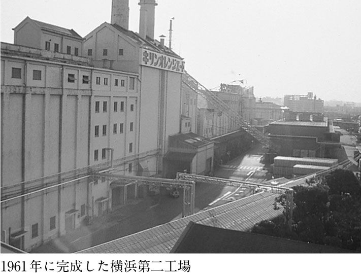

| ビール職人、美味いビールを語る | |
| 山田 一巳 & 古瀬 和谷 | |
| (2002) | |
目 次
本文写真提供／キリンビール株式会社広報部
真下裕
四十六年間ビールをつくってきた
八ヶ岳山麓、山梨県・清里（北巨摩郡高根町清里）は高原の避暑地である。
標高一三〇〇メートル、人口わずか二千人ほどの集落に、行楽シーズンともなると百万人以上の人が訪れる。春は野の花、夏は白樺林の緑、秋は紅葉、冬は一面の雪景色が美しい。
その清里に「達人」と呼ばれるビール職人がいる。山田一巳、六十五歳。『タッチダウン』という地ビールをつくる、マイクロブルワリー「八ヶ岳ブルーワリー」の醸造長である。
八ヶ岳ブルーワリーは、清里開拓の父と呼ばれるアメリカ人宣教師、ポール・ラッシュ博士（一八九七～一九七九）の精神を受け継いで設立された森のテーマパーク「萌木の村」内にある、パブレストラン「ロック」に併設されている。
清里に遊んだ人は「ロック」に立ち寄り、サーバーから注ぎたての『タッチダウン』で喉をうるおす。山田さんのつくるビールは、飲み口がすーっと軽く、泡がうまい。モルトの風味がほどよく芳ばしく、喉に流し込んだ後にいい香りがふんわりと立ち返ってくる。一度飲んで惚れ込む人も多く、山田さんのビールを飲むために、また清里を訪れる。
山田さんはもう四十六年間ビールをつくっている。現役のビール職人の中では、もっとも経験豊富な一人だろう。
一九五五（昭和三〇）年、当時まだ麒麟麦酒株式会社だったキリンビール株式会社（以下キリン、キリンビール）に入社。醸造ラインの現場で経験を積み、商品開発機構の中枢であるパイロットプラントのチーフになる。以降、プラントの責任者として数々の新商品の試醸を手がけてきた。根強い人気を誇る名品『ハートランド』、日本のビール史上に残る大ヒット商品『一番搾り』、季節商品として定着した『秋味』『春咲き』......。これらの商品開発のプラントの責任者を務めてきたのが山田さんである。
一九九六年、定年でキリンを退社。八ヶ岳ブルーワリーの醸造長に就任。「萌木の村」村長・舩木上次さんの「うちで山田さんのビールをつくって下さい」という言葉が決め手だった。
山田さんを知る人は、まずその人柄を讃える。穏やかで礼儀正しく、快活。人の輪をつくるのがうまい人だ。その人柄も、ビールの味に含まれている。
「萌木の村」の舩木さんから「清里で日本一のビールをつくりたい。醸造長にふさわしい人を探してほしい」と依頼されていた、醸造プラントの輸入販売会社「スズキインターナショナル」社長（現・会長）の鈴木智之さんは、舩木さんにこう言って山田さんを紹介した。
「この人なら間違いない。腕も人柄もいい。日本にこれほどのビール職人はそういない」
鈴木智之さんは、日本の大手ビールメーカーのほとんどと深い関わりを持ち、その影響力の大きさから「ビール業界のドン」とも呼ばれる人である。その言葉に偽りはなかった。
パブレストラン「ロック」オープンの一カ月ほど前。ドイツからブラウマイスター（ビール醸造技術者）がやって来たことがあった。醸造プラントを発注したドイツのメーカー「ＪＡＣＯＢ・ＣＯＡＬ」社が、ビールづくりのアドバイザーとして派遣してきたのである。ミュンヘン工科大で醸造工学を修めた、選りすぐりのエリートだった。
ブラウマイスターは横柄な態度で言った。「本場ドイツのビールづくりをあなたたちに教えよう」。山田さんはその申し出を断り、自分の作業を口出しせずに見ているように言った。
日本の職人には日本の職人のやり方がある......。
結局、そのブラウマイスターが教えることは何もなかった。
山田さんのビールづくりから、無言のうちに教えられることがあっただけだった。役目を終えて（？）ドイツに帰るとき、ブラウマイスターは舩木さんにこう言い残した。
「日本に来て、この人に出会えたことは幸運だった。なぜ日本人はこういう職人をもっと大事にしないのだ？ ドイツだったら、町の誰からも達人として崇められているだろう」
ブラウマイスターは、山田さんのビールの愛飲者の一人になった。
ビールは生きている
数年前、地ビールブームが話題になっていた頃、編集者だった私は、地ビールを紹介する本をつくろうと企画し、いくつかの醸造元にアンケートをお願いしたことがあった。
そのとき、山田さんは確かこんな言葉を書いていた。
「ビールは生き物、つくり手の姿勢が正直に表れる酒です」
その言葉が妙に印象に残り、いつか山田さんに会って話を聞いてみたいと思っていた。
条件が整い、その機会を得たのは二〇〇一年の秋。清里の木々が鮮やかな赤や黄に染まる紅葉の季節。待ち合わせ場所の「ロック」に現れた山田さんは、紺の作業着にキャップという格好だった。小柄だがシャキッとしていて、六十五歳という印象は受けない。帽子をとって会釈すると、さすがに髪は白かったが、照れくさそうに笑った顔が爽やかだった。
ログハウス風の「ロック」の店内で、話を聞いた。途中からビールを飲んだ。
山田さんのビールは泡の腰が強い。飲み進めていくと、グラスに泡の線がついていく。しかし、山田さんのグラスは、その線がなかなか下がっていかない。
山田さんは酒に弱いのだ。
酔うと少しだけ饒舌になる。そして、紅く染まった頰を弛ませながら楽しそうに言う。
「ビールというのは......」
その言葉は、山田さんの経験に裏付けられているからこそ引き入れられる。
「ビールというのは生き物ですから。簡単なようでいて難しい。いつも同じようにつくっていればいいというものではないんです。職人がよくビールと対話してやってね。どうしたらもっとうまくなるか、いいものができるかということを自分なりに考えていく。そうすると、それがビールの個性になってくる。だからこそ、我々のような職人の価値があるんです」
山田さんのビールづくりは、職人としてのアイデンティティにしっかりと支えられている。それは、これまでの職人人生でじっくりと熟成されてきた確かなものだ。
山田さんがビールをつくってきた半世紀近くの間、時代が変わり、社会が変わり、ビール事情も大きく変化した。その中で、山田さんは淡々とビールをつくり続けてきた。
ビールにとって個性とは何か。ものづくりにおいて大切なことは何か。この問題を考えるヒントが、山田さんの話には隠されている。
「私が達人だとか日本一だとか言ってくれる人もありますけれど、とんでもない話でね。私はただのビール職人で、キリンにいた頃からうだつの上がらない方でした。役職もつかず、ずっと平みたいなものでしたし。ただ、日本にいる現役のビール職人の中では、誰よりもたくさんビールをつくってきたという自負はあります。一九五五年にキリンの横浜工場に入社してから、四十六年間。毎日ビールばかりをつくってきた。そうしたら『山田さんのビールが飲みたい』と言って下さる方が増えてきて、こんなにありがたいことはありません。
五〇年近くビールをつくってきて、いまだにビールというのは難しい酒だと、本当にそう思います。どうしても完璧なものはできない。うまくできたなと思っても、必ずもっとうまいものにできる余地がある。それをどうやって理想に近づけていくか。そこが面白いんですね。毎日ビールをつくっていても、飽きるなんてことはありません。特に今は好きなように自分のビールをつくらせてもらってますから、毎日楽しくて仕方がないですよ。
私は、清里に夢をつくりに来たと思ってるんです。
実際につくっているのはビールですが、自分にとって理想のビールを追求できるというのは、ビール職人にとっては夢なんです。キリンにいた頃も、うまいビールをつくろうと思って毎日一生懸命やってましたけれど、やはりいろいろな制約があった。私が開発に携わった商品も、結局は私のビールではなく、キリンのビールなんです。
今はここのオーナーに、山田さんのビールをつくって下さいと言っていただいてますから、とことん自分がうまいと思うビールを追求したいと思っています」
「ビールというのは、もちろん自分がうまいと思ってるだけではダメで、お客さんに喜んでもらわなきゃいけない。それもまた難しいところなんです。人の味覚は十人十色。それぞれまるで違いますからね。十人が飲んで十人が満足するビールをつくることは究極の理想ですが、不可能でしょう。十人が飲んで十人がまあまあうまいと思うビールをつくることは可能かも知れない。でも、そんなビールをつくったって平凡なものにしかなりません。それよりも、十人が飲んで三人が本当に感動するようなビールを、私はつくりたいんです。
ものづくりは、お客さん本位とか時代の流行とか、そういうことも大事ですけれど、つくり手がしっかりと理想を持ってないといけない。どういうビールをうまいと思うか。自分なりに理想をつきつめていく。その意志がなかったら、お客さんを本当に喜ばすようなビールはできないと思います。まずは理想があって、そこに近づけていくための技術や知識がある。経験から来るカンが頼りになることもあります。でも、それ以前に理想に近づけていこうとする気持ちが大事です。それがなくなったらビール職人はおしまいでしょうね。
完璧なビールがどんなビールかって、結局そんなものはないんです。でも、それがいつかできるだろうな、と。そんな風に思いながらやっていくのがいいんでしょう。
かといって、あんまり根を詰めすぎてもいけない。職人が鬱々とつくってるビールなんて、何だかうまそうじゃないじゃないですか。先は長いんだから、のんびりと、遊びながらつくっていくのがいいんです。楽しみながらね。
理想を追求して、何かをつくっていくというのは面白いんです。そう思い続けて飽きないことが、職人にとって一番大切なことかも知れません。
これは清里に来てから考えるようになったことなんですが、人がどんなビールをうまいと思うかは、季節によっても多少違いがあります。夏の暑い日にゴクゴク飲むならばキレのいいラガーやピルスナータイプのビールがいいし、秋から冬にかけて、暖炉の火に当たりながらじっくりと飲むならコクのあるアルトやデュンケルタイプのビールがいいでしょう。そうやって季節に合わせてビールをつくりながら、のらりくらりとやっていきたいですね」
八ヶ岳ブルーワリーでは現在、四種類のビールを醸造、販売している。マイルドな口当たりと爽やかな喉ごしを持つ淡色ビール「ピルスナー」、カラメル麦芽の濃厚な風味が芳ばしい褐色の「デュンケル」、艶やかなルビー色で、いちご様の甘く華やかなフレーバーを持つ「アルト」（秋冬限定醸造）、キリッと締まった上品な苦味が爽快な後味を生む黄金色の「清里ラガー」（期間限定醸造）。このうち「アルト」だけが上面発酵タイプで、残りの三種類は下面発酵タイプのビールだ（「巻末付録 ビール用語解説『上面発酵タイプ』『下面発酵タイプ』」参照）。どのビールもそれぞれのタイプの伝統に根ざした個性的な味わいのビールだが、共通しているのは飲み口の軽さと喉ごしのよさ。雑味を徹底的に廃した、清澄なイメージで統一されている。
「ビールの味は原料でかなりの部分が決まってきます。どんなモルトを使うか。ホップは何を使うか。モルトもホップも一種類きり使わないということはあまりないですから、どれとどれを組み合わせるか、どのくらいの比率で組み合わせるか......。それを考えるところから、ビール職人の楽しみが始まります。これまでにいろいろなビールをつくってきた経験から、どんな原料をどれくらいの比率で組み合わせれば、こんなビールができるだろうなというのは、だいたい頭の中で分かりますから、それをもとに原料を選んでいくわけです。
企業秘密もあるんで、あんまり具体的なことは言えませんが、うちでは主にアメリカ、カナダ産のモルトと、ドイツ・ノーザンブリューワ産のビターホップ、ハラタウ産のアロマホップ、チェコ・ザーツ産のファインアロマホップを組み合わせて使っています。
どれも厳選したいいものを使っているのは間違いありませんけど、全部最上のものを使っているかと言えば、そうはいかない。採算が取れなきゃいけないし、安定供給できるかどうかも大事ですから。うちみたいな貧乏所帯でも手に入る範囲で選んでいます。
最上の原料を組み合わせたら最上のビールができるかと言ったら、そんなこともないんです。人と同じでね。相性ということがあります。少し欠点のあるモルトとホップでも、お互いの欠点を補って、いいところをうまく引き出すような使い方を考えてやれば、最上の原料ばかりを使ってつくったビールに負けないうまいビールになります。限られた原料でいかにうまいものをつくっていくかも、ビールづくりの面白いところとしてあるんです。
最上の原料を使うわけにはいかないと言っても、送られてきたものは厳しくチェックしてます。手にとって色を見て、食べて味わう。成分表や発酵試験結果も一緒に送ってもらっているんですが、完全には信用できないですから。自分の目と舌で確かめてみます。
麦にほどよい水と空気を与えてやって発芽させると、芽を育てるために、種に成分がギューッと凝縮されてきます。その瞬間に熱風で乾燥させて、芽の成長を止めてやる。そうすると種の方の成分の変化も止まります。
このタイミングが早すぎても遅すぎてもいけない。デンプンや酵素のバランスが悪いと、仕込みの時にうまく糖化（デンプンが酵素の作用で糖に変わること）してくれません。熱風の加減も大事です。乾燥させる程度にするのか、焦げ目がつくくらいまでローストするのか。その加減によって、できあがるビールの色と香りがまるで違ってきます（「巻末付録 ビール用語解説『モルト（麦芽）』」参照）。モルトづくりにも職人の技があるわけです。うちではこれは、信用のおける業者さんにお願いしています。
いいモルトというのは、それだけ食べてみてもうまいものです。濃色ビールなんかに使うカラメル麦芽をカリッと嚙んでみると、麦芽の焦げた芳ばしい香りがふわーっと口に広がって、甘みが出てくる。淡色ビールに使うモルトだと、もうちょっと爽やかで若々しい味と香りがします。食べてまずいモルトは、その時点でもうダメです。あんまりひどいようだったら送り返します。つくり方次第で欠点が補えると言っても限界がありますからね。
それから、これはこちらではどうしようもないことなんですが、水の性質もビールの味に影響してきます。私は清里のほかに秋田県・田沢湖畔の『湖畔の杜ビール』というところでも醸造長をやらせていただいてるんですが、不思議なものでね。清里と同じようにつくっても、まったく同じ味にはならない。秋田の方が微妙に淡泊な味に仕上がります。
どうしてそうなるのかを厳密に説明することはできませんが、やはり水が違うからでしょうね。清里の自然水はかなり硬度が高いんです。
秋田の味を清里に近づけようと思えば、できないこともないんですが、そんなことをしても面白くありませんから、個性としてそのままにしてあります」
「モルトやホップ以上に私が大事だと思っているのが酵母です。酵母は職人にとって相棒のようなものですから。これがしっかり仕事をしてくれないと、うまいビールはできません。
モルトやホップと同じように、酵母も世界中にいろんな種類があります。その中でいい酵母を選ぶ基準はいろいろとあるんですが、一言で言えば、こちらの気持ちが伝わるということが一番大事です。ここでもっとコクを出したいな、キレを出したいな、酵母がもっと食ってくれないかなというときに、それに応えてくれる。そんな酵母がいいんです。
要はつくり手と酵母の相性ということでしょうね。私は清里に来てから、ずっとドイツのバイエンシュテファン研究所というところから生酵母を空輸してもらって使ってるんですが、もう違う酵母を使う気にはなれません。この酵母に出会えたことはラッキーでした。
酵母には大きく分けて上面発酵酵母と下面発酵酵母があって、それぞれまったく違う性質を持っています（「巻末付録 ビール用語解説『酵母』」参照）が、扱い方の基本は同じ。酵母の自然な力を引き出してやるということです。
酵母がどんなによくっても、大事に扱わなかったらそのよさが死んでしまいます。酵母は麦汁の中の糖分を食って増殖しながらアルコールと炭酸ガス、それにエステルという香気成分を発生させるんですが、酵母が弱っているとそれがうまくいかない。
酵母が弱ることを「へたる」と言います。酵母は七～八回くらいは連続して使っても大丈夫なんですが、いい加減な管理をするとすぐにへたって食いが悪くなってしまいます。原料をケチってもダメです。少ないモルトでビールをつくろうとすると、酵母が栄養不足になって悲鳴をあげます。異臭を発生させたり発酵不良を起こしたりするんです。
そうならないように、職人はよく酵母の気持ちを考えてやらなきゃいけない。そろそろ苦しいだろうな、へたってきてるだろうなということを考えて、酸素を余計に与えてやったり、酵母を入れ替えてやったりする。酵母を無理やり働かせてつくっても、まずいビールしかできません。
酵母は何度も増殖を繰り返していくうちに、だんだん性質が変わってくるんで、本当は毎回入れ替えてやる方がいいんですが、かなり高価なものですから、そんな贅沢なことはなかなかできない。それで発酵が終わったら回収して、また次のビールに使います。
使い回しをするんだったら、なるべく早く使った方がいいです。酵母にとっては、糖分を食ってアルコールと炭酸ガスに分解するというのは自然な営みですから。むしろ冷蔵保存して無理に冬眠させておくことの方が不自然なんです。酵母にとって不自然な状態をできるだけ少なくしてやることが、酵母の自然な持ち味を引き出すことにつながります」
「ビールづくりというのは、ほとんどの部分が自然任せなんです。大麦を発芽させてモルトをつくる製麦から始まって、粉砕したモルトをお湯で溶かし、酵素の作用でデンプンを糖に変化させる糖化、酵母の力でアルコールと炭酸ガスを発生させる発酵、香味が落ち着いてくるのを待つ熟成......。科学の力だけでできることは一つもありません。全部、自然の作用を利用してるんです。原料と水と酵母が出会って、自然にビールになっていくのを人間が手助けしているだけだと考えてもいいでしょう。
我々ビール職人の仕事は、原料の組み合わせを考えてやることと、ビールができていくのを手助けしてやること。それくらいのものです。
それくらいと言っても、ビールを完成させるまでには何十どころか何百もの条件を決めて、頭に入れておかなきゃいけません。原料の比率をどうするか、ホップをどのタイミングで入れるか、発酵のときの温度を何度にするのか、どれくらいの期間熟成させるのか......。その条件の組み合わせによって、できあがるビールがまるで違ってきます。その条件というのも、糖化のときの温度や時間を少し変えるだけで違いが出てくるというものですから、条件の組み合わせは無限にあります。ビールづくりの可能性も無限にあるわけです。
その無限に可能性がある中から一つのビールをつくるには、まず職人がイメージを持たないといけません。こんなビールにしたいなという大まかなイメージを頭に描いて、それから飲み口はこう、鼻を近づけたときの香りはこう、味はこう変化させて、喉ごしと後味はこんな感じにしようという風にイメージを具体化させていく。そこから遡っていろいろな条件を決めていくわけです。その過程を私はカンでやっていますけれど、大手メーカーの商品開発の場合は、香味データの目標数値を設定して厳密な計算で条件を決めていきます。
私が清里でビールをつくるようになってから、もっとも大切にしたいと思っているのは飲み口と喉ごしです。清里の爽やかな風のようなビールをつくりたい。爽快な飲み口と喉ごしというのは、ビールならではの要素でもありますしね。
飲んでいるうちに飲み飽きしたり、喉にうっときたりする、そんな下手なビールはつくりたくない。口当たりが軽く、すっきりしていて、飲んだ後にふわっといい香りとモルトの芳ばしいうまみが立ち返ってくるような、そんなビールをつくりたいんです。
これはキリンで学んだことの影響が大きいんですが、私自身、そういうビールが一番うまいと思っています。だから、爽やかな飲み口と喉ごしを追求していくことが、私の理想のビールを追求することにもつながるんです」
「新しいビールをつくるときには、必ずレシピとプログラムを作成します。
レシピというのは、原料の組み合わせや糖化の方法なんかを大まかにまとめたもの。プログラムというのは、仕込みや発酵のときの温度の変え方を具体的に書いていったものです。
それをつくっておかないと、同じビールがつくれなくなりますからね。
たとえば、うちでは八日間の発酵期間の中で八～一二度の間で温度を変化させているんですが、それをどういうタイミングで、どれくらいずつ変えていくのか、折れ線グラフのような図で示しておくんです。
レシピやプログラムを作成すると言っても、何百もある条件を全部書くわけではありません。ビール職人にとっては当たり前のこともありますし、全部書いても混乱するだけですから。厳密にやらなきゃいけないごく一部の条件だけを書いておきます。地ビールのような小規模醸造の場合は特に、実際にビールをつくりながら職人が感覚的に調整していった方がいいことも多いんです。そういう遊びの部分に、ビールとの対話が生まれてきます。
ビールというのは本当に微妙な酒でして。毎回まったく同じようにつくっていればいいというわけにはいかないんです。
モルトも同じものを使っていると言っても、年によって微妙に状態が違いますし、ホップも同じ種類でもまったく同じではない。ワインだったらブドウの出来具合がワインづくりに大きく影響してきますよね。製麦工程がある分、ブドウとワインの関係ほど直接的ではないんですが、ビールも麦の出来具合に多少は左右されるんです。
酵母も毎回少しずつ違う。大人しいのや荒っぽいのがいます。そいつらと出会うところからビールづくりが始まるわけですから、毎回新鮮な気持ちでやらなきゃいけません。
一期一会なんですよ。ビール職人にとっても、飲む人にとっても。
といっても、毎年味の違うビールを出すわけにはいきませんから、お客さんに分からないところまでは調整します。そこがビール職人の腕の見せどころですね。
マニュアル通り、毎回同じようにつくっていたら、むしろ味はバラけてしまう。職人がうまくタクトをとって、まとめ上げていかなければいけないんです。
じつは、私の方で、お客さんに分からないようにわざと味を変えることもあります。いつも同じような味に仕上げていたのでは進歩がないですから。ほんのちょっとずつ理想に近づけているつもりです。これは私個人の、密かな楽しみでもあります」
「ビールというのは生き物なんです。同じつくり方をするのでも、そのことを分かっているのといないのとでは全然違う。
たとえばエアレーションという作業があります。発酵を終えた酵母を回収してまた次の発酵に使うとき、酵母が疲れていますから、酸素を与えて活性化させてやらなきゃいけない。
大手メーカーだったら、そのための機械があってボコボコやってるんでしょうけれど、小さな地ビール工房に、そんな機械を買うお金はないですから。いかにお金を使わないようにつくるかも大事ですから。お金を使う代わりに職人が体を使って、せっせせっせと手作業でやるんです。
うちの場合、泥状になっている酵母をバケツからバケツに移しかえるようにして酸素を練り混ぜてやるんですが、その時間はまさにビールとの対話ですね。
決まった回数だけバチャバチャ混ぜればいいというものじゃない。酸素を与えすぎてもダメですから、酵母の気持ちを考えて、じっくりと丁寧にやるんです。酵母が活性化するとワーッと膨らむように盛り上がってきますから、それを見て回数を変えたり、入れ方を加減したりしてやる。それをするかしないかによって発酵がずいぶん違ってきます。
ビールほどつくり手の姿勢が反映される酒はないんじゃないかな。熱心につくれば熱心につくったなりのものができるし、いい加減につくればいい加減につくったなりのものができる。同じ原料を使って、同じプログラムでつくったとしても、どういうわけか絶対にそうなんです。だからこそ、私のようなビール職人の存在価値があるということもあります」
「清里で地ビールをつくり始めた頃、ある人たちから『もっと地ビールらしい個性的なビールにしてはどうか』と言われました。山田のところのビールは洗練されすぎている。大手メーカーのビールと区別がつかない。もっとクセのある個性的な味にした方が地ビールらしくて受けるんじゃないか、と。地ビールブームの頃にはよくそんなことを言われたものです。
それを聞いて、何を言ってるんだと思いましたね。個性って何だって。
うちのビールは十分に個性的です。
自分がうまいと思うビールをつきつめていったら、今のビールになった。それ以外に個性なんてないじゃないですか。地ビールらしい味にしようとか、大手とは全然違う味にしようとか、そんなことを考えてつけた個性なんて、本当の個性じゃないでしょう。
それにビールの個性なんて言うのは、つけようと思ってつけるべきものじゃないんです。もちろん、もっとキレのいいビールをつくろうとか、もっとコクのあるビールにしようとかいうことは私も考えます。でも、自分の理想に近づけようと思ったら、職人がよく対話してやらなきゃいけない。職人が話しかけ、ビールの声を聞いて、時には酵母の気持ちになってみたりしてね。それぞれの持ち味を大事にしながら、よく対話してやる。そうやって時間をかけてつくっていくと、ビールの方が少しずつこちらの言うことを聞いてくれるんです。職人が一方的に思い通りにしようとしたって、絶対にうまいビールはできないですよ。
原料と水と酵母が出会って自然にビールになっていこうとしているところに、職人も加わっていく。それくらいのスタンスでつくるのがいいんじゃないかと思っています。
職人の力が一番発揮されるべきなのは、発酵不良なんかが起こったときです。こちらがきちっと管理していても、停電になったり、機械にトラブルが起こったりして、ビールが暴れ出すことがあります。発酵が止まってしまったり、見当違いな方向に変化が進んでいってしまったりするんです。そうなったときに、経験の浅い職人では、もう対応できない。そのままビールをダメにするしかなくなってしまいます。
発酵不良が起こったときこそ、職人の真価が問われるんです。ビールが自然な状態に戻れるように環境を整え直していってやる。それを可能にするのは職人の経験から来るカン以外にありません。本当にビールと対話できるかどうかが大事なんです」
「私が清里に来てから、一番こだわっていることの一つが熟成です。発酵を主発酵と言う場合には熟成を後発酵とも言います。ビールづくりの工程で一番時間がかかるのが後発酵です。
主発酵を終えたばかりのビールを若ビールと言うんですが、これは濁りがあって、味も匂いも雑だから商品にはできない。それで貯蔵タンクに移して、低温でゆっくりと熟成させていきます。私のところでは短くても二十四日間、長いときで一カ月以上時間をかけて、若ビールをマイナス一度くらいまでだんだん冷やしていく。そうすると、酵母が少しずつ発酵を続けながら止活して、タンクの底に沈んでいく。液体がきれいに澄んでくる。味が落ち着いてくる。発酵のときに出た嫌な臭いが抜けて、爽やかなビールの香りになる。炭酸ガスが十分に液体に溶け込んで飲み心地がよくなる......。香味がまろやかになっていくわけです。
熟成のときは、温度管理をしながら、待っているしかない。
ビールがゆっくりと自然に熟成していくのに任せるしかないんです。
でも『これでよし』という最後の見極めは私がしたいと思っています。ビールというのは、熟成が一日違うだけでも味が違ってきます。最後の一日二日の違いは、お客さんには分からないかも知れませんけど、ここまで手塩にかけて大切に育てたビールですから。最高の熟成状態になったところで、お客さんに飲んでもらいたい。毎朝一番に貯蔵室に来て、ビールを飲んで、熟成をチェックするのが、私の日課になっています。
いつも熟成のちょうどいいところでお客さんに出せるように、タンク繰りには気を遣ってるんですが、ここの醸造長になってから、一回だけ失敗して、ビールを捨てさせてもらったことがあるんです。最初の頃はお客さんがどれくらい来るのか分からなくてね。たくさん仕込みすぎてしまった。結果として、一部のビールが予定よりも貯蔵タンクの中で熟しすぎてしまったんです。試しに飲んでみると、ドライビールのような刺激の強い味がする。
決して商品に出来ないものではなかったし、むしろこういうビールの方が好きだという人もたくさんいるでしょう。周りも『出しましょうよ』と言ってくれた。ビールを捨てる時に立ち会いに来た国税局の人からは『何で捨てるんだ。もったいないじゃないか』と叱られました。ビールを捨てるということは、国税局にとっては酒税の損失になりますし、私たちの貧乏会社としても、大きな痛手になるわけです。
それでも、私はどうしてもそのビールは出せないと思った。そんなものでうまいと言われてもまずいと言われても、私には責任が持てない。それはもう、私の手を離れたビールになってしまっていたんです」
「今は『とりあえずビール』なんて言って、ビールがとても気軽な飲み物になっています。缶ビールやボトルに直接口をつけて飲む人も増えてきました。それはそれでかまわないと思っているんですが、私としては、やはりビールはじっくりと味わって飲んでもらいたい。後味まで楽しんでもらいたい。ビールというのは、本来そういう飲み物なんです。それを理解してもらうためには、こちらがそれなりのものをつくらなければいけないでしょうね。
ビールを売る側の人にも、もっと気を遣ってほしいと思います。地ビールを売る小売店の中には驚くほどいい加減な扱い方をしているところが少なからずありますから。
冷蔵庫に入れないどころか、平気で西日に晒していたりする。ビールというのは日光に一番弱いんです。それでビール瓶はたいてい日光を防ぐ濃い茶か青にしてあるんですが、それで完全に防げているわけではありません。西日になんて晒したら、あっという間にダメになって、日光臭（「巻末付録 ビール用語解説『日光臭』」参照）という嫌な臭いがついてしまいます。
うちのビールは、熟成の後にタンクの底に沈んだ酵母を取り出していますけど、濾過も熱処理もしていませんから、生きたままの酵母が少し入っています。酵母が入っているということは、瓶詰めした後もビールが生きているということです。瓶の中でも生きて変化し続けています。
残念ながら、うまく熟成していい方に変化していくということはありません。瓶詰めした後は、どんどん劣化していくだけです。だから瓶で買ってもらったお客さんには、冷蔵庫で保管して、できるだけ新鮮なうちに飲んでほしいと思います。
ビールは注ぎ方によっても、うまさが違ってきます。だから、パブレストランのスタッフに『もっと大事に注ぎなさい』と注意することもあります。それまで大事に大事に育ててきたビールですから、最後に一分早く出すために、いい加減な注ぎ方はしてほしくない。
グラスに一回さっと注いだら、泡が収まるのを待って、もう一回。せめて二回には分けて注いでほしいですね。ほどよく泡が盛り上がったビールというのは格別にうまいですから」
「パブレストランに飲みに来たお客さんには、いろいろと言葉をかけてもらっていますが、一番よく言われるのは、キリンと比べて云々ということです。これはもう宿命のようなものでね。キリンにいた私がつくっている限り、どうしたってキリンと比べられてしまう。
でも、私としては『キリンのようなビール』とは言われたくない。そういうこだわりはあるんです。私はビールづくりのほとんどをキリンで学んだし、今でも大手メーカーのビールの中ではキリンが一番うまいと思っています。だからと言って、キリンと同じようなビールをつくっていたら、私がつくっている意味がない。せっかく夢を追える環境を与えてもらっているわけですから、自分にしかつくれないビールをつくりたいと思っています」
山田さんが中途採用でキリンビール横浜工場に入社したのは、一九五五（昭和三〇）年。それまで高級品だったビールが、ようやく大衆化していこうとしていた時代だ。
一九四九（昭和二十四）年、戦中戦後、酒類の生産・配給を統制してきた酒類公団が解散。酒類の自由販売が復活した。町のビアホールなども再開され、ビール市場はにわかに活気づいていく。急増した需要に対して、ビールメーカーの供給が追いつかなくなり、たちまち「ビール不足」という問題が起こった。それが深刻化して、国税庁が「家庭用を優先的に販売するように」との勧告を発したのが一九五五年という年である。
高度経済成長期に向かう経済の活発化と、日本人のライフスタイルの洋風化の波に乗って、ビールの需要はさらに爆発的に増大していく。昭和三〇年代前半に、それまで日本人にもっとも多く飲まれていた清酒に代わってビールの年間庫出量がトップになって以来、酒類全体の庫出量の増加は、ほとんどそのままビールの庫出量の増加である。
そんな中、もっともシェアを拡大させていったのが、麒麟麦酒株式会社。今のキリンビール株式会社だった。
戦前、ビール市場のシェア七〇％以上を占めていた巨大企業・大日本麦酒株式会社（一九〇六年、日本麦酒、大阪麦酒、札幌麦酒が合併して誕生）に大きく後れをとっていた麒麟麦酒に、浮上のきっかけを与えたのは、戦後ＧＨＱの占領政策の一環として施行された「過度経済集中排除法（集排法）」だ。一九四八（昭和二十三）年、この集排法が適用され、大日本麦酒に分割指令が下る。翌年、解散して日本麦酒株式会社と朝日麦酒株式会社が誕生。これが今のサッポロビール株式会社とアサヒビール株式会社（以下、サッポロ、アサヒ）である。大日本麦酒が分割されてもなお、麒麟麦酒は三番手のメーカーだったが、日本・朝日両社の混乱もあって、差は年々確実に縮まっていった。
一九五四（昭和二十九）年末、日本麦酒と朝日麦酒は、麒麟麦酒に対して生産比率協定の締結を申し入れる。じつはこの年、麒麟麦酒のシェアが初めて二社を追い抜いてトップに立っていたのだ。そして申し入れを断り、さらに生産体制を強化した麒麟麦酒は、その後トップの座を譲ることなく、近年まで続く独走態勢を固めていった。
山田さんがキリンビール横浜工場に入社した一九五五年は、日本のビールの本格的な普及期の入り口であり、キリンにとっては快進撃が始まった年でもあった。
「私は一九五四年に横浜市内の高校の機械科を出たんですが、すぐにキリンに入社したわけではなくて、卒業してから一年くらい、町工場で設計の仕事をやっていました。設計と言っても、まだ何もできませんから、ほとんど外注先まわりです。羽田に近い、森ヶ崎あたりの工場を自転車に乗って回っていました。そこで、それぞれの分野で優れた技術を持った職人さんたちが、私のような若造にペコペコ頭を下げているのを毎日見てまして、ああ、職人というのは大変だな、職人になんてなるもんじゃないな、と思いましたね。
町工場を辞めてキリンに入社したのは、ビールに興味があったからじゃありません。その頃はまだ、ビールが今ほど一般的じゃなかった時代ですから。進駐軍の人が瓶ビールをラッパ飲みしていたことや、酒屋の裏にがっしりした木の箱に入ったビールが積んであったりしたことは何となく覚えてますけれど、町工場の人たちがビールを飲んでいたという記憶はあまりないですね。ビアホールなんかに行けば、当然みんな飲んでたんでしょうけれど、当時は未成年でしたから。ビールを飲みたいと思ったこともありませんでした。
私が入社する前のキリンは、ビール業界の中でも三番手のメーカーで、それほど大きな会社ではなかった。ただ、堅実な会社というイメージはありました。それに釣られて、縁故を頼って入社したわけです。入社前はビールに興味がなかったどころか、麒麟麦酒株式会社という会社の名前さえよく知らなかった。私は今でもこの『麒麟』という字がちゃんと書けませんけど、要するに安定した給料がもらえれば、どこでも、どんな仕事でもよかったんです。幸い体は頑丈でしたから、たいていの労働はこなせるだろうと思っていました。
キリンの横浜工場に入社して、最初は清涼飲料部門にいたんですが、すぐ人手が足りないっていうんで、ビール醸造部門の仕込み場に回されました。ここがキツイ職場でして。今でこそキリンは全部コンピュータ制御でやってますけど、当時はほとんど手作業だった。
たとえば、副原料であるデンプンの粉を運んできて添加するんですが、この袋が重いんです。三〇キロくらいある。それを何度も運んでいると、腕はしびれてくるし、全身粉まみれで真っ白になる。麦汁を搾り出すときに使う搾り機の、濾過フィルターを取り替える作業も重労働でしたね。布が麦汁を含んでいるから、これも重い。しかも、足場の悪い台の上でやっているから、気を抜くと危ないんです。下ではベルトコンベアーが動いてます。そのうえ、すぐ近くで麦汁をグラグラ煮沸させていますから、蒸し暑い。
仕込み場に回されて、最初に綿のパンツとゴムの長靴を支給されたんですが、それが作業着でした。ちゃんとした作業着もあったんですが、暑くてとても着てられなかった」
当時のキリン横浜工場の醸造ラインは「仕込み場」「発酵場」「貯蔵場」と呼ばれる三つの仕事場に分けられていた。山田さんが仕込み場に移ったばかりの一九五八（昭和三十三）年にキリン横浜工場を取材した、批評家・大宅壮一が面白い文章を書いている。
「キリンビールの横浜工場は、文久二年に薩摩藩士が英国人を殺傷した〝生麦事件〟で知られた生麦にあるが、ビールの製造工程を見ると、〝生きている麦〟を処理する――麦芽も酵母も生きもので、一種の飼育工場といった感じである。（中略）とりあつかう量が大きいので、建物は恐ろしくがん丈にできている。麦芽を仕込むところは、うだるような暑さで、従業員はパンツ一つで作業しているが、発酵室はがいとうを必要とするくらい冷房がきいている。さまざまな大きさのタンクやパイプのならんでいるところは、軍艦の内部みたいだ」（『昭和の企業』〈ちくま文庫〉「麒麟麦酒」より抜粋）
「若い頃は言われるままに作業していただけですが、じつは仕込みの段階で、ビールの味はだいたい決まっています。私の感覚的なものですが、七〇％ぐらいは決まっているでしょう。
粉砕したモルトにお湯を加えて粥状にしたものに、別の釜で粥状にした副原料を加えて加熱していくと、酵素の作用でモルトのデンプンが糖に変わっていく。これを糖化と言うんですが、この糖化の段階で、マッシュ（「巻末付録 ビール用語解説『マッシュ』」参照）の中の糖をどんな状態にしておくかが肝心なんです。次の主発酵で、酵母が糖を食べてアルコールと炭酸ガスに分解するんですが、糖は鎖状になってますから、これを酵母が食べやすいように切ってやらなきゃいけない。酵母が食べられない糖は分解されないまま残って、ビールのコクをつくる要素になります。だから、酵母が食べられない糖が多く残るように糖化すると、コクのあるビールになりやすい。逆に酵母が食べやすい糖ばかりにしてやると淡泊なビールになりやすいんです。
糖化が終わったら、『搾り』と言って、マッシュを濾過フィルターにかけて仕込み粕を取り除き、麦汁にします。マッシュをそのまま搾って濾過した麦汁が一番麦汁、一番麦汁を搾った後にお湯を足して搾り出したのが二番麦汁です。昔はもちろん一番麦汁だけでつくるなんて発想はなかったですから、一番麦汁と二番麦汁を混ぜて使うのが当たり前でした。
濾過した麦汁は煮沸釜に移してグラグラ沸騰させるんですが、このときにホップを添加します。
ホップというのはアサ科に属するツル性の植物の毬花で、ハーブの一種だと考えれば分かりやすいでしょう。それを麦汁の量に比べたらほんのちょっとなんですけど、加えてやる。ホップを加えなかったらビールにはなりません。ビールの苦味も香りも泡も、全部ホップに含まれるフムロンやルプロンという成分の働きが大きく関係してるんです（「巻末付録 ビール用語解説『ホップ』」参照）。今はペレット状にしたホップを使うことが多いんですが、私たちの頃は乾燥させたホップを何キロという決められた分だけとって、麻の袋に詰めて運んで、数回に分けて釜に放り込んでいました。
仕込み場でつくる麦汁には、糖分の他にもビールの味を決める成分がいろいろと含まれていて、それを全部ひっくるめてオリジナルエキス（原麦汁）と我々は呼んでいました。
オリジナルエキス成分の構成がビールの味を決めることになりますから、エキスの成分比は比重計なんかではかって、厳密にやってましたね。といっても、原材料なんかは決められた分だけ釜に放り込んでいただけですから、ほとんど間違えようがない。
仕込み場で気を遣っていたのはやはり温度です。
今のキリンの工場では温度調節も全部コンピュータ制御でやってますけど、私がいた頃はそれも手作業でした。この温度調節の仕事を昔は『糖化』や『釜見』（麦汁を煮沸する作業）と言って、仕込み場の中でもかなりベテランの人たちがやっていましたけど、若い頃は、
『糖化や釜見は楽でいいな』
と思っていました。それ以外の仕事は重い物を運んだり、熱い思いをしたりする重労働ばかりでしたから。でも、実際にやってみたらシビアな仕事でした。特に糖化は、温度を一度間違えるだけで怒鳴られて、始末書書かされてましたからね。温度調節の大切さは、この頃に叩き込まれたようなものです」
「仕込み場には用途の違う大きな釜がいくつもありました。マッシュを加熱するのも麦汁を煮沸するのも、もちろん密閉された釜の中でやってるんですが、ホップを放り込むときなんかに蓋を開けたりしますからね。仕込み場にはいつも麦の匂いが充満していた。
これがムッとするくらい強い匂いで、慣れてしまえばどうということもないんですが、ダメな人はダメでしょう。
ずっと麦汁に浸かってるような気分になる。一日仕込み場で作業していると、つま先から髪の先まで、もう体中に麦の匂いが染みこんで、なかなか落ちなくなるくらいです。
ホップの匂いもまた強烈でした。ホップ庫に入ったらすぐに匂いが染みつきます。
仕事が終わると会社の風呂に入ってから帰るんですが、電車でよく顔をしかめられたものです。
私が仕込み場にいた頃は、ちょうど高度経済成長期で、ビールが飛ぶように売れていた。キリンが業界の中でシェアトップになったのも、私が仕込み場に移ってすぐの頃ですね（これは山田さんの誤解。実際には山田さんが入社する前の一九五四年にはすでにトップに立っている。しかし、現場で働いていた従業員の感覚としては、まだまだ追いつけ追い越せというムードであったようだ）。
会社がどんどん大きくなっていて、主力工場である横浜工場では毎年のように瓶詰めラインが増設されていました。瓶詰めラインが増設されても醸造ラインはそう簡単に増やせませんから、四六時中フル稼働させなければならなくなるわけです。
つくってもつくっても追いつかないという状態でしたね。仕込んでも仕込んでも、次の工程の担当からもっと持ってこいと言われる。ビール不足なんて言われてた時代ですから。
現場の作業員も、最初一日三交代制でやっていたのが二交代制になり、一日十二時間労働が何カ月も続いた時期もありました。ちょっと機械がトラブルを起こせば、わずかな休みも返上です。しかもダラダラやっていれば、すぐに仕込み場の親分みたいな人から、
『何をやってるんだ！』
と怒声が飛んでくる。本当に荒っぽい職場でしたね」
「交代の人と入れ替わるときに、差込と言って、一時間ほど風呂に入ったり着替えたりする時間があったんですが、みんなこの時間にはビールを飲んでいました。どこかの貯蔵タンクからかっぱらって来たものをどんぶりで。つまり盗飲です。どういうわけか、ビールになる一歩手前の若ビールや仕込み場でつくったばかりの麦汁だったこともありました。
もちろん、今のキリンビールではそんなこと許されないでしょうけれど、当時は荒っぽい時代でしたからね。みんなどんぶりで二杯も三杯も飲んでいた。私も大先輩から、
『おう。お前も飲めや』
とどんぶりを渡されて、断るわけにはいかないですから。みんなと同じように飲んでました。じつは私が初めて飲んだ酒は、そのどんぶりのビールだったんです。味なんて覚えてないですよ。『苦いなあ』と思って飲んでたんじゃないかな。私がビールをうまいと思うようになったのはキリンに入社して一、二年経ってからで、それまではただ苦い酒だとしか思えなかった。みんなが飲んでいるから飲んでいただけです。
私は今でもそうなんですが、あまり酒に強くない。だから、どんぶりの半分くらい飲んで、後はこっそり捨てていました」
「若い頃はとにかくよく遊んでましたね。およそ遊びと呼ばれるものは何でもやった。仕事が終わると、それこそ寝る時間を削ってでも遊んでいたという感じです。先輩から、
『今どこそこのキャバレーにいるからすぐ来い』
なんて電話がかかってくれば、寝ていたって上着をはおって飛んでいきましたよ。給料日前で金がなくて、腕時計を質に入れてから遊びに行ったことも何度もあります。
高度経済成長期でしたから、どこの盛り場に行っても活気があって楽しかった。
その頃のサラリーマンは、みんなそうだったんじゃないかな。とにかくよく働き、よく遊んでいた。遊ぶことが明日の仕事の活力になっていた。そういう時代です。
キリンがどんどん大きな会社になっていくのは、中にいてもはっきりと分かりました。現場の末端である私の月給が年に三万円も上がっていた時期があるくらいですから。

そりゃあ、やりがいがありましたよ。自分たちのつくったビールが飛ぶように売れて、会社が大きくなる。次々にキリンの工場ができる。自分たちの給料も上がる。どの酒屋、居酒屋に行ってもキリンビールが並んでいるわけです。他社製品と飲み比べてみても、やっぱりキリンが一番うまいな、と思ってね。キリンに対する愛社精神は自然と身についていきました。
うまいビールをつくろうなんて思うようになったのは、ずっと後になってからです。若い頃はそんなこと考える余裕がなかったし、流れ作業の一部をやっていただけですから、考えても仕方がなかった。
ただ、早く仕事を覚えたいとは思っていましたね。もっと遊ぶ金が欲しかったし、早く一人前になって所帯を持ちたかった。若い頃はみんなそれでいいんじゃないかな。
そんな動機でしたけれど、休憩の時間に先輩にお願いして、後ろにつかせてもらって、仕事を教えてもらったりしていました。教えてもらうと言っても、言葉でちゃんと教えてくれる先輩なんて滅多にいませんでしたから、作業を勝手に見て覚えるしかなかった」
「仕込み場にいた頃の大先輩に吉川さんという人がいました。吉川さんには、仕事を教えてもらったり、遊びに連れて行ってもらったりして、お世話になりました。仕事のあとよく、
『映画でも見に行くか？』
と誘ってもらっていたこともいい思い出ですね。私はキリンにいて、本当に周りの人に恵まれたなあ、と思っているんですけれど、吉川さんがその最初の一人です。
吉川さんは穏やかな人柄で、暇さえあれば休憩室の掃除をしていました。一度、休憩室に戻ったら、吉川さんが一人で掃除をしていて、私にこう言ったのを覚えています。
『こういうことはみんなが嫌がるだろ。でもな、こういう掃除みたいなことでも誰かがやらなきゃいけないんだからな。気がついた人がやれば、みんなが気持ちよく仕事できるだろ』
その言葉は何だか印象に残ってますね。その通りだなあ、と思って。それで私も、吉川さんの真似をして、人の嫌がる仕事をなるべく進んでやろうと思うようになりました。
ビールに限らず、ものづくりというのは、人の環境も大事なんです。
つくり手が気持ちよく仕事できたら、ビールだっていいものができるし、致命的なミスも起こらなくなる。雑菌を繁殖させてしまうような大きなミスが出るのは、たいてい職場の環境が悪かったり、人間関係がうまく行っていなかったりする時です。だから、職場の環境をよくしていくことや人の輪を大事にしていくことも、ビールづくりに関係しています。
もちろん、私がそんな風に考えるようになったのは、ずっと後になってからですが......。その時に改めて、吉川さんのような人の存在の大きさが分かりましたね」
「仕込み場には現場で叩き上げたベテランの職人さんがいて、そういう人たちにはよく怒鳴られました。仕込みの一つ上の工程を担当する発酵場にも主みたいな人がいて、私は陰で『敵さん、敵さん』なんて呼んでましたけれど、その人も怖かったですね。
仕込み場で仕込んだ麦汁を、発酵場から言われた分だけ決められた時間に送って、それを敵さんに報告しなければならなかったんですが、少しでも遅れると怒鳴り飛ばされる。そのクセ、その敵さんが意地悪なのか何なのか、時々いるはずの時間にいないんですよ。かといってそこでモタモタしてると、仕込み場の方の親分に怒鳴られる。
困ったなあ、という思いは何度もしました。でもまあ、昔はそういう存在感のある人がいて、現場の雰囲気を引き締めていたものです。
私は一九五五年に仕込み場に入ってから八三年に発酵場に班長として移るまで、二十八年間も仕込み場にいましたから、最後の方は私自身が仕込み場の主のようになっていました。ずっと平でしたけれど。私のことを怖いと思ってる人もいたんじゃないかな。今じゃ私もすっかり丸くなりましたが、当時は仕込み場全体に響くくらいの大声で、
『バカ野郎！ 何やってるんだ！』
とよく怒鳴ってましたからね。そうやって怒鳴る人がいないと危ないんですよ。危険な職場ですから。気を抜いて作業しているとケガをするんです。それでダラダラやっている人なんかには厳しく注意していました。
その代わり、若い者の面倒はよく見た方だと思います。後輩たちをよく遊びに連れて行きました。当然、全部私の奢りでね。給料がいくらあっても足りないくらいでしたが、そういうコミュニケーションが大事なんです。どんなに厳しく叱ったって、若い者は一緒に遊んでパーッと騒げば、次の日にはきれいさっぱり忘れているものです。
飲みに行くとよく若い者の不満も聞いてやった。キツイ職場ですからね。みんなストレスが溜まってたんです。管理職クラスには大学出のエリートもいて、中には現場の人間をあからさまに蔑むような態度をとる人もいましたから、そういうことへの不満もありました。
若い者の不満を聞いてそれで終わりにしては意味がないんで、よく係長に状況改善を要求したりしました。係長にしてみれば、私は煙たい存在だったでしょうね。一度、係長に、
『お前はバカだな』
と言われたのを覚えています。
『お前がそんなに熱くなるほど、若い者は不満に思ってないよ』と。
まあ、確かにそうだったかも知れません。
それでも、私はよく係長と喧嘩してました。上司に好かれるよりも、若い者に好かれるようにしよう。若い者が気持ちよく働ける環境をつくることに気を遣おうと思っていましたから。そういう風にすることが、後々の自分の仕事を楽にすることにもなっていたんです」
「私は一九六五年に横浜第一工場の仕込み場から第二工場の仕込み場に移ることになりまして、その時に送別会をやっていただいたんですが、困ったことになりましてね。私は最初上座に係長と新しく第一工場の仕込み場に入って来る人と一緒に座ってたんですが、退屈になったんで、乾杯から五分くらいで下座に移動した。そうしたら、全員がゾロゾロと下座に集まってきてしまった。上座には係長と新人さんだけがポツンと残っているという状況です。私は後輩たちに囲まれて楽しかったですが、あれは気まずくもありましたね」
山田さんより十年遅れて（一九六五年）キリンに入社し、横浜第二工場で貯蔵係を担当していた鶴田通弘さんに、第二工場の仕込み場にいた頃の山田さんの印象を聞いた。
「私が知り合ったときには、山田さんはもう一派の親分のようになってましたね。仕込み係の休憩室に行くと、若い連中に囲まれて、山田さんが競艇の話かなんかしてる。またスカッとするような派手な遊び方をするんだ、山田さんは。勝っても負けても笑い話ですよ。それで仕事が終わると、今度はお前ら飲みに行くぞと。山田さんは人の話を聞きながら雰囲気を楽しんでるだけなんですけどね。お金はポンと全部出してくれる。当然、山田さんを囲む人の輪がどんどん大きくなっていきました。
あそこは奥さんがまた、山田さんに輪をかけて気っ風のいい人なんだな。山田さんの家に招かれて遊びに行くと、盆と正月が一緒に来たような歓待をしてくれる。山田さんは人が喜ぶと自分も楽しいという人だから、人に酒飲ませて、自分はそれ見てニコニコしてる。
山田さんが仕事中は厳しい人だったとか上司とよく喧嘩してたとかいう話は聞いてますけど、私なんかが覚えているのは可愛がってもらった思い出ばっかりです。
後で山田さんは第一工場の発酵の方に移ったんですが、それからもよく第二に来て、我々の面倒を見てくれていました」
「第二工場の仕込み場に二〇年いて、それから一つ先の工程を担当する発酵場に回されました。発酵場での主な仕事は、プログラム通りに温度調節をしながら発酵を見守っていることで、仕込み場に比べれば体を使う仕事は少なかったんですが、何もないわけではなかった。
今では同じタンクで何回も連続して発酵できるようになってるんですけど、当時はまだ一回発酵させたら、タンクの底に溜まった酵母を全部かき出して掃除しなければいけなくてね。これは重労働でした。足場は悪いし、匂いもすごい。当番制にしてたんですが、みんな嫌がってました。でも、こういうことをきちっとやらないと、いいビールはできないということをよく言い聞かされてましたから、嫌でも手を抜くようなことはしなかったつもりです。
発酵場には班長として配属されたんですが、私なんて大学も出てない職人に過ぎませんから、偉そうに班員を管理するなんて気持ちはさらさらなくて、班長なんて地位をもらったんだから、自分が一番一生懸命に働かなきゃいけないと思っていました。班員の中にちょっと体の弱い人がいて、その人の分まで重労働のタンク掃除をやったりもしました。
それでも、厳しくすべきところは厳しく締めていたつもりだったんですが、一度班員のミスで若ビールを三分の二も排水口に流してしまったことがあった。作業が大幅に遅れまして、あの時は困りましたね。そんなミスがバレたら、その班員は処分されてしまうでしょう。だから、上層部には気づかれないようにそのミスをカバーしたかった。
二〇年近く経って、もう時効だと思いますから言いますけど、その時に助けてくれたのが、じつは仕込み場の後輩たちだったんです。ボソッと漏らしたら、
『山田さんが困ってるんなら力を貸しましょう』
と言ってくれて、こっそり規定の量よりも余計に仕込んで、発酵場に送ってくれた。彼らだって、そんなことをしたのがバレたら大目玉をくらっていたはずなのにね。あれは嬉しかったです。自分の人づき合いが間違ってなかったんだなあ、と思いました」
「パイロットプラントに異動になったのは一九八四年、私が四十八歳のときです。後で聞いたら、発酵場の班長をやらせていただいたこと自体、パイロットプラントに移る前に経験を積ませておこうということだったらしいんですが、最初は俺なんかでいいのかなあと思ってましたね。大学も出てない私が、開発の側に回るとは思ってもみなかったですから。
パイロットプラントというのは、キリンという大企業の中の小さなビール工房みたいなところです。当時は五キロリットル醸造できるプラントがあって、それで開発用の試作品をつくっていた。上の方からこんなビールをつくってくれというコンセプトが来て、技術開発部、当時はまだ製造部生産技術担当と言ってましたけれど、その中の設計担当の連中が、コンセプトを具体的な香味に翻訳して、机の上の計算でレシピとプログラムをはじき出す。それをもとに実際に醸造するのがパイロットプラントです。
やってることは現場の延長みたいなもので、あんまり華々しい職場じゃないんですが、キリンビール全体の味を決める舵取り役ですから、責任は重いですよ。
パイロットプラント行きは、じつは自分から志願したことだったんですが、本気ではなかったんです。キリンでは毎年、自分の仕事に対する自己評価と今後やりたい仕事のようなことを書かされていたんですが、これがいつも困ってまして。書くことがなかった。
私はもともとあまり積極的な性格ではないんです。キリンに入社して以来、任される仕事をただ一生懸命にこなしてきて、これからもそうやって現場で働いていくんだろうな、と。そんな風にしか考えたことがなかった。それでも、毎年『今後やりたい仕事』の覧に適当なことばっかり書いているのも何だか悪いような気がしまして、四〇代半ばで、
『パイロットプラントに行きたいな』
というようなことを書いたんです。そうしたら、それが本当になってしまった。しかも、チーフという地位をいただいて、えらいことになったなという感じでしたね。正直な話、
『あんなこと書かなきゃよかった』
と思いましたよ。四〇代の頃は仕込み場の連中とワイワイ楽しくやってましたから。でも、まあ決まったからには仕方ない、と。腹をくくってパイロットプラントに行きました」
「最初、パイロットプラントは横浜工場づきのプラントだったんですが、これだけの設備を一工場につけておくのはもったいないっていうんで、私が異動してすぐに本社づけになりました。本社づけになったと言っても、横浜工場の隅っこを間借りしているような格好でしたし、工場の人間にもあまり重視されてなかったんじゃないかな。キリンは何十年も『ラガー』一本で勝ち続けてきた会社ですから。新商品を開発する必要性に迫られていなかった。
私も最初は気楽な職場だなあ、と思っていたんです。現場の人間に申し訳ないぐらいだな、と。まさか数年後に、商品開発戦争に巻き込まれるなんて考えもしなかったですからね」
五キロリットルのパイロットプラントは一九八〇年に横浜工場所属の研究用プラントとして設置されたが、一九八四年、横浜工場内に、研究開発・分析業務などの中枢となるテクニカルセンターが製造部所管の施設として開設されると、そこに移管された。山田さんはパイロットプラントごとキリンの商品開発機構の心臓部に移ってきたわけだ。
ちょうどその頃から、ビールの中身の多様化が少しずつ進み始めていた。
日本経済が高度成長を続けていた時代、ビールメーカー各社は、爆発的な膨張を続けるビール市場に対応するべく、生産設備の増強と販売力の強化に明け暮れていた。ところが一九七三年のオイルショックを境に、日本経済が失速すると、ビール市場の膨張もピタリと止まってしまった。メーカー各社は、新商品によって消費者心理を刺激しながら、市場を拡大させていく必要に迫られた。また一九七〇年代後半以降、消費者の様相も大きく変わってきていた。物的な豊かさが広く充足された状況で、消費者の価値観が多様化し、ライフスタイルの多様化がそれに拍車をかけていた。日本の社会が成熟し、大量生産・大量消費の時代から選択的消費の時代に移ってきたのである。
キリン、サッポロ、アサヒ、サントリーの大手四社はこぞって商品開発に力を入れ、開発競争が激化していく。しかし、一九八四年当時、キリンはトップを独走しているビール業界の王者であり、パイロットプラントもまだ「のんびりしたものだった」という。競争が本格化するまでの数年間は、山田さんにとってまたとない研鑽の機会となった。
「異動は本意ではなかったんですが、パイロットプラントでビールをつくるようになって、仕事が面白くなりました。私の性に合っていたんでしょう。それまでも仕事は嫌いではなかったんですが、お金を稼ぐためにやっているという感覚だった。それがパイロットプラントに移ってから仕事そのものが面白くて、毎朝会社に行くのが楽しみで仕方がなくなりました。
私が移ってきたばかりの頃というのは、まだ開発競争がそんなに熾烈じゃなかったんで、商品化に直結する試醸よりも、実験的にいろんなビールをつくってみて、データを蓄積するということの方をメインにやってました。世界中のあらゆるタイプのビールをつくってみたり、古代エジプトのビールをつくってみたり、世界のどこにもないビールをつくってみたり......。毎日どんどんプログラムを変えて違うビールをつくっていて、面白かったですね、あの頃は。工場にいた頃のキツイ労働に比べたら遊んでるように感じられるくらいでした。
でも、やっぱりプレッシャーもありましたよ。
生産技術担当全体の中でも、私は最年長だったんですが、パイロットプラントを扱うということに関しては一番経験が浅いわけじゃないですか。そのクセ、チーフという地位をいただいている。当然、最初からパイロットプラントにいる技術者たちは、あいつはどれくらいできるんだという目で見ます。下手なことをしたら誰もついてきてくれなくなる。
職人の世界ですから、実力で認めてもらう以外にないんです。
だから、仕事を一日も早く覚えなきゃいけないと思って、ちょっと空いた時間なんかでも、プラントの配管をこう、指さししながら、何度も目で辿ってみたりしていました。
生産技術担当は、設計や官能評価を担当する技術者がヘッドを入れて八人、プラントのオペレーション担当が私を含めて五人いて、担当する商品や工程が分かれてました（一九八四年当時）。ビールの原材料や酵母にそれぞれ個性があるように、人間にもそれぞれ個性や得意不得意がありますから。誰がどの仕事を担当するかという組み合わせも大事です。
私はプラントの方を統括するチーフでしたから、その仕事の割り振りと全体を見渡して進行管理するのが本来の仕事で、誰がどのビールをつくっていて、今どの工程をやっているのか、プラントのタンク繰りがどうなっているのかということをきちっと頭に入れておかなきゃいけなかった。
といっても、それはそんなに大変なことじゃないんで、自分でも担当を持たしてもらっていました。自分が一番プラントを使いこなせるぐらいになっていなかったら、何かトラブルが起こったときにチーフとして対応できないですからね。それに何より、ブラブラ見回っているだけじゃ私自身が面白くないですから。
生産技術担当のヘッドだった人には、よく、
『山田さんは見回ってることが仕事なんだから、そんなに作業しなくてもいいですよ』
と言われてましたけど、自分の担当以外のビールにも、何らかの形で作業に関わらせてもらっていました。最初の頃は私が一番作業していたくらいだったと思います」
「パイロットプラントは小規模醸造ですから、地ビールをつくるのと同じような感覚で、温度調節なんかも全部手作業でした。私はそれまで仕込み場、発酵場とやってきて、ビールづくりの工程はおよそ分かっていたんですが、一から十までやるようになったのはパイロットプラントが最初です。それこそ、モルトのブレンドから瓶詰め作業まで全部やりました。
私は今では、もちろん自分でプログラムを組んでますけれど、そういう知識は全部パイロットプラント時代に学んだものなんです。
生産技術担当には、当時から錚々たるメンバーが揃ってましたからね。みんな東京大学や北海道大学で醸造工学や発酵工学を修めてきたような人たちです。だから、一緒にやっていて勉強になることがたくさんありました。こうプログラムをいじるとこうなるのか、ということを経験と結びつけて頭に叩き込んでいきました」
山田さんがパイロットプラントに移ってきた翌年に、会社派遣のドイツ留学から帰国し、生産技術担当の主力となった大河内基夫さんも〝錚々たるメンバー〟の一人だ。大河内さんは、出会った最初の頃の山田さんのイメージをこんな風に記憶している。
「キリンの横浜工場というのは戦災を免れてまして、大正時代からあるような建物もけっこう残っていたんです。それで中にも、古き良き時代のビールづくりの伝統というのかな、学術的な知識や機械の性能に頼らず、現場の先輩たちから受け継いだ知恵と、経験から来るカンでビールをつくれるような職人気質な人が残っていました。そういう人たちのことを我々は、敬意を込めて『おじさんたち』と呼んでいたんですが、山田さんはその『おじさんたち』の気質を色濃く残している最後の世代でしたね。
ドイツでは大きなビールメーカーは少なくて、町の小さな醸造所で職人さんたちが手づくりでビールをつくっているんですが、パイロットプラントの山田さんにはそれに近い印象がありました。私個人としては、留学で学んできた理論を実践で試すのに、山田さんに大変大きな力になっていただいたという覚えがあります。開発には、プログラムを組む人間だけでなく、試験醸造のオペレートをする技術者の力も大事ですから」
「試醸の難しいところは、どうなるか分からないということです。それが面白いところでもあるんですが、ビールがどう変化するかは、やってみなければ分からない。
大手のレシピやプログラムは、膨大なデータに基づいて出してるんですが、プログラム通りにつくっても、だいたいは予想通りのビールにならないんです。ビールは今日と明日とでは違う。一週間経ったらまた全然違ったものになっている。ビールの変化をずっと見てますと、予想外の動きが何か出てくるんです。そうしたら、プログラムを変えて今度はどうなるか試してみる。またビールの動きが変わってくる。それを見てまたプログラムを変える。
商品開発は、そうやってビールと気長につき合っていくしかない。工場にいた頃には、私はビールを工業品か何かのように考えていたんですが、そうではなかった。
相手は生き物だったんです。私が本当にビールは生き物だと思ってつき合えるようになったのは、ずっと後、それこそ清里に来てからと言ってもいいくらいなんですが、気づくだけなら、パイロットプラントに来てすぐに気づきました。
ビールが気まぐれな動きをするからと言って、こちらも気まぐれにやっていいかというと、もちろんそんなことはありません。ビールの動きを正しく見るには、こちらが厳密にプログラム通りやることが第一です。時計やメーターと睨めっこして、一分一度のくるいもないくらいにきちっとやらなきゃいけない。そうやって完璧にプログラム通りオペレートして、ビールの変化を観察していくことで、初めてそのビールの動きがはっきりと見えてくる。自分たちの予想と、どんな点が、どんな風に違っていたのかが分かってくるんです。
ビールづくりは、その一回一回がビールとの対話なんですが、ビールの商品開発というのは、半年なら半年、一年なら一年という長い期間をかけたビールとの対話のようなものです。そこでは、ビールをこちらの思い通りに変えていこうとする前に、こちらがビールに合わせていく方法を知らなきゃいけない。細かくプログラムを変えて、厳密にオペレートしていって、一つずつ可能性を調べてみる。そういうことを地道にやっていくことで、少しずつ、こちらが目指すビールに近づけていくためのつき合い方が分かってきます。
プログラムは私たちが勝手にいじっていいわけではなくて、設計の担当者が決めるんですが、プログラムを変えるとどうなるのかということは必ず確認してましたね。同じようにオペレートするのでも、それを理解しているのといないのとでは全然違いますから。
逆に、我々の方がよく分かっていることもあるんです。つきっきりでビールの変化を見守っていると、こうするとこうなるんじゃないかというのが感覚的に分かることがある。経験から来るカンというやつでしょうね。それで設計の担当者に助言することはありました」
「商品開発は技術翻訳という作業から始まります。商品企画の方から、こんなビールをつくってくれというコンセプトが来るんですが、だいたいはコピーライターが考えたような詩的な言葉で書かれてますから、それをまず具体的な味や香りに置き換えなきゃいけない。
たとえばコンセプトの一つに『上品なコク』という言葉があったら、それがどんなコクなのかを考えていく。苦味や糖分がどれくらいなのか、麦芽風味はどれくらい必要か、ホップ香は何と何を組み合わせるのがいいか......ということを細かく考えていくわけです。
具体的な味と香りを決めたら、それを出すためのレシピやプログラムをデータに基づいて机の上の計算で出していきます。
ここまでの作業は私は関わっていなくて、設計担当の技術者が集まってやってましたけれど、相当苦労していたようですね。私のところには、たいてい三つくらいのプログラムになってきていました。それを並行してつくってみて、試飲して一番コンセプトに近いと感じられるものを残していく。そこからプログラムを少し変えて、また三通りくらいつくってみる。よりコンセプトに近いものを残す......。そうやって方向性を絞り込んでいくのと並行して、分析チームが成分分析をやっていますから、分析結果の目標値も設定していく。
さらに試醸を繰り返して、目標値に合わせられるようになったら、そこからは官能評価をして、人が飲んでより〝飲み心地がいい〟と感じる風味を目指していきます。
官能評価をする人のことを『パネル』と呼んでまして、今のキリンでは官能評価専門のチームができていますけど、私がパイロットプラントにいた頃はプログラム設計をする技術者たちが一緒にやっていました。その人たちが、試醸したビールを試飲して、風味を評価していたわけです。その評価項目というのがものすごく細かく分かれてまして、香りに関することだけでも十数種類もありました。その中からビールの飲み心地を悪くしている要因を見つけだしたり、もっとよくするための課題を析出したりして、微調整をしていたんです。
微調整すると言っても、化学調味料で味を変えるのとはわけが違いますから。生き物であるビールにどうやって変わっていってもらうか考えなきゃいけない。そこでまた条件をいろいろと変えて、プログラムをいじって、試醸を繰り返していきます。このあたりの微妙な調整の作業は、コンピュータが発達しても、たぶん完全には代われないでしょうね」
山田さんから「ビール官能評価のスペシャリスト。当時のキリンでこの人の右に出る人はいなかった」と紹介され、高橋咲雄さんに話を聞いた。高橋さんは一九八〇～八四年、八八～九二年にかけて、キリンの技術開発部門の中で中心的役割を担っていた。
「官能評価の評価項目というのは企業秘密ですから、具体的なことは明らかにできませんが、私がやっていた当時、主なものだけでも数十項目ありました。項目ごとに何段階かで度合いをチェックし、それをレーダーチャートのようなものにまとめ、香味を視覚的に捉えられるようにしていく。それとは別にコンセプトの一つ一つにどれくらい合致しているか、ビールのおいしさとしてはどうかという総合評価も行って、点数をつけていく。合格点を決めておいて、それに達しなかったら、どのあたりが悪いのか、レーダーチャートに戻って検討する。それをもとにレシピやプログラムに手を加えて調整するというのが我々の仕事でした。合格点に達したら市場調査にも出します。
我々は通常、午前午後の一日二回、多いときで一日に六回くらい試飲していました。その一回一回で何種類ものビールを飲んでいくわけですから、かなりの量を飲むことになります。たくさん試飲すると舌の敏感さが落ちてきますから、味の薄い方から飲んで、だんだん濃い味のビールに移っていくのが原則。麦汁や若ビールは基本的に最後です。
特に難しいのは自分にとって愛着の薄いビールを試飲するときでしたね。自分がこういう香味にしたいと考えて設計したビールなら、熱意を持って細かいところまで評価する気になりますが、個人的にはあまり好きでないようなビールを客観的に評価するのは難しいんです。それができるようになるには、それなりの訓練を積む必要があります」
「パネルの人ほど細かくは見ませんけど、我々オペレーションの人間も試飲はしていました。試飲して話し合って、どこをどう変えればいいか検討する。それをパイロットプラント担当の意見として出していたんです。
私はあんまり舌に自信のある方じゃなかったんですが、毎日のように試飲していると、かなり細かいところまで分かるようになってきます。官能評価は若いうちから訓練しないと力がつかないと言われてますけど、そんなことはありません。これも要は慣れです。評価するという意識を持って毎日試飲していれば敏感になってきます。
ビールは味や香りだけじゃなくて、喉ごしや飲んだ後に立ち返ってくる香り、後味も大事ですから、試飲といっても日本酒のように、口に含んで吐き出すわけにはいかない。けっこうな量をゴクゴク飲みます。ビールの商品開発をやったことがない人からは、よく、
『仕事中に酒が飲めていいなあ』
なんて言われますけど、これはあんまりいいもんじゃないです。ビール会社ですから、会社の中を赤い顔して歩いてたからって咎められたりはしませんけど、やっぱり仕事として、酔わないように自分を殺して飲みますからね。仕事帰りに遊びで飲むような開放感はありません。それに空きっ腹にビールを流し込みますから、胃をやられる人もいます。
私はもともと酒に強くないことを自覚してますんで、なるべく量を飲まないようにしていたんですが、それでも胃を悪くしました。胃潰瘍とはもう二〇年来のつき合いになります。
試飲はビールだけじゃなくて、麦汁や若ビールの時点でもやってました。麦汁の時点でこういう味だとこういうビールができるのか、というのもいい勉強になるんです。
麦汁もおいしいのはおいしいんですよ。完全な自然食でね。私なんかはたまに試飲用の麦汁を余らせて、それを鍋で煮詰めてお菓子つくってましたけど、そういうのも好きでした」
「ビールの味を決めるうえでもっとも大事なことの一つは、コク・キレのバランスです。何がコクで何がキレかというのは難しい問題で、私もあんまり専門的なことは言えないんですが、コクとはビールの深み、飲みごたえのこと、キレとはスッキリ感、雑味のなさのことだと考えると分かりやすいでしょう。
当然、ビールはコクばっかりあってもダメだし、キレばっかりあってもダメ。コク・キレのバランスがちょうどよく保たれてるのがいいんです。
このコク・キレのバランスは、仕込みの段階でどんなオリジナルエキス（原麦汁）をつくっておくかによってだいたい決まってきます。
麦汁は麦芽糖をたっぷり含んだ甘い麦茶のようなもので、糖分以外にも色素成分やアミノ酸なんかの窒素成分がいろいろと含まれています。これらが一体になって、コクをつくり出す要素になるんです。だからコクをつくり出す要素が多くなるようにオリジナルエキスをつくるとコクの強いビールになりやすい、少なくなるようにつくるとキレのいいビールになりやすい。一つにはそういうことが言えます。
また、麦汁にホップを加えて煮沸すると、ホップの中のフムロンやルプロンという成分が溶けだして、イソフムロンという苦味成分を含む加ホップ麦汁になります。
もちろんイソフムロンの含有量が多いほどコクが強くなりますが、イソフムロンの苦味は舌に残らず、すぐに消えて爽快感を出しますから、ほどよくイソフムロンが含まれているとキレもよくなります。コクとキレというのは、必ずしも反対の意味の言葉ではないんです。
さらに発酵度をどうするかによってもコク・キレのバランスが変わってきます。発酵は、麦汁の中の糖分を酵母が食べてアルコールと炭酸ガスに分解する作用です。発酵度を高くするほど、つまり酵母にたくさん糖分を食わせるほど、コクをつくる要素が少なくなってスッキリとした淡泊なビールになります。逆に酵母が糖分を多く食べ残すと、うまみの濃い、コクのあるビールになります。
発酵度をどうするかという問題は、麦汁の中の糖分をどれくらい酵母の食べやすい状態にしておくかということに関係していますので、やはり大事なのは、どんなオリジナルエキスをつくっておくかということです。
発酵度を高くするとアルコールや炭酸ガスが強くなりそうな気がしますが、それは調整次第でなんとでもなります。
私は個人的にキレばっかりでうまみのないビールは好きじゃないんで、キレを出す一番いい方法はできるだけ雑味をなくすことだと思っています。雑味をなくせば、発酵度を抑えめにして麦芽糖のうまみを残しても、スッキリとしたキレのいいビールができますからね」
「飲み口と喉ごしもビールの大切な要素です。飲み口がすっきりしていて、喉ごしのいいビールというのは何杯でもおいしく飲める。ビールの味を決める上で大事なことは、二杯も三杯もおかわりしたくなるビールかどうかということなんです。
飲み口と喉ごしをよくするには、味を全体にマイルドにするんですが、副原料の使い方も一つのポイントになります。
ビールの愛飲者の中には、麦芽一〇〇％でつくったオールモルトビールを贅沢なビールであると考えている人がいて、それは間違いではないんですが、なかには副原料を使ったビールを原料をケチっているかのように考えている人がいる。これは間違いです。
副原料を使っているのは、ビールをより飲みやすくするための工夫でね。オールモルトでつくったビールは、しっかりとしたコクがあってうまいですが、飲み口が重くなりがちになってしまう。それでほどよく副原料を混ぜているんです。原料のモルトの一部を米やコーンで代用すると、オリジナルエキスの雑味成分が少なくなって、飲み口が軽くなります。
日本人にとっては当たり前すぎてあまり意識されていないことですが、飲み口と喉ごしをよくするポイントの一つは、じつは米なんです。日本の大手のビールの多くは、副原料にコーンスターチ（トウモロコシのデンプン）のほかに米を使っていますが、この米が、日本のビールならではの繊細な飲み口と喉ごしをつくり出す上で大きな役割を果たしています。
といっても、米でもコーンでも、あんまり副原料を使いすぎると今度は水っぽいばっかりで味気ないビールになってしまいます。あくまでほどほどに使うのがいいんです」
「ビールには泡も大事です。ほどよく盛り上がったクリーミーな泡は、口当たりをマイルドにして、飲み心地をよくします。また蓋になって炭酸ガスが抜けていくのを防ぎますから、おいしさを長持ちさせます。うまいビールの一つの基準は泡持ちのよさです。泡がしっかりしているビールは、飲んだ後にグラスに泡の線が残ります。そういうビールがいいんです。
私がパイロットプラントにいた頃にも、泡を研究するためだけのプロジェクトチームが何度か組まれてました。泡持ちをあと十五秒よくしよう、三〇秒よくしようということを課題にしてコツコツとやっていたんです。
ビールの泡は泡タンパクとイソフムロンの結合によってできますが、単純にそれを濃くすればいいというわけにはいかない。味が変わってしまいますから。具体的なことは言えませんけど、泡持ちを悪くさせる成分を減らしたり、主発酵や後発酵にちょっとした工夫を加えたりして、少しずつ泡持ちをよくしていきました。
泡持ちに関しては、キリンにいた頃はずっと苦労してたんですが、清里に来てつくったら、ずいぶんいい泡ができてしまった。水や気圧の違いも関係してるのかも知れませんね。全然考えてなかったんですけど、なぜかしっかりとした泡の線がグラスにつくようになった。
後でキリンの社員が遊びにきたときに冗談で『この泡、キリンに教えない？』なんて言ってましたけど、教えようがない。私もこれは本当に不思議に思ってるんです」
「ちょうど私がパイロットプラントに移った頃からなんですが、日本の大手メーカーがアメリカやヨーロッパの有名メーカーとライセンス契約を結んで、外国のビールを醸造、販売するようになりました。一九八三年にアサヒが『レーベンブロイ』を（同年、サッポロが『ミラーハイライフ』の輸入販売を開始している）、八四年にサントリーが『バドワイザー』を出しまして、キリンもそれに対抗しようということで、八四年からオランダの『ハイネケン』を出すことになりました。異動してすぐだったんで、その頃のことはよく覚えてますね。
『ハイネケン』もまずはパイロットプラントでつくったんですが、プログラムがやたら難しいんですよ。それで目付役としてハイネケン社からブラウマイスターが来たことがあったんですが、二人来た一人目の方だったかな。やけに態度の大きな奴でね。最初の頃は、
『この野郎、横柄な奴だな』
と思ってたんですが、だんだんその厳密さに感心させられるようになりました。主発酵が仕上がりそうな時だと深夜でも宿泊しているホテルから電話で、すぐに準備をしろと言う。
発酵度（発酵の進み具合）は糖のキレ具合で見てまして、朝、糖度計で測ればだいたい分かるんですよ。今日の夜ぐらいに仕上がりそうだな、何時に目標値にきそうだな、というのが。だから、そういう日は一度家に帰って食事してからまた出てきて、糖度計で測って、電話でブラウマイスターに糖度いくついくつですと報告する。そうすると敵さんが電話で、
『よし、いくつまで下がったら何時間以内に何度まで冷却しろ』
と指示を出してくる。それがまた細かいんです。ビールというのはここまで厳密にやらなきゃいけないものかということを、このブラウマイスターからは教えられました。
二人目のブラウマイスターは、一人目のように横柄ではなかったんですが、変わってましたね。誰が教えたのか、べらんめえ調の日本語を話すんです。オランダ人なのに。
その人は電話で指示を出すんじゃなくて、プラントにいてつきっきりでビールの変化を見てました。一人目も最初の仕込みの時は見てましたけど、二人目はずーっとつきっきりです。そこまで見なくてもいいだろうと思うぐらいで。そのこだわりはすごいなと思いました」

麦芽一〇〇％、アロマホップ一〇〇％のオールモルトビールでしたから、プログラムを設計する方の人はいろいろ苦労したんでしょうけれど、私としては楽しんでつくらせてもらいました。
『ハートランド』に関しては、愛着はありますが、苦労したという覚えはないです。オールモルトでも、つくり方次第ではすっきりしたビールになるものだというのを知ったのが『ハートランド』でしたね。
『ハートランド』は、当初、キリンがスポンサーをしていたテレビ番組とのタイアップで、番組でつくったレストランの仮店舗だけで出すという話でしたから、気は楽でした。テレビ朝日の料理番組で、愛川欽也さんが司会をしてたんじゃなかったかな。私たちのところにもテレビカメラが取材に来て、みんなで『オーッ』と盛り上がった覚えがあります。
『ハートランド』は最初、テレビ朝日の敷地内につくったレストランだけで出してたんですが、そこが期限切れで閉店した後も『つた館』と『穴ぐら』というキリンのアンテナショップでしばらく出していました。どちらもレトロ調の渋い店でね。六本木の裏通りにあったのに、いつも満席で話題の店になっていた。
我々もその話を聞いて、当時ヘッドだった氏家文憲さん以下、生産技術のメンバーみんなでわざわざ『穴ぐら』に行ってビールを飲んだんです。私は隅っこの方に座っていたんですが、うれしかったですね。みんながうまそうに『ハートランド』を飲んでいて。
私もソーセージかなんか食べながら飲んだんですが、
『これは自分でつくったビールなんだなあ』
と思うと感慨深いものがありました。モルトの香りやオールモルトならではの深い余韻もひと味違ったものに感じられて。あのビールのうまさは忘れられないです」
「『つた館』と『穴ぐら』が閉館になった後、『ハートランド』をボツにするのはもったいないっていうんで、関東限定で市販されるようになったんですが、じつは私はそれを近所の居酒屋で知りました。
その居酒屋は、手打ちの讃岐うどんがうまい店で、キリンビールを置いてくれてたんで、生産技術の連中を引っ張ってよく飲み食いに行ってたんですが、そこの親父さんに、
『山田さん、ハートランドっていいんだけど、なかなか入って来ないんだよね』
と言われまして。初めて『ハートランド』が市販されていたことを知ったんです。私も、
『すいません。よく言っときますよー』
なんて言いましたけど、誰に何て言えばいいのか分からない。パイロットプラントのチーフと言ったって、会社の中じゃその程度の立場だったんです」
一九八六年の九月に発売された『ハートランド』は、あらゆる意味で「保守的」と見られていたキリンのイメージを打ち破る商品だった。
キリンの商品であることを前面に出さず、「ビアホール・ハートランド（『つた館』『穴ぐら』）」のみで当初販売して口コミで評判を広めていったマーケティングの手法、ビアホール・ハートランドを拠点とするコンサートや個展などの文化イベントと連動したイメージ戦略、ラベルの代わりにエンボス処理でハートランド（＝人の集まるところ）を意味する大樹のデザインを施した深みのあるグリーンのボトル......。
その後、急速な全国展開を図って失敗し、定番商品にはならなかったものの、このビールをもってキリンの最高傑作とするファンは多い。そうしたファンの声に支えられて、『ハートランド』は、その後に開発された商品が次々に廃番になる中で生き続け、今日のキリンの商品ラインナップの中でも異質な存在感を放っている。
「『ハートランド』は評判がよかったんですが、玉切れを起こしまして、結局店頭から姿を消していきました。販売エリアを一気に拡大しすぎて生産が追いつかなくなったんです。それで店の方もこんなに待たされるビールはいらんということで、人気がなくなってしまった。
何をやってるんだろうとは思いましたけど、そんなに残念ではなかったです。最初から市販されると思っていませんでしたから。
ただ、もし『ハートランド』が全国展開に成功していたら、『モルツ』（サントリー）はあそこまでの定番商品にならなかったんじゃないかなという気はあります。同じオールモルトで、味でも負けていない自信がありましたからね。
私は『ハートランド』は廃番になるのかと思っていたんですが、そうではなかった。細々と出し続けていたんです。このビールはいまだに根強いファンがいるらしくて、何でこんな店にあるんだろうという店に置いてある。ありがたいことです。大型商品にならなくても、すごく気に入ってくれる人がいるなら、そういうビールもつくるべきなんだと思いますね」
話は少し遡る。山田さんがパイロットプラントに異動する前、仕込み場にいた一九五〇年代～七〇年代にかけて、キリンの急成長を支えてきたのはメインブランド『ラガー』（一九八八年の名称変更までは『キリンビール』）の順調なセールスである。キリンは創業以来、一貫してこのブランドを育て、改良を重ねてきた。会社創立から九十五年が経った現在も、『ラガー』は依然としてキリンの代表的ブランドであり、会社を支える主柱であり続けている。これほどの超ロングセラー商品はビール以外でも珍しい。
ところで、商品名になっている『ラガー』（LAGER）という言葉は、ビールの分類名の一つで「よく熟成（ラガーリング）された」という意味だ。日本の大手メーカーでつくられているビールは、タイプとしてはほとんどこのラガービールである。
ラガービールの起源は十五世紀の南ドイツにまで遡る。しかし、低温で発酵させなければならないラガービールの特性上、当時の技術では生産が難しく、常温に近い温度で発酵させられるエールビール（「巻末付録 ビール用語解説『上面発酵タイプ』」参照）ほどには普及しなかった。
古来、ヨーロッパでは、ビールづくりは地域文化として伝えられ、町ごとに特徴のあるビールがつくられていったが、大半はエールビールだった。
ところが、一八四二年、チェコのピルセンで、黄金色に輝く美しいラガービールが開発されると、状況は一変する。淡色麦芽を使い、低温で発酵、長期間熟成させることによって爽快な香味を生み出すこのビールは、ピルスナー（「巻末付録 ビール用語解説『ピルスナー（淡色）』」参照）と名づけられ、人気を博した。ピルスナーを手本とするビールが次々につくられ、折からのビール工業化に乗って、ピルスナー風ラガービールは世界のビール市場を席巻していく。明治維新で欧米の文化を吸収しようとしていた日本にも、このビールはもたらされた。
日本で最初にビジネスとしてビールをつくったのは、Ｗ・コープランドというアメリカ人だ。コープランドは一八七〇年、横浜山の手にスプリングバレー・ブルワリーという小さな醸造所を開設し、ピルスナー風ラガービールなどを醸造、販売した（このスプリングバレー・ブルワリーがキリンの原点である）。スプリングバレー以降、日本中にいくつもの醸造所が誕生したが、統廃合を繰り返し、麒麟麦酒が設立された一九〇七年には、大日本麦酒と麒麟麦酒の大手二社による寡占状態に入った。
こうして、十九世紀末に当時最先端だったピルスナー風ラガービールを移入し、二〇世紀初めには工業品として大量生産を始めていた日本には、ヨーロッパにあるような多様性が生まれず、ピルスナー風ラガービールだけが普及していった。そんな中、他社製品を圧倒し、シェアを拡大させていったのが、キリン『ラガー』だったのである。
「私がパイロットプラントに移る頃までにキリンがつくっていたのは、ほとんど『ラガー』です。オリジナルエキス濃度の濃い『マインブロイ』や輸出用ビールの『エクスポート』なんかも少しずつはつくっていましたが、あんまり印象に残ってないです。会社としても『ラガー』さえ売れてればそれでいいという考えだったんでしょう。とにかく『ラガー』はよく売れましたからね。つくればつくった分だけ売れていくという感じでした。
他社さんが宣伝するとビールが売れる。ビールが売れれば『ラガー』が売れてくれるという感じで、もう宣伝する必要なかったですから。つくっている自分たちでも、
『何でこんなに売れちゃうんだろう』
と、ちょっと不思議なくらいでさえありました。
ビール業界は大手三社、後から入ってきたサントリーさんも入れて大手四社（沖縄のオリオンビール株式会社を入れて大手五社と言うこともある）と言われてますけど、昔は他社さんとの競争なんて意識はほとんどなかった。キリンからしてみたら、サッポロさんもアサヒさんも全然眼中になかった。『ラガー』が売れるからつくる、在庫切れしないように頑張らなきゃいけないという、工場にいた頃の意識はそれだけです。
今じゃ考えられないですけど、昔はビールと言えば、キリン『ラガー』のことでした。
『ラガー』という商品名になったのは一九八八年で、それ以前はただ『キリンビール』と呼ばれてましたが、どこの酒場に行っても、ビールとだけ言えば『キリンビール』が出てくる。酒屋さんにビールを注文すれば、特に指定しない限り『キリンビール』が配達される。町中で酒屋さんがＰ箱（プラスチックケース）担いでるのを見かけると、それはだいたいキリンのものでしたしね。『キリンにあらずはビールにあらず』とまで言われていた時代でした」
一九七〇年代までの日本のビールは、『キリンビール』『サッポロビール』『アサヒビール』と、それぞれの社名を冠した、いわゆるナショナルブランドが中心で、どれもタイプとしてはラガービール。商品コンセプトにも、たとえば今日の『一番搾り』と『スーパードライ』のような明確な違いがあるとは言い難かった。そんな中、キリンだけが大きくシェアを伸ばしていったのには、いくつかの理由があると言われている。
一つには、キリンが古くから信頼のおける特約店を多く獲得していたこと。ビールがまだ高級品だった時代、ビールは主に業務用として飲まれ、その市場は巨大企業・大日本麦酒の独占状態にあった。キリンはやむを得ず、小売店を地道に開拓していった。それが戦後、ビールが大衆化した時代になって生きたのである。そこにさらに、日本麦酒と朝日麦酒の分割後のさまざまな混乱があり、キリンにとっての追い風となった。
しかし、それだけではないはずだ。やはりこの三社のビールの中では、『キリンビール』が一番品質が良かったという要素も大きかったと考えるべきだろう。キリンは創業以来「品質本位」を掲げ、他社より高級な原料を使うなどの企業努力をしてきた。
「実際、昔の『ラガー』というのはすごい商品だったと思います。最近また『キリンビール』と呼ばれていた頃の『ラガー』が『クラシック・ラガー』という名称で発売されて、人気を呼んでいますが、あれはあれで完成された商品だったんです。私が今、あのビールをもっとよくしろと言われても、ちょっと思いつきませんからね。あの味はなかなか出せないです。
その後、メインブランドだった『ラガー』は何度かリニューアルされて、今の『ラガー』と私が工場にいた頃の『ラガー』ではずいぶん違う味になっていますけど、昔の方がうまかったと感じる人も少なくないんじゃないかな。それくらいよくできたビールだったんです。
一九八〇年に横浜工場のパイロットプラントを立ち上げた高橋咲雄さんが、
『いいラガーがつくれなければいい商品はできない』
と言って、パイロットプラントでも一時期『ラガー』をつくっていましたが、『ラガー』というのは本当に、昔のキリンの個性が集約されていたビールだったと思います。しっかりとした苦味があって、うまみが濃い。深いコクと余韻で勝負するビールだった。
『ラガー』もそうですが、定番商品と呼ばれるビールは、ほんの少しずつ味を変えています。キリンの場合、十二の主力工場とパイロットプラントが月に二回くらい集まって、それぞれ『ラガー』を官能評価して、パネル試飲会というのをやっていた。要するに十三品の『ラガー』の中で、どれが一番うまいか決めるんです。私がパイロットプラントにいた時に、一度だけ一等になったことがありますけど、そうすると一等になったビールはどこがよかったのかということを検討する。同じプログラムでつくっているんですが、それぞれの工場で若干つくり方を変えていることがありますから、それをみんなで真似してみるんですね。
そうやって工場間のばらつきをなくしつつ、少しずつ味をいい方向に進化させていたわけです」
「昔の『ラガー』の、あのどっしりしたコクは、麦芽糖のうまみだけでは出せません。いろんな要素をバランスよく混ぜ合わせて、あれだけ深いコクを出しています。
一つには苦味です。ビールの苦味は、ホップを麦汁に入れて煮沸したときにできるイソフムロンという成分に由来しているんですが、この苦味成分は舌や喉に残らないですぐに消える。それでビール独特の爽やかなほろ苦さが生み出されるわけです。
ビールの苦味は世界的に統一された基準があって、苦味価もしくはイソフムロン値と呼ばれています。我々は略してイソと呼んでましたけれど、昔の『ラガー』はこのイソがかなり高く設定されていました。
イギリスやドイツのビールは苦味価が高くて二五～四五くらい。アメリカのビールは極端に低くて五～二〇くらい。日本のビールはそのちょうど中間あたりで、一一～二五くらいで推移しているんですが、昔の『ラガー』はその中では一番高いくらいだった。
企業秘密もありますから、あんまり具体的なことは言えませんが、ドイツのビールに近かったと言ってもいいでしょう。他社さんのビールと飲み比べても、キリンの『ラガー』が一番しっかりした苦味が感じられました。
それから雑味です。麦汁をつくるときに、モルトにはデンプン以外にもいろんな成分が含まれていますから、当然、糖分のほかに雑味が出てきます。最近はスッキリしたビールが流行っているんで、キレを悪くする雑味は完全に悪者のように言われてますけど、そうじゃないんです。今の技術だったら、ほとんど雑味がない麦汁をつくることもできますが、なくせばいいというものでもない。どういうビールをつくりたいのかによるんです。雑味をうまく組み合わせると、苦味や糖分だけでは出せない重厚なコクのあるビールができます。
コクのあるビールをつくるのは技術がいるんです。コクがあるばっかりで重かったら、何杯も飲めませんからね。飲み口をすっきりさせないといけない。それで原料や発酵に工夫をこらして、コク・キレ・飲み口のバランスをちょうどよくする。そのバランスが絶妙に仕上げられていたのが、昔の『ラガー』だった。今飲んでみても、よく昔の開発技術で、あれだけコクを強くして、しかも飲みやすいビールに仕上げたものだと感心させられます」
「私はプライベートでは日本酒やウィスキーを一杯か二杯だけ飲むということが多かったんですが、外でビールを飲むときにはだいたい『ラガー』でしたね。というより、当時の横浜では、違うビールを飲もうと思ったらわざわざ探さなきゃいけないような状況でしたから。
横浜駅近くのビアホールなんかにも、仕込み場の連中と遊びに行きました。今ではピザも売ってる『シェーキーズ』、それから少し後にできた『キリンシティ』なんかは、キリンが経営してますから、特によく行きました。いつ行ってもサラリーマンでごった返していた。
私はあまり量を飲めないんですが、そういう賑やかな中にいるのは楽しかったし、自分のつくったビールが売れているということも肌で感じられてうれしかった。
ビアホールで飲む樽生の『ラガー』が、また格別にうまいんです。こう、店員さんがサーバーからグラスにサッと注いでくれてね。泡がきれいに盛り上がってる。それをゴクゴクと。酒が飲める連中はゴクゴクゴクゴクぐらいはいってました。ビアホールで飲むビールは、できたての新鮮な、正真正銘の生ビールですから、すいすい飲めてしまう。
サッポロさんやアサヒさんのビアホールにも偵察だなんて言って行ってみたことがありますけど、やっぱりキリンの方がうまいと思った。それも横浜工場でつくったのが一番うまいなと。ビアホールでは、ビールは注ぎ方によっても味が違うということも感じましたね。
キリンが他社さんのビールを一番圧倒してたのは、私が第二工場の仕込み場にいた一九七〇年代、オイルショックがあって、日本の景気が一時的にぐーんと悪くなってきた頃です。
これはパイロットプラントより工場にいるとよく分かるんですが、景気が悪くなるとビールは売れなくなります。でも、七〇年代頃はあんまり関係なかったですね。キリンのビールだけは順調に売れてましたし、現場にいたら相変わらず忙しかったですから。
一時期はビール業界全体のシェア六〇％以上をキリンが占めているというとんでもない状態になっていた。ビアホール、町の酒屋、居酒屋......。どの店にも『キリンビール』の看板がかかってました。キリンのビールを扱うと儲けが違うっていうんで。町中もう『キリンビール』だらけ、『ラガー』だらけです。キリンはすごい会社だなあと思ってましたね」
『ラガー』の順調なセールスに支えられて、キリンのシェアは面白いように伸び続けた。一九七二年には初めてシェア六〇％を超え（六〇・一％）、二位のサッポロに三〇ポイント以上の大差をつけると、その後も勢いは衰えず、一九七六年にはシェア六三・八％に到達。「王者・キリン」だけが、低成長期に入ったビール市場の中で繁栄を極めた。
しかし、このあまりにも高いシェアが、キリンを新たな問題に直面させることになる。「独占禁止法」問題――一九七五年に「企業分割」を含む独占禁止法改正案が国会に提出されるが、その前後に活発に行われた議論の中で、必ずと言っていいほど非難の的になったのはビール業界におけるキリンとウィスキー業界におけるサントリーだった。
「キリンのビールが売れすぎて、独占禁止法に引っかかるんじゃないかという話が出てきたときは、どうもピンと来なかったです。世間では大企業はみんな悪いような論調になってましたけど、私らなんかからしてみたら、キリンがまだそれほど大きくなかった時代に入社して、自分たちが汗水垂らして頑張って会社を大きくしてきたという感覚がありますから。
『ラガー』ばっかりが売れるのは、そりゃあ一番うまいんだから当然だろうと思ってました。
それでも会社としては世間を敵に回すわけにはいかなかったんでしょう。一時期、キリンが『ラガー』の売り上げの伸びを抑えようとした時期があったようです。
といっても、これは後でいろいろな人から話を聞いて、そんなこともあったっけかなあと思い出したくらいで、ほとんど印象に残ってないです。独占禁止法問題の後も、キリンはずっとシェア六〇％以上を保ってましたからね。
それに現場にいたら毎日忙しいばっかりですから、そんなこと考える余裕がなかった。
『もうちょっと暇になったらいいのにな』というぐらいなものでした。
でも、今になって考えてみると、この頃からキリンという会社は少しずつ弱くなっていたのかも知れません。会社は『ラガー』の売り上げを抑えたい。営業努力をしなくても『ラガー』がどんどん売れていく。当然、商品開発や営業に甘さが出てきます。他社さんが必死に商品開発や営業をやっているときに、キリンは比較的のんびりとやってたんです。
もちろん、これは昔の話ですよ。その後、キリンは追い詰められて生まれ変わりましたから。でも当時は、工場の人間から見ても『営業は手を抜いてるなあ』という感じがありました。馴染みの酒屋さんなんか行くじゃないですか。そうすると主人から皮肉を言われる。
『キリンさんとこの営業は顔見せにも来ないよね』
殿様商売やってたんですよ。殿様商売って、その頃のキリンはマスコミでもよくそう言われてましたけど、言われても仕方がなかった。こんなこと言うと、当時営業やってた人間はみんなカリカリするでしょうけど、私ら工場の人間だってそう思っていたんです」
独占禁止法問題対策として、キリンは一九七三年末、工場新増設の見合わせと設備投資削減を表明。また、計画出荷・販売を通じ、ビール販売を抑制し、ビール広告も自粛するという方針を打ち出した。翌年以降、キリンは「量から質への転換」「社会との調和」を経営方針に据え、非ビール事業への多角的展開に力点を移していくことになる。
こうして、ビール業界で勝ちすぎてはいけない勝負を戦うことになったキリン。営業の熱意が失われがちになったのも当然だった。
キリンの営業はよく「殿様商売」と陰口を叩かれたが、それでも『ラガー』が売れ続けたことが、キリンの危機感のなさを増長させた。また、それは後に「ラガービールという『永遠のドル箱商品』に安住している間に、消費者の多様化やライバル動向をつかむマーケティングパワーが弱ってしまった」（『日経ビジネス』一九八九年六月一九日号）と指摘されるキリンの体質を醸成する土壌にもなった（念のため強調するが、昔の話である。今のキリンにはかつて言われていたような体質は見られなくなっている）。
「生」化への対応の遅れも、その一つの現れだった。
「ちょうどキリンが絶頂期を迎えている頃、ビールに対する消費者の嗜好が少しずつ変わってきていた。生ビールの時代になってきたんです。あれはキリンが創業七〇周年式典をやった年ですから、一九七七年。サッポロさんが『サッポロびん生』（通称『黒ラベル』）という瓶詰の生ビールを出して、これが初年度で八〇〇万ケースくらい売れた。
このビールもタイプとしてはラガービールで、特に新しい技術があったわけではないんです。最後に熱処理をしないで、濾過フィルターで濾過除菌する処理法は昔からあったものだし、瓶詰の生ビールも以前からちょこちょこと市場に出てましたからね。
『サッポロびん生』は、濾過除菌にセラミックフィルターという目の細かいフィルターを使っていて、飲んでみたら確かにうまいビールだったんですが、それ以上に日本人がキリン『ラガー』ばっかり飲みすぎて飽きていたというのが大きかったんでしょう。それで『サッポロびん生』があれだけのヒット商品になったんだと私は思います。
その頃から、上の方では生ビール論争というのが活発に行われていたようです。キリンでは、ビアホールで飲むようなできたての樽詰ビールを生ビールだと考えていた。消費者のイメージもだいたいそんな感じだったでしょう。それを市場に一カ月以上も残っている瓶詰、缶詰のビールまで、熱処理をしていないだけで生ビールと呼んでいいのかどうか。
結局、一九七九年に公正取引委員会が『熱処理をしていないビールを生ビールと呼ぶ』と決めたときも、キリンの人間はみんな、おかしなことになったなと思ったと思います。
でも、キリンが生ビール対策を本気でやっているとも思えなかった。異常なほど『ラガー』が売れていた頃ですからね。余裕があったんでしょう。
私も現場にいて、キリンももうちょっと生に力を入れた方がいいんじゃないかな、というくらいには思ってましたけど、それほど深くは考えなかった。
ところが、この対応の遅れが、後で妙な誤解を生んでいきましたね」
ビール業界では、『サッポロびん生』がヒット商品になったのをきっかけに、「キリン『ラガー』を倒すには生だ」という風潮が高まった。
一九七七年当時、ビール市場全体の一三％を占めているに過ぎなかった生ビールの比率は、一九八三年には三三％にまで達し、その後もじりじりと上昇を続けた。そうして『サッポロびん生』、『アサヒ生ビール』、サントリー『モルツ』などの主力商品が揃い、各社の生ビール攻勢が一段と強まってきた一九八六年には、キリンの『ラガー』だけが主力商品の中で生ではないという格好が顕著になっていた。
それでもキリンの圧倒的なシェアは不動のものだったが、長らく続いた「キリン『ラガー』対他社の生ビール」という構図は、消費者に誤解を植え付けることになる。
ラガービールという言葉の本来の意味が知られないまま、「キリン『ラガー』は生ビールではない→ラガービールとは熱処理されたビールのことだ」というイメージが定着していったのである。さらに、この日本独特のおかしな誤解は、メーカー各社が繰り返し流したＣＭなどによって焼き付けられた「生ビールは新鮮で爽快なビールだ」という消費者のイメージと結びついて、「新鮮・新感覚の生ビールと熱処理された古くさいラガービール」という決定的な誤解に転じていく。
そして、このキリンにとっての大きなマイナスイメージが、後々までキリンと『ラガー』に不幸をもたらすことになる。
「ラガーというのは、本来『よく熟成された』という意味です。ビールは時間をかけて、低温でじっくり熟成させると、香味が落ち着いてきて、まろやかで飲みやすいビールになります。だからラガーというのは、本当はいいイメージの言葉のはずなんです。
それが一時期、今もそういうイメージが少し残っていますけど、ラガービールは熱処理されているから新鮮じゃないような見られ方になっていきましたからね。それも他社さんがつくっているビールだって、全部タイプとしては同じラガービールなのに、どういうわけかキリンの『ラガー』だけにそういう悪いイメージがついてしまった。
一従業員だった私がこんなことを言える筋合いじゃありませんけど、あれは消費者に誤解されていくのを放っておいた、キリンのイメージ戦略の失敗だったかも知れませんね。
本当は濾過処理したビールも熱処理したビールも、現代の技術なら大した違いはないんです。もっとはっきり言うなら、まったく違わない。処理した直後なら、官能評価の専門家が飲めば少しは違いが分かりますが、市場に出回る頃には同じ状態になっています。
ビールというのは、本来、つくりたてを濾過も熱処理もしないで飲むのが一番うまいんですが、瓶詰、缶詰のビールの場合、実際に飲まれるまで一カ月以上もかかることがありますからね。品質の劣化を防ぐために、どうしても殺菌・除菌処理をしなきゃいけない。
一昔前まではパストリゼーションという熱処理による殺菌法が主流でした。熱処理と言っても、ビールを煮立たせるわけではなくて、瓶詰めした後に、温水シャワーにさっとくぐらせるだけです。生ビールの場合は、この熱処理をしない代わりに、瓶詰めの前に濾過機に通して除菌するんですが、それ以外の工程はまったく同じ。九分九厘のところまで同じようにつくってきて、最後の最後で殺菌・除菌処理をどうするかというだけの違いです。
だから生ビールだから新鮮だとか熱処理されたビールはそうじゃないとか言うのは、まったくおかしな話なんです。ビールはつくりたてなら新鮮だし、つくってから日が経てば新鮮じゃなくなる。後は鮮度管理。それ以外にはありません。言葉のイメージが違うだけです」
一九八〇年代以降、ビールの多品種化とともに急激に進んでいったのが、ビールのイメージ商品化だ。消費者はビールの選択基準の一つとして、商品に「よいイメージ」を求め、メーカー各社は「生ビール」「オールモルトビール」「季節限定商品」「ご当地商品」「できたて出荷」などをもってそれに応えていくことになる。
そうしたイメージ商品化の流れの中で、イメージばかりが膨らみ、それが必ずしも商品の実態に即していないということが起こるようになった。今日の「（瓶詰でも缶詰でも）生ビールは新鮮だ」というイメージはその最たるものだ。
生ビールの語源は「Draft Beer（樽から汲み上げる新鮮なビール）」であり、日本では一昔前まで、パブやビアホールでサーバーから注がれるビールのことを指していた。
一般にパブやビアホールで提供されるビールは、小売店に出回る瓶詰・缶詰のビールと違い、出荷後短時間で新鮮なうちに消費されるため、濾過処理の後、パストリゼーションを省いて樽詰の状態で各メーカーから出荷されていた。そのため日本人には、生ビールといえば「熱処理されていない、鮮度の高いビール」というイメージがある。
ところが、濾過技術の発達にともなって、熱処理をしなくても長期間保存することが可能になると、生ビールと表示した非熱処理の瓶詰・缶詰ビールが登場。一九七九年に公正取引委員会が非熱処理であることを「生」と表示するための基準に定めたことによって、それが公然化した。消費者がイメージする鮮度ではなく、実際にはほとんど香味の差を生まない殺菌・除菌方法の違いだけが、生か否かの基準にされたのである。
今日の瓶詰・缶詰の生ビールに、ビアホールで飲む生ビールと同じような新鮮なうまさが感じられるとすれば、それは流通時の鮮度管理を含めた、総合的なメーカーの努力・工夫によるものであり、定義上の「生」であることとはおよそ関係がない。
「生だから新鮮」と考える通念は、消費者の期待と、それに応えようとしたメーカーのイメージ戦略が生み出した虚像に過ぎない。
しかし、その虚像はたちまち実態以上に説得力を持つようになり、相対的に、熱処理されていたキリン『ラガー』のイメージを落としていくことになる。この大きな消費者動向の変化に、キリンは早い段階で積極的な対応を打ち出しておくべきだった。
「一昔前までのキリンという会社は、何をするのも遅かった。缶ビールを出したのも遅い、生ビールを出したのも遅い。全部、他社さんがやって成功したから、うちも出しておこうかという姿勢でやっていた。お客さんが『ラガー』きり買っていかないんだから、無理に新しいことをする必要がないと考えていたんでしょう。石橋を三回叩いて結局渡らない、みんなが渡ってから初めて渡るというやり方だった。本当はキリンの技術力を持ってすれば、何だってすぐにできたはずなんですけどね。準備はだいたいしてあったんです。
今考えてみると、あまりにも偉大すぎたんですよ、『ラガー』が。現に工場にいた頃の私も『ラガー』さえ売れていればいいと思ってました。『ラガー』一本で勝ち続けて、六〇％以上のシェアを占めるようになった会社の中にいたら、誰だってそういう感覚になります。
でも、それが落とし穴だったんでしょう。キリンと『ラガー』のイメージがだんだん悪くなっていたことになかなか気づかなかった。気づいても、まあこんなに売れてるんだから大丈夫だろう、と。その程度に甘く考えていた。
それがいつの間にか深刻な問題になっていたことに気づいたのは、私の場合、パイロットプラントに移って何年か経ってからです。それから一気に大変になっていきましたね。
『ドライ戦争』というのが始まりました」
一九七二年に初めてシェア六〇％を超えたキリンの王座は、独占禁止法問題の後も安泰だった。キリンは結局、一九八六年まで十五年間にわたってシェア六〇％以上を維持し続ける。その間、他のメーカーは「ビア樽」などの容器を開発して容器戦争を仕掛けたり、生ビール攻勢を仕掛けたりしたが、キリンの牙城を崩すまでには至らなかった。
成熟産業であるビール業界では、一度シェアに差がついてしまうと、逆転は難しいと考えられていた。そもそもビールを専業にしている大手が三社しかなく、新規参入もほとんどない。一九五七年に宝酒造がビール業に乗り出してきたことがあったが一〇年で撤退。その後は一九六三年にサントリーが進出してきた以外に目立った例はない。商品であるビールにも大差はなく（と、一九七〇年代頃までは思われていた）、逆転は起こり得ないというのが通説だった。各社の順位も固定している状態が続いていた。
キリンが絶頂期を迎えていた頃、もっとも低迷していたのはアサヒである。一九四九（昭和二十四）年の分割直後に三四・五％あったシェアはひたすら下降し続け、一九八五年には過去最低の九％台にまで落ち込んだ。二〇％台のシェアをキープしていた二位のサッポロにも一〇ポイント近く水をあけられ、翌年に『モルツ』を発売してヒットさせる四位の後発メーカー・サントリーにさえ抜かれかねない落ちぶれようだった。
アサヒの伝統は風前の灯だった。一九八五年にはアサヒのシンボル的工場だった隅田川縁の吾妻橋工場を資金調達のために売却。「会社更生法」の申請さえ噂された。
しかし、こうしたアサヒのどん底時代は、今日「奇跡」として語られる復活劇の序章にあたる。アサヒは着実に企業改革を進め、生まれ変わろうとしていた。そして、背水の陣から猛烈な反攻に転じる。
そのアサヒでは、ある斬新なビールの開発が密かに進められていた。徹底した市場調査に基づいて設計された、これまでの日本のビール、特にキリン『ラガー』とはまったく違う、苦味を抑えてキレを重視し、炭酸ガスを強めた刺激的なビール。
アサヒ『スーパードライ』――。
発売直後から「アサヒ旋風」「ドライブーム」を巻き起こし、後に「怪物」とまで呼ばれるこの新型商品の登場によって、ビール業界の勢力図は一気に塗り替えられていく。
一九八七年三月、『スーパードライ』発売。「ドライ戦争」が幕を開けた。
「パイロットプラントに移る前も、他社さんを多少は気にかけていましたし、ビールを買って飲んでみたりもしていました。でも、ずっと敵じゃないと思っていましたね。サッポロの生は評判がいいらしいから飲んでみようかな、少しずつキリンに近づいてくるんじゃないかなとは思っていましたが、まだまだシェアに圧倒的な差がありましたから危機感なんて全然なかった。サントリーさんはウィスキーが本業の会社だと思っていましたし、アサヒさんに関しては、申し訳ないけれど、当分差が縮まることはないだろうと思ってました。
昔のアサヒビールは実際に味もよくなかったですからね。私が工場にいた頃『アサヒゴールド』というビールを出して、一回だけ『これはうまいな』と思ったことがありますが、すぐまたもとのビールに戻してしまって、やっぱりアサヒだなと思ったりしてました。
『スーパードライ』が出てきたのは、私がパイロットプラントのチーフになって三年目の一九八七年で、私もすぐに近所の酒屋で買って飲んでみたんですが、その時も、
『アサヒはまた変なビールをつくったな』
というぐらいにしか思わなかった。キレばっかりで全然うまみがない。それに炭酸ガスも強すぎる。『これがビールなんだろうか』というのが最初の正直な印象でした」
『スーパードライ』の持ち味は、高発酵度法（「巻末付録 ビール用語解説『高発酵度法』」参照）によるキレのいい味わいと炭酸ガスを強めた刺激的な飲用感にある。苦味や糖分を抑えたスッキリ系のビールがもてはやされる傾向は、アメリカを中心に世界的に進んでいて、日本人の嗜好もそうした方向に変化しつつあった。『スーパードライ』は、そのタイミングを的確に捉えて発売されたというのが今日の見方である。
しかし発売当初、『スーパードライ』はまだ海の物とも山の物とも知れない風変わりなビールでしかなかった。アサヒとしても、これを主力商品にするつもりはなかったのだろう。当初は関東限定発売で、初年度の販売目標も一〇〇万ケースだった。当時は、新型ビールは一〇〇万ケース売ればまずまずのヒット商品と言われていた。
ところが、『スーパードライ』は発売直後から飛ぶように売れた。一カ月足らずで一〇〇万ケースを売り切ると、評判が評判を呼んで全国の問屋や特約店から注文が殺到。あっという間に在庫が底を突いた。前年度にサントリーが『モルツ』で打ち立てた新型商品の初年度販売記録二〇〇万ケースを二カ月目には軽く抜き去り、販売地域の拡大とともに販売目標の上方修正が繰り返された。
そうして、発売からわずか九カ月半、一九八七年のうちに一三五〇万ケースを販売。驚異的な大ヒット商品が誕生した。
「『スーパードライ』でアサヒさんがパッと出てきたことに関しては、それほど驚きはしなかったですね。新聞なんかで読んで、会社が変わりつつあることは知っていましたから、
『アサヒは何かやってくるかも知れないな』
という風には思ってました。それに、当時はまだ会社のスケールが全然違いましたから、いつものように後から出ていって圧倒できるだろうという驕った気持ちもあったんです。
『スーパードライ』がヒット商品になってすぐに、キリンでもドライタイプの生ビールの商品化に取り組みました。といっても、何か新しいことをやったというわけではありません。キリンでも一九八五年に『ＮＥＷＳ ＢＥＥＲ』という高発酵度ビールを出してましたし、ドライタイプの生ビールの試醸もやったことがありましたから。土台はあったんです。
ただ、『スーパードライ』ほど極端に発酵度を上げたビールが、そんなに売れるとはまったく思っていなかった。キレのいいビールが流行りつつあることは知っていたんですが、まさかあんなにキレキレのビールが急に出てきて、それが大ヒットするとは思ってなかったですね。ビールはコク・キレのバランスで売るもんだというのが常識でしたから。
上の方の人たちもみんなそうだったんじゃないですか。キリンが持ち味としてきたのは、どちらかと言えばコクで勝負するビールです。『スーパードライ』は、それとは正反対のビールですし、私自身もそんなビールはうまくないと思っていた。それが『スーパードライ』が売れたからと言って、似たようなドライビールを急ピッチで商品化することになった。
『時代の流れで仕方がないのかな』
と思いましたけど、複雑な心境でしたね」
「ドライビールというのは、今では当たり前のように使われる言葉になってますが、あれはアサヒさんが使い始めた言葉でね。それまでビールを表現する言葉にはなかったはずです。
これは私個人の考えですが、ドライビールという言葉は、日本酒の辛口から来てるんじゃないかと思います。『スーパードライ』がヒットする数年前から、日本酒はキレのいい淡麗辛口がブームになっていましたから。辛口であることとキレのいいビールであることが、イメージ的にすんなり結びついたんでしょう。
でも、ラガービールには本来、辛口なんてないんです。日本酒の場合、甘さを感じさせる糖類のグルコースがどれだけ残っているかが甘口辛口の指標になっていて、糖がキレていればいるほど辛口の酒ということになる（ワインの場合は主にフラクトースが指標になる）。ところが、一般的なラガービールの場合、この甘さを感じさせる糖が、そもそも熟成後にほとんど残っていません（「巻末付録 ビール用語解説『麦芽糖』」参照）。だから、ふつう甘口とは言わない。甘口とは言わないんだから、辛口とも言わないのが本当でしょう。
私は最初、『スーパードライ』を極端に発酵度を上げてつくったアメリカンタイプのビールという風に見てました。アメリカンタイプのビールというのは、苦味やうまみが少ない、スッキリした味わいのビールのことで、『スーパードライ』はかなり発酵力の強い酵母を使ってるんでしょう。後発酵で強めの炭酸ガスを合わせて、刺激的な感覚に仕上げてあった。
アメリカでは前からそういうビールが流行っていましたから、『スーパードライ』が出てきたときも、それほど画期的なビールだとは私は思わなかったです。
ただ、アサヒさんはそこにドライビールという言葉をつけてきた。あれは敵さんながらうまいネーミングだと思いました。なぜか納得させられる。『スーパードライ』のあの味が辛口だ、世界初のドライビールだと聞かされていると、アメリカンタイプのビールを知らない人なら素直にそうだと思うでしょう。あの頃のアサヒさんの戦略というのは、何かすごくまとまった感じがありましたね。ビールの味と商品名とＣＭに一体感があった。
もちろん、それが悪いというわけじゃないんです。
ただ、あの頃は一般の人がよく、ドライビールは辛口だからキレがあるとか、生ビールだから新鮮だとか言っているのを聞いてまして、おかしなことを言ってるな、言葉遊びみたいだな、と。実際にビールをつくっている人間としては思っていました。
『ビールにはイメージも大事なんだな』
と感じたのが、あのドライブームの頃のことでしたね」
「一九八八年に、キリンも『スーパードライ』に対抗して『キリンドライ』というドライビールを出したんですが、あれはダメでした。対抗するどころか、『スーパードライ』を余計に走らせてしまった。最初はそこそこ売れてたみたいなんですけど、だんだん売り上げが落ちていって、気がついたら市場からなくなっていた。いつなくなったかも覚えてないです。
『キリンドライ』が味や技術で劣っていたとは思っていません。というよりも『スーパードライ』とほとんど同じ味のビールだった。目隠しして飲んだら区別つかなかったんじゃないかな。あそこまで発酵度を高くしたら、味の差なんてつけようがないですから。似たようなビールになってしまった。でも、売り上げは『スーパードライ』にまるで勝てなかった。
似たような商品だったら、絶対に先に出した方が強いんです。先発の利ということがあります。一カ月だけ遅れたというのなら、まだ話は分かりますけど、一年も後ですからね。
その一年の間のアサヒさんのイメージ戦略は本当に強烈でした。
酒屋に行って試しに『キリンドライ』を注文するじゃないですか。そうすると、店員が間違えて『スーパードライ』を持ってくる。私らキリンの社員が『キリンドライ』と言おうとして、うっかり『スーパードライ』と言ってしまっていたくらいですから。
こんな勝負に勝てるはずがなかったんです」
一九八八年の二月にキリンが『キリンドライ』を出した直後、サントリーが『サントリードライ』を、サッポロが『サッポロドライ』を発売。各社のドライビールが出揃った。いずれも『スーパードライ』と似たようなビールで、加熱していたドライブームに乗って一時的には売れた。『キリンドライ』は一九八八年に『スーパードライ』の七四〇〇万ケースに次ぐ四〇〇〇万ケースを売り上げた。しかし、それは『スーパードライ』から顧客を奪ってではなく、自社の基幹ブランド『ラガー』のシェアを削って積み上げた数字だった。キリンにとって、もっとも避けたかったことが起こってしまった。
キリン、サッポロ、サントリーのドライブームへの便乗は、結果的に元祖である『スーパードライ』の存在感を強調し、勢いをますます加速させた。ドライ市場は急速に拡大し、「ドライ戦争」が帰趨に向かいつつあった一九八九（平成元）年頃には、その市場の大部分を『スーパードライ』に奪われようとしていることが明らかになってきた。
この間、アサヒのシェアを示すグラフが、成熟産業としては信じがたい角度で上昇している（『「ドライ戦争」前後のビール業界のシェアの変動』参照）。サッポロとサントリーはわずかに下落。アサヒのシェアの急上昇は、そのままキリンのシェアの急落だった。
キリンは『スーパードライ』発売からわずか二年間で一〇ポイント以上シェアを落とした。アサヒは一九八八年にはサッポロを抜いてシェア二位に浮上。八五年に売却した吾妻橋工場の用地を買い戻し、そこに本社ビルを建設するほどの勢いを見せた。
「沈むキリンと昇るアサヒだ」と、マスコミは書き立てた。
「あの頃は『ドライ戦争』なんて呼ばれて、マスコミでも面白おかしく書かれてましたけど、私個人としては、何でこんな戦いに乗るんだろうな、という気持ちはあったんです。キリンは今まで通り、自分とこの味で勝負してればいいんじゃないかな、と。
でも、キリンにしてみれば、売られた喧嘩のようなものでしたからね。買わないわけにはいかなかったんでしょう。
ドライ戦争では、どこもアサヒさんにやられましたけど、一番ダメージが大きかったのはキリンです。『スーパードライ』が爆発的にヒットして、結局シェアを食われたのはキリンの『ラガー』ですから。しかも、マスコミにはさんざん悪いことばっかり書かれて、アサヒに比べてキリンは古くさい会社だな、というイメージを消費者に持たれてしまった。それでますます落ち目の印象が強くなる。『ラガー』というのは熱処理された新鮮じゃないビールだという誤解も解けないままです。
当時はパイロットプラントにいても歯がゆい思いをしてましたね。
『スーパードライ』の独走を止めようとして、どんどん〝らしさ〟を失っていたのがドライ戦争の頃のキリンだったと思います。それで愛飲者にもどんどん離れられてしまっていた。
横浜工場の社員旅行で定宿にしていた温泉宿があるんですが、そこの女将さんから、
『昔のキリンビールを出して下さいよ』
と言われたときは、ショックでした。きっとお客さんから『最近のキリンビールはうまくないね』というようなことを言われて、それがポロッと出たんでしょうね。
キリンは昔から、小さな酒屋や飲食店、旅館なんかに少しずつビールを買ってもらって大きくなった会社なんです。そういう人から直接言われると、数字で聞かされる以上に響くものがありました」
「キリン内部の人間が本当に危機感を感じ始めたのは、やはり『キリンドライ』を出して、それが『スーパードライ』の対抗商品になっていないことに気づき始めた頃からでしょう。
『キリンドライ』を出した後の『スーパードライ』の売れ方は、全盛期の『ラガー』の売れ方を見ているようでした。
市場に普通のラガービールきりなかった頃には、他社さんが宣伝するとビールが売れる。ビールが売れるとトップブランドである『ラガー』が売れるという感じでしたけれど、ドライ戦争の頃は『キリンドライ』のＣＭを流すとドライビールが売れる。ドライビールが売れると『スーパードライ』が売れるという風になっていきましたからね。
社内のムードはどんどんピリピリしていきました。パイロットプラントにも商品の売れ行きが報告されるんですが、いい報告なんて一つもないわけです。どの商品の売れ行きがこんなもんだ、キリンのシェアが五〇％を割った、どの商品が市場から撤退する......。聞いてるのが嫌になるくらいでね。キリンがどんどん追い詰められているのが分かりました。
ＯＢ会なんかに顔出しても、先輩たちから、
『お前ら景気のいい話聞かせてくれよ』
なんて言われて、答えようないですよ。
『はあ、がんばります』
とでも答えるしかない。あの頃は世論的にも、アサヒさんの上昇を後押しするようなムードがありましたね。それまでキリンは勝ちすぎていて、殿様商売だ何だって言われてましたから、反発もあったんでしょう。それも社内の沈滞ムードに拍車をかけていました。
でも、キリンはドライ戦争に負けてよかったんじゃないかと思うこともあるんです。当時、キリンは本当に追い詰められていた。そこで初めて、もう後追いではダメだ、キリン独自のことをやろうという機運が高まってきたんです。消費者のイメージが悪くなって、もうキリンビールという看板には頼れない、本当にいいものをつくって巻き返すしかない。そういう発想に誰もがなった。
もし、キリンがドライ戦争で負けていなかったら、『一番搾り』という画期的な商品は生まれなかったかも知れません」
『スーパードライ』の記録的なヒットは、日本のビール史上最大と言ってもいい、大きな出来事だった。ドライブームは低迷していたビール需要を活性化させ、消費者ニーズの多様化に応えようとしていたビール市場の動向を決定づけた。それまで「目隠しして飲めばどれも同じ」と揶揄されてきた日本のビールは、一気に多品種化が進んでいく。
その多品種化を最初に強力に推し進めていったのはキリンだった。キリンではドライ戦争最中の一九八八年五月に「単品商品発想から商品群発想への転換」を図り、翌年から「フルライン戦略」と称して、最先端の技術を取り入れた新型ビールを続々と発売。キリンならではの高い技術力を活かして、商品開発ラッシュの時代の嚆矢となった。
しかし、あまりにも急激に多品種化が進んだために、個々の商品はかえって埋もれた。一九八九年にキリンが発売した『モルトドライ』『ファインドラフト』『ファインピルスナー』『クール』などのアイテムは、それぞれ過去に例のない特徴をもったビールで、消費者のニーズにバランスよく対応していたが、それが理解されず、売れ行きはいまひとつだった。そんな中、さらに売り上げを伸ばしたのが既存の大型商品である『スーパードライ』と『ラガー』だったことは、キリンにとって皮肉な結果である。
「フルライン戦略」で『ラガー』依存を脱しようとする（それでいてなかなか脱せない）キリンに対して、アサヒは『スーパードライ』一本にマーケティングパワーを注ぎ込み、続々と投入される新商品の前に壁となって立ちはだかった。ドライ戦争で他社のドライビールのシェアを食って大型商品化し、「怪物」とまで呼ばれるようになっていた『スーパードライ』に、市場に定着しようとする新商品はことごとく跳ね返された。
一九八九年五月、キリンは再び戦略の転換を図る。「小型商品ばかりでは『スーパードライ』を迎え撃つことはできない」との認識から、大型定番商品の開発がキリンの急務となった。その開発に当たって、キリンでは一つの決断がなされたと言われている。
「『ラガー』を食ってもいい。『スーパードライ』を倒せ」
キリンはそれまで新商品が『ラガー』とシェアの食い合いを起こすことを慎重に避けようとしてきた。しかし、そうした消極的な姿勢が『スーパードライ』を走らせてきたのも事実だった。『スーパードライ』に真っ向から対抗できる商品をつくるしかない。
一九八〇年代半ばまで、日本のビールの代表であり、キリンの象徴として君臨してきた『ラガー』を神聖視するのをやめること。それが『一番搾り』誕生の下地になった。
キリンの社運をかけた、新しい大型定番商品の開発が始まった。
「一九八九年にフルライン戦略で出したビールは、結果はよくなかったですけど、私としてはどれも面白いビールだったと思ってるんです。『モルトドライ』はオールモルトのドライビールでしたし、『ファインドラフト』は特別な発酵技術と酵母を駆使してつくった、ビアホールで飲む生ビールのような感覚が味わえるビールだった。『ファインピルスナー』はチェコの名門ピルスナー・ウルケル社の門外不出と言われるモルトを使って、伝統的な低温発酵でつくった本格的なピルスナーでしたしね。それをあんな短い開発期間でいっぺんにつくったんだから、あれはキリンにしかできない芸当だったでしょう。
それまでパイロットプラントでコツコツといろんなビールの試醸をやって培ってきた技術が、フルライン戦略の時に生きたんです。どのビールも大して売れませんでしたけど、キリンの技術力を示すことはできたと思っています。
でも、遊びでビールをつくってるわけじゃないですから。やっぱり売れなきゃ満足はできないですよね。画期的なビールをつくっても売れるとは限らない、ビール商売というのはそんな単純なもんじゃないと思い知らされたのも、フルライン戦略のときでした。
出す商品がどれも売れなくて、キリン内部の危機感はどんどん募っていった。あの頃は社内報なんか見ても、社員の士気を高めようとする強い口調の言葉が目立つように書かれてました。危機感は相当なものでしたね。
私なんかは切り替えがうまい方なんで、仕事でどんなに根詰めていても、会社から出たらパチンコでもやってパーッと忘れちゃう。その程度の立場でもあったわけですが、もっと上の方の人たちはプレッシャーで大変だったでしょう。
あの頃は、私が会社から遠いところに引っ越してまして、満員電車に乗りたくないんで始業の一時間以上前に出社していた。生麦の駅から歩いて横浜工場の門まで来ると、もう開発部（一九八七年の組織改革で製造部生産技術担当はビール事業本部技術開発部に移行されていた）のヘッドの人が来ていて、待ってる。そこから一〇分くらいかけて一緒にテクニカルセンターまでトボトボ歩いて行くんですが、その間でも何となくね。大変なんだろうなって。そんなに深刻な話をしてたわけじゃないんですけど、伝わってくることはありました」
「フルライン戦略が始まる少し前だったかな。その頃は仕事が終わると横浜工場近くの立ち飲み屋でよく飲んでいたんですが、一度、慣れない店に行ったら喧嘩をふっかけられたことがありました。私がちょうどトイレに行っているときで、戻ってきたら技術開発部のメンバーが横浜工場の人間に摑みかかられていた。私もすぐに止めに入ろうとしたんですが、
『山田さんが出ちゃいけない』
と言われて、私だけ外に出された。店の中では技術開発部のメンバーが殴られたか蹴られたかしてたんじゃないかな。物騒なことになっているのは、外にいても分かりました。
そりゃあ寂しいですよ。キリンにいて、あんなに寂しい思いをしたことはないです。同じ会社で、同じビールをつくっている人間同士の仲がよくないんですから。
その頃、技術開発部は横浜工場の〝お荷物〟みたいに思われてたんです。結局、開発する商品がことごとく売れないわけじゃないですか。しかも、工場の人間から見たら『あいつらは本社の人間。自分たちより上に立ってる』というやっかみもある。彼らからしたら『金かけて余計なことして売れないビールつくらせやがって』という気持ちもあったのかも知れません。それで、その喧嘩からますます責任を感じるようになりましたね。
これはもう、売れる商品をつくるしかないな、と。
パイロットプラント内の人間関係はうまく行っていたんですが、なかにはやっぱりチームの和を乱すような人もいた。私がまだ完全にはチーフとして認められていなかったんでしょうね。そういう気持ちがあるのかも知れないというのは感じてました。上の方から、
『山田さんのやりやすいようにメンバー替えてもいいですよ』
と言われたこともありますが、断りました。私がそんな偉そうな権限を持つべきじゃないと思っていたし、パイロットプラントから出しても同じ会社内にいるわけですから。今度は別の部署に遺恨の種を抱えさせることになるかも知れない。それにその部署との連携が悪くなっても困りますからね。それならば、自分のところに置いておこうと思ったんです。
その代わりというわけではないですが、工場にいた頃の後輩をお願いして引き抜かせてもらったことはあります。一人は鶴田通弘という男です。優秀だったから、工場としても痛かったと思いますけど、無理を承知でお願いして。それで仕事がやりやすくなりました」
「大企業の中の小さなビール工房」にいて、山田さんは無頓着だったが、一九八七年頃からキリンの内部では、大胆な商品開発体制の強化が行われていた。
特筆すべきは、ビール事業本部内に、従来の組織とは別の枠組みで、新しい商品政策を立案する「本部付きプロジェクトチーム」が設置されたことだ。「単品商品発想から商品群発想への転換」を提案したのがこのチームである。
一九八七年七月には三つの特別チーム（Ｄチーム・Ｌチーム・Ｎチーム）が設置され、それぞれドライビール（Ｄ）、『ラガー』と生ビール（Ｌ）、新商品開発（Ｎ）を受け持ち、チームごとに商品戦略、マーケティング戦略を企画立案することを任務とした。フルライン戦略を中心になって遂行していたのは、この三特別チームである。
さらに一九八九年一月には、三特別チームに代わって六チームからなる商品担当チームが発足（同年九月に商品企画部に発展）。そのうちの第六チームが、新商品の開発を遂行することになった。平均年齢三〇歳という、若いアイデアマンたちの集団だった。この第六チームが後に〝一番麦汁だけでつくる〟という発想を搾り出す。
しかし、若いアイデアマンだけがいても、ビールはできない。彼らを縁の下で支え、アイデアを実際の商品に仕立て上げたのは、技術開発部の経験豊富な技術者たちだった。
「『一番搾り』開発の頃は、氏家文憲さんに替わって、高橋咲雄さんが技術開発部のチーフになっていました。高橋さんは横浜工場のパイロットプラントを立ち上げた人で、氏家さんもすごい人でしたけれど、高橋さんもすごい人でしたね。当時のキリンでも五本の指に入ると言われたビール官能評価のスペシャリストで、また部内のまとめ方も見事なものでした。
その下に、プログラム設計を担当する大河内基夫さんという人がいた。この人もまたすごい人でね。キリンから派遣されてヨーロッパに留学して醸造工学を学んできた人で、プログラムをどういじるとビールがどう変わるかということを本当によく知っていた。
二人とも人柄もよくて、高橋さんはいつもニコニコして、私のような一職人に対しても全然偉ぶらなかった。大河内さんもそうです。この人は飲むとうるさいんだけど、私は尊敬してました。机の上の計算だけでビールをつくろうとするんじゃなくて、積極的に現場と交流しようとしていた。そういう姿勢がみんなに浸透したのは大きかったでしょうね。
技術開発部は、次代の技術者を育てることも仕事のようなもので、宴会なんかになると、よく高橋学校、山田学校なんて呼ばれて人の輪ができてました。
山田学校なんて言っても、私は何をしたわけでもなくて、若いメンバーにいろいろと仕事をさせていただけです。
キリンでは、商品開発に関わる人間は現場を知らなきゃいけないっていうんで、工場の見学をさせていたんですが、工場のあんな大きなプラントを見たってビールづくりは分からない。その頃は、ずいぶんオートメーション化が進んでましたしね。だからビールづくりが知りたければパイロットプラントに来た方が早いよと言って、来た人には簡単な説明をしたり、作業を手伝ってもらったりしていました。そんなことをしていただけです」
山田学校の名付け親である高橋咲雄さんは、山田学校により明確な意義を感じていた。
「技術開発部に研修に来る若い人たちは、何年も大学にいて頭でっかちになっているでしょう。だから、どうしても理屈に走りやすい。そういう人たちに、私の方でまた理屈ばかり教えても仕方がないですから、山田さんのところに行ってきなさい、山田学校でビールづくりの実践を体験してきなさいと言っていたんです。
昔の職人タイプの人には、エリートに対して気後れする人が多いんですが、山田さんは全然そういうところのない人ですから。若い人たちともすぐ仲良くなっていました。
それに山田さんは、私からしてもそうですけれど、若い人たちからみたら人生の大先輩ですからね。技術者としてだけでなく、社会人として勉強させてもらったこともたくさんあったはずです。山田さんはよく『昔のキリンはこうだったよ』とか『会社にはこういう人も必要だけどこんな人も必要なんだよ』とか、若い人たちに話していました。
そういうことを話せる人は、当時のキリンでもかなり少なくなっていましたから、若い人たちは貴重な経験ができたでしょう。若い技術者たちが、古き良き時代の職人さんに心を学ぶ場として、山田学校と名付けたというのもあります」
「当時は若い人たちと話す機会がたくさんありましたね。でも、特に何を教えたとも思ってないです。昔の横浜工場の話をしたり、仕込み場時代に先輩から教わったことを伝えたり、会社の中にはいろんな役割の人がいるよということを話したり......。そのくらいかな。技術的なことで言えば、せいぜいプラントのオペレーションの基本的な手順を説明したくらいでね。現場一筋の私が彼らに伝えられることと言ったら、それくらいのことしかないですよ。
私の方ではむしろ醸造工学や発酵工学の博士号をとってきたような若い人たちが、
『山田さん、何か作業を手伝わせて下さい』
と自分から言ってきて、それこそ人足作業まで積極的に手伝ってくれたことに感心させられました。私もあの頃は一番忙しかったですから、
『じゃあお前は濾過やれ、お前は搾りやれ』
と、働いてもらいました。そうすると、じゃあそれ僕やります、やらせて下さいとどんどん言ってくる。やっぱりすごいんですよ、彼らの向学心の高さというか、研究熱心さは。人にもよりますけど。こちらが刺激されることの方が多かったくらいです。
パイロットプラントにいたらあまり関係なかったんですが、フルライン戦略の頃から、会社内部の商品開発体制もいろいろと変わっていたようですね。マーケティング部や企画部とは別に商品を企画開発するチームができていて、主に若い人たちで構成されていた。
彼らは『ビールと言えばキリンビール』だった時代を知りませんから、年寄り連中と違って『ラガー』に対するこだわりがない。
それがかえってよかったんでしょう。『ラガー』と並ぶ大型定番商品のアイデアが、比較的自由に出てきやすかったんじゃないかと思います」
『スーパードライ』に真っ向から対抗する大型商品の企画を任されていた商品開発第六チームでは、「キリンのイメージをしっかり持った最上の味の生ビール」を基本課題に討議が重ねられていた。「上品なコク」があり「喉ごしが爽快」で「後口がさっぱり」しているビール、日本人の繊細な味覚に合うビールというコンセプトがまず導き出された。
しかし、それをもう一段具体化させることが難しい。画期的なアイデアとよいイメージ、抜群の香味、それに多品種化が進んだビール市場の中で、ぱっと消費者を引きつける鮮やかな個性も必要だった。いくつかの試作品がつくられ、討議が繰り返された。
試作品の中に、開発チームのメンバーたちが気になっていたビールが一つあった。
一番麦汁だけでつくったビールである。
一番麦汁だけでつくったビールは世界に例がなく、オリジナリティとしては申し分ない。しかも上品なコク、爽やかな喉ごし、さっぱりした後口......。試作品の段階でも、それはコンセプトにかなり近い、うまいビールだった。
第六チームの中で大きな存在感を発揮していた舟渡知彦さんはこう振り返る。
「技術屋の中には、ずっと昔から『一番麦汁だけでビールをつくったらうまいはずだ』というロマンはあったんです。でも、コストの問題を考えたら、そう簡単には商品化には踏み切れない。出すとしてもプレミアムコンセプトのビールだろうということで、知らず識らずのうちに選択肢から外していました。
あの当時は我々も非常に若かったですから、今考えると笑ってしまうような凝りすぎたビールの方に考えが進んでいきました」
決め手がないまま、会議はどんどん深みにはまっていった。そんな時、一人のメンバーが言った。営業部から商品開発チームに大抜擢されていた最年少のメンバーだった。
バック・トゥ・ベイシック――原点に戻りましょう！
「それで目が覚めましたね。原点回帰。今このビールを出さないでいつ出すんだと」
そして、選び出されたのは一番麦汁だけでつくったビールだった。
「〝一番麦汁だけでつくる〟という発想は、キリンだから出てきやすかったのかも知れません。当時、麦汁の搾り機は、一番麦汁と二番麦汁を連続して搾り出すロイター方式が主流になっていました。この方式だけに慣れていると、どこまでが一番でどこからが二番という感覚が曖味になります。
ところが、キリンでは、旧いマッシュフィルター方式の搾り機をいまだに残して使っていた。これは一番麦汁を搾りきってからお湯を注いで改めて二番麦汁を搾り出す方式で、その分手間がかかる。少し面倒な機械なんですが、一番麦汁だけを取り出しやすいという特性があります。しかも我々は一番麦汁をキリンの技術屋用語で『一番搾り』と呼んで親しんでいました。
パイロットプラントには、このマッシュフィルター方式の搾り機しかなかったですから、『一番搾り』という言葉も日常的に使っていた。商品開発チームの人たちも技術開発部と交流がありましたから、当然、それは知っていたでしょう。だから〝一番麦汁だけでつくる〟という発想が出てきやすかったというのはあったと思います。
一番麦汁だけでつくれば、さっぱりしたビールになることは、実際にビールをつくっている人間なら誰でも想像がつくんです。雑味のもとになるタンニンやミネラルが、一番麦汁にはあまり含まれていませんから。その違いは、麦汁を飲んだだけでも分かります。
でも、一番麦汁だけを使って二番麦汁は全部捨てると言うんですから、私たちの方が『えっ』と驚きました。現場の人間の中では、一番麦汁と二番麦汁を混ぜて使うことがずっと当たり前になっていましたからね。そんなもったいないことをして大丈夫なんだろうかという疑問がまず浮かんだ。
だから〝一番麦汁だけでつくる〟という発想は、現場の人間だけだったら、むしろ出てこなかったかも知れません。現場から少し距離を置いていて、しかもビールづくりのことを知っている人たちだったから出てきた発想だったんでしょう」
商品のイメージが固まり、いよいよ試験醸造が始まった。まずはコンセプトが技術翻訳され、具体的な香味目標がデザインされる。それをもとにプログラムが設計される。
もちろん、この時点では、まだ『一番搾り』という名前は決まっていない。
開発コード、ＮＰＡ（ニュープロダクトエー）。
それがキリンの社運をかけた新商品の仮の呼び名だった。
プログラム設計は高橋咲雄さんと大河内基夫さんが中心になって担当した。主に糖化プログラムを受け持った大河内さんにとっても、ＮＰＡは印象深い仕事だったという。
「一番麦汁だけでつくるからには、当然、雑味をなくして、モルトのうまみだけを最大限に抽出したかったわけです。雑味をなくすには、マッシュを一度も沸騰させず、二つの釜を使って温度差をつけたマッシュを混ぜ合わせながら徐々に温度を上げ、糖化させていく、インフュージョン法（「巻末付録 ビール用語解説『インフュージョン法』」参照）という方法があるんですが、この糖化法には一つ欠点があった。雑味はきれいに落とせるんですが、今ひとつ底力に欠ける麦汁になってしまうんです。だからキレだけじゃなくコクもしっかり感じさせたいというＮＰＡには向かない。何か新しい糖化法を考え出す必要がありました」
大河内さんは悩み抜いた末、キリンでも前代未聞の糖化プログラムを組み上げた。
プログラムは、パイロットプラントの責任者である山田さんに渡された。
「大河内さんにプログラムを渡されたときは冗談で、『そんな手抜きビールつくってどうすんの？』なんて笑いながら話しましたけど、あれは大河内さんが相当苦労したんだと思います。それまで見たことのない糖化プログラムでした。しかも、かなりシンプルにまとめられていた。単純とシンプルは違います。糖化プログラムをシンプルにまとめるのは難しいんです。
だから、大河内さんは大変だったでしょうけど、プラントをオペレートする方としては、それほど難しくなさそうだなと最初は思ってました。フルライン戦略の時の方が複雑なプログラムでやってましたし、商品にはならなかったですけど、以前に一番麦汁だけでビールをつくってみたこともありましたからね。『一番搾り』のつくり方とはいろいろと違いましたが。試醸が始まるまでは、それほど苦労せずに完成させられるかなという気がありました。
ところが、そうはいかなかった。『一番搾り』は難産でした。
通常、試作品は二〇仕込みくらいつくります。少ないときでは十五仕込みくらいで済むこともある。それが『一番搾り』の時は三〇仕込みを超えても終わらなかった。二〇仕込みを過ぎた頃には、商品にしてもいい出来だったと思うんですが、まだ微調整が続きました。
『一番搾り』が難産になったのは思い入れが強かったからでしょう。私としては、他の商品も全部同じくらいの気持ちでつくってたんですが、『一番搾り』には特に思い入れの強い人が多かったですからね。高橋さんや大河内さんなんかから、何度も調整を要求されました。
『ラガー』を意識しないでつくったのも『一番搾り』が最初なんです。それまでも、もちろん売れる商品をつくろうと思って一生懸命やってましたけれど、どうしても『ラガー』と比べてしまっていた。〝お邪魔にならないように〟なんて言ったら大げさですが、『ラガー』のほかにこういうビールも出すんだなというイメージが強かった。キリンの商品開発の悪い癖だったんですけどね。全部『ラガー』を基準にして考える。それが『一番搾り』のときにはなくなっていたんです。『一番搾り』をいいビールにすることだけしか頭になかった」
技術開発部のまとめ役・商品開発チームとの橋渡し役であり、自らプログラム設計や官能評価も担当していた高橋咲雄さんにとっても、ＮＰＡ完成までの過程は長かった。
「ＮＰＡ、『一番搾り』はコンセプトがよすぎますからね。あれもこれも、いいことは全部入れようという感じでしょう。大河内君は糖化の方法で苦労してましたけど、私はホップの使い方で悩みました。『上品なコク』って、言うのは簡単ですけどね。具体的にそれがどんな風味なのか。ただコクを抑えるだけでは話になりませんから。コクはしっかり持たせる。その上で上品さを出すにはどうするか。香りが重要なわけです。いろいろな特徴をもったホップを組み合わせて、バランスを細かく変えて、ビールの味と調和したときに『上品なコク』になるように香りを調整していきました。
さらに、プログラムの全体的なことで言えば、シンプルにまとめたいという考えがあった。要求の難しいコンセプトをみんな満たそうとすると、プログラムが複雑になりがちです。つくり方に凝りすぎると、生産効率が落ちます。『一番搾り』は最初から大ヒット商品を狙ってましたから、つくりやすいものでなければ生産が追いつかなくなる。
ただでさえ一番麦汁だけでつくるということで、製造の現場に負担をかけるのが分かっていましたから。コンセプトに合わせて、しかも、できるだけシンプルなビールにしたかった。そこも難しいところではあったんです」
市場調査に出すまで二〇仕込み以上が費やされていた。市場調査の結果は好評だったが、官能評価をする高橋さんたちはまだこだわった。さらに微調整が繰り返された。
商品開発第六チームは焦れた。開発は時間との戦いにもなっていた。焦りが思わず言葉や態度に現れて、高橋さんたちに余計なプレッシャーをかけている節があった。それに気づいた山田さんが、商品開発チームの舟渡さんにこう忠告したことがあった。
「本当にいいものはね。そんなに早くできるものじゃないよ」
若い商品開発チームは、重くのしかかるプレッシャーを支えた。
「『一番搾り』の開発は、みんな本当に苦労してましたけど、私としては面白かったという思い出の方が強いんです。一番麦汁だけで商品をつくるのは世界でも初めてだったし、大河内さんたちがつくったプログラムも画期的なものだった。
こんなつくり方もあるんだな、こんな風にするとこんなことになるんだな、ということをたくさん勉強させてもらったのが『一番搾り』の開発の頃ですね。
それまでの商品開発も、私はずっと楽しんでやってたんですけど、『一番搾り』はキリンという会社が、新しい理想を追求していく中でつくられた商品でしたから。テクニカルセンター全体にみんなでつくっているという一体感がありました。それに『一番搾り』はもう最初っから、私もうまいビールだと思ってたんです。それが微調整を加えていくことで、さらにどんどん洗練されていく。つくっている方としても快かったです。
『一番搾り』は結局、三十四仕込みでやっとゴーサインが出た。キリンではパイロットプラント立ち上げ以来の試作品を通し番号で呼んでいたんですが、『一番搾り』の完成品は、それが一七五九だった。『あ、いいなゴックンだ』と思ってこの番号は今でもよく覚えてます。
ゴーサインが出た試作品を飲んでみたときは、
『やっぱりうまいビールができた。これまでにないビールができた』
と思いましたね。これは当然、みんなそう思ったでしょう。
でも、売れるという確信はなかった。これまでにも、うまいと思ったビールが売れなかったことが何度もありましたから。たとえば一九八九年、フルライン戦略のときに『モルトドライ』というビールを出しました。オールモルトの生ビールで、私が、
『これはうまいよ。売れるよ』
と推薦して商品にしてもらったようなものなんですが、大して売れなかった。
商品を飲んでみたら、微妙に味が変わっていたんです。各工場にはパイロットプラントでつくったのと同じプログラムが行くようになってるんですが、プラントの規模が違いますし、地域によっては水の性質も違いますから、味が微妙に変わってしまうことがあります。『モルトドライ』のときは、ほんの少しなんですけど、嫌な方に苦味が強くなってしまっていた。そういうことがあるから『一番搾り』も実際に売れてみるまでは安心できなかった。
『一番搾り』が発売される前に、プレミアム商品として出そうかという話が出てきたこともありました。サッポロさんの『エビス』なんかと同じ価格帯で出そうと言うんです。
私はふだんはビールの売り方に文句は言わないんですが、このときはさすがに反対しました。『スーパードライ』の対抗商品としてつくってきたのに、今さら勝負する土俵を変えてどうするんだって。それで本社とのつき合いが深かった高橋さんや大河内さんに、
『このビールは高くしたら売れないよ』
と進言しました。私が一人でそんなことを言ってもどうにもなりませんが、あのときはそれでも言いましたね。ひょっとすると高橋さんたちが何かしてくれたのかも知れません」
『一番搾り』をプレミアム価格で出すことへの反対は、開発に携わった人間の総意だった。その思いは「プレミアム価格でなければ採算が取れない」とする社内の意見を押し切り「お客様に良いものを安く提供するのが当社の責務」という社長判断を呼んだ。
それで負担を負うことになったのは製造現場だ。一番麦汁だけでつくるビールを二番麦汁を混ぜたビールと同じ価格帯で出すとなれば、製造コストに無理が生じる。廃水処理の問題もある。それらを解決するために、製造現場にはさまざまな工夫が要求された。各工場はそれに応えた。ドライ戦争以降の危機感が、社内から甘さを消し去っていた。
商品開発チームは、このビールにふさわしいネーミングを考え出した。
キリン『一番搾り』――。
商品の個性を明確に表す、ストレートな名前だった。ラベルには落ち着きと存在感のあるデザインを採用し、陶器をイメージさせるオフホワイトをベースにした色調とした。余談になるが、パッケージデザインに異才を発揮した商品開発チームのメンバー・望月寿城さんはキリンを退社後、漫画家になった。「しりあがり寿」の名で活躍している。
ＣＭキャラクターには俳優の緒形拳を起用。オリジナリティと親しみやすさを前面に打ち出した宣伝で消費者にアピールした。上品なＣＭだと評判は上々だった。
営業マンたちは各地に飛んだ。問屋や小売店を訪ね歩き、『一番搾り』のうまさを自信を持って伝えた。本来はプレミアム価格で出すべき商品であることもつけ加えた。
一九九〇年三月、キリン『一番搾り』発売。このキリンの新たな顔となる商品は、当初から大きな反響を呼んだ。四月中旬には一〇〇〇万ケースだった初年度販売目標を二〇〇〇万ケースに、六月中旬には二五〇〇万ケースに上方修正。製造現場は度重なる増産にうれしい悲鳴をあげた。あまりの売れ足の速さに、キリンの社員に対して「『一番搾り』禁酒令」が出されたほどだった。
結局、『一番搾り』の初年度の販売数は三五六〇万ケース。それまで新型商品の記録であった『スーパードライ』の一三五〇万ケースに大差をつけての記録更新。この記録は、二〇〇二年二月現在、ビールとしてはいまだ破られていない。
「『一番搾り』が完成して、ネーミングやパッケージも決まって、これは全部いいと思いましたね。緒形拳を起用したコマーシャルも、キリンにしては珍しくよかった。営業もがんばってくれたんでしょう。『一番搾り』は発売当初から驚くほど売れた。
あの時ほどキリンが一丸となっていると感じられたことはないです。追い詰められて、それまでバラバラになっていた開発と製造と営業がようやく一つになったという感じでした。
『一番搾り』は発売初年度から三五六〇万ケースも売れて、新型商品としてはビール史上最大のヒットになりました。『スーパードライ』が初年度に一三五〇万ケース売って、大ヒットと呼ばれてたんですから、こんな気持ちのいい勝ち方はないです。スーパーに行っても、それまで『スーパードライ』が山積みになっていたところに『一番搾り』が山積みにされている。新聞でも『一番搾り』が記録を更新するたびにいいことばっかり書いてくれる。
そりゃあ、うれしいですよ。『やったー！』という気持ちです。パイロットプラントに移ってきて、初めて会社のためになる仕事ができたなと思いました。
『一番搾り』のヒットが話題になるとき、商品開発チームの方の人たちばかりが脚光を浴びる形になっていますが、技術開発部のメンバーには『一番搾り』を実際につくったのは俺たちだという誇りはあるんです。
でも、目立つ必要はない。私たちはただのビール職人なんだから、ビールをつくっていればいい。当たり前の仕事をしただけなんです。
ただ、これで技術開発部の名誉が回復されればいいな、という思いはありました。
『一番搾り』がヒットした年の忘年会のような席で社長賞をいただいて、それもうれしかったんですが、次の年に全社員に一律十万円の臨時ボーナスが出たときの方がうれしかったですね。
仕事帰りに駅近くの飲み屋なんかに行くと、工場の連中がパーッとやっているのを見かけるわけです。それまでは技術開発部の人間が入っていくと『お前らなんかと酒が飲めるか』という目で見られていたのが、見る目が変わっている。鼻が高かったですね。
『お前ら、誰のおかげで飲んでるんだ？ 俺たちのおかげだろう！』って。
実際にそんなこと言ったら怒られますけど、そのくらい誇らしい気持ちはありましたね」
『一番搾り』の爆発的なヒットは、ビール市場にドライブーム以来の大きなムーブメントを起こした。キリン商品開発チームの期待通り、『一番搾り』は『スーパードライ』と四つに組む形となり、「怪物」と渡り合った。『スーパードライ』の発売以来急落を続けていたキリンのシェアはようやく下げ止まり、ゆるやかな上昇に転じた。『一番搾り』はさらに『KIRIN ICHIBAN』の名でアメリカ、ヨーロッパ、アジアにも輸出され、海外市場で苦戦を強いられていた『ラガー』に代わって戦略の柱になった。
『一番搾り』は、傾きかけていた会社を救った。
ところが、上昇は長くは続かなかった。『一番搾り』が順調に販売量を伸ばしていく一方、もう一本の柱である『ラガー』の販売量は一九九〇年の夏をピークに下降していった。これは消費者の飲用スタイルの変化によるところが大きい。缶ビールの普及だ。
一九八〇年にわずか一〇％に過ぎなかった缶ビールの比率は、九〇年には三三％にまで達し、九五年には瓶・缶の比率が逆転する。ビールは酒屋で買うものからスーパーや自動販売機で買うものに変わり、戦後キリンが急成長してきた理由の一つがここで意味を失った。特に『ラガー』には瓶で飲むビールというイメージが強く、キリンでもそれをよしとしてきたところがある。瓶から缶への時代の波に『ラガー』は乗り遅れた。
さらに「生化」「ライト化」「ドライ化」が進んでいく消費者の嗜好からも『ラガー』は外れつつあった。これを重く見たキリンは、ついに『ラガー』の大胆なリニューアルに踏み切った。生化したのである。味のスペックも変更し、缶比率も大幅にアップさせた。これにより『ラガー』は「熱処理された古くさいビール」というイメージから解放され、若者向けのＣＭも受けて若い世代から支持されるビールになった。しかし、従来の愛飲者は『ラガー』から離れた。そのため販売量はほとんど増えず、しかも『ラガー』にマーケティングパワーを傾けすぎたために『一番搾り』の売り上げを落とした。
また、その前年のことになるが、キリンにとって最悪の出来事が起こっていた。大きな期待を込めて発売した『太陽と風のビール』に微生物が混入していたのである。苦情が殺到し、工場には返品が押し寄せた。その数週間前にもビールの景品に欠陥が発見されたばかりだった。創業以来「品質本位」を掲げてきたキリンの信頼は堕ちた。
こうしてキリンのシェアは再び下降していく。キリンのさまざまな失策もあって『スーパードライ』は息を吹き返し、勢いづいたアサヒはキリンを射程圏内に捉えた。
そんな中、山田さんの定年退職の日が近づいていた。
「『太陽と風のビール』のことはよく覚えてます。えらいことになりましたからね。
あれはなかなかうまいビールだったんです。オールモルトでつくって、発酵度を低めに抑えてまろやかなうまみが感じられるようにしてあった。
せっかくいいビールができて、ＣＭも爽やかでいいなあと思っていた矢先のことですよ。取手工場でつくった商品に微生物が混入していたとかで回収騒ぎになった。
横浜工場に行ったら、返品された『太陽と風のビール』が山のように積まれてあって、現場の担当者に『これどうするんだ？』と聞いたら、全部捨てると言う。横浜工場でつくったものは関係ないのに、売れないから捨てるしかないんです。あれは悲しかったですね。
それでも、私はまあ自分でつくったビールが捨てられているわけじゃないですから、
『何をやってるんだ、取手工場の人間は』
というぐらいのものでしたけど、工場の人間はもっと辛かったと思います。自分たちのつくったビールを、何の悪いところもないのに捨てるしかないんですから。涙も出なかったでしょう。私も現場に長いこといたから、その気持ちは分かります。
ビール醸造というのは、酵母という微生物を培養する作業ですから、ちょっとでも管理を怠ると、すぐに雑菌を繁殖させてしまう。特に乳酸菌なんかは、普通にやってたら繁殖させない方が不思議なくらいでね。我々の仕事というのは慎重にやらなきゃいけないんです。
雑菌が発生するときはだいたい濾過器かパイプの継ぎ目からですから、一週間に一度は全部分解して、きれいに掃除してやる。私が現場にいた頃は、それが徹底されていました。雑菌の怖さは先輩たちから聞かされてよく知っていましたし、ちょっとでも手を抜くとすぐに怒鳴り飛ばされましたからね。
当時の取手工場でも、現場の人間はもちろん微生物の怖さを知っていたんでしょうけれど、あの時はそういう感覚が少し薄れてしまっていたんじゃないかな」
『太陽と風のビール』に混入していたのはペクチネイテス菌という微生物だった。これはビールを白濁させ、異臭の原因にもなる。人体に無害だったことは不幸中の幸いだったが、雑菌の混入は食品メーカーにとって恥である。対応が遅れれば、すべての商品のブランドイメージを著しく損ね、会社の本質に関わる問題にまで発展しかねない。
キリンは緊急記者会見で微生物の混入を明らかにすると、回収に全力を上げた。また事故発生直後に原因を調査・検討する委員会を設け、事故の背景にあった問題まで検討した。その結果「濾過工程配管の殺菌用ポンプに異常があったため、洗浄不良となり、そこで繁殖したペクチネイテス菌が同製品の濾過中に混入した」ことが明らかになった。その背景にあったのは、機械・コンピュータへの過度の依存だった。
『太陽と風のビール』の微生物混入騒動は、キリンはもちろん、急速にオートメーション化を進めてきたビール業界全体に「ビールは人がつくるものだ」ということを改めて思い出させる契機になった。
もちろん、それが悪いことだとは思っていません。道具が便利になるのはいいことです。でも、ビールは人がつくっているんだということは忘れてはいけないでしょうね。オールオートメーション化されたとしても、機械は所詮道具でしかない。ビールは人と自然にしかつくれないものなんです。そういう意識が薄れてくると、『太陽と風のビール』のようなことが起こる。あれはビールの側から警鐘を鳴らしてくれているような気がしますね。
私が若い頃は、キリンでもほとんど手作業で、それこそデンプンの粉にまみれながらビールをつくっていた。私は横浜工場がコンピュータ制御になる前にパイロットプラントに移ってきたんですが、パイロットプラントでも、小規模のビールを地ビールをつくるようにつくってきました。
ビールと戯れながらなんて言うと大げさですが、ビールに肌で接しながら仕事をしてきたつもりです。
そういう中で、ビールは生き物なんだということを感覚的に学んでいった。
それが今では、講習会なんかを開くんでも、コンピュータの扱い方ばかりやっている。それも大事なんでしょうけれど、ビール醸造に携わる若い人には、もっとビールそのものに触れてほしい。手づくりでビールをつくる経験を積んでほしいと思います。
ビールというものは、データやプログラムだけで考えられるものじゃない。関係ないことのように思われるかも知れませんが、つくり手の愛情の持ちよう、気持ちも大事なんです。
商品開発に携わる人には、醸造工学の勉強だけじゃなくて、ビール醸造の現場にもっと触れてほしい。コンピュータを使って、プログラム通りのビールをつくることは誰にでもできるんです。でも、それじゃあ進歩のしようがない。
ビールは生き物ですから、机上の理論だけで操ることはできません。直感も大事です。手と舌と頭とが自然に結びつくようになって、初めて、これまでにない新しいビールをつくる発想が出てくるものだと思います」
「『太陽と風のビール』の微生物混入でキリンが受けたダメージは、ドライ戦争の敗北にも匹敵するくらい大きなものがあったと思います。回収騒ぎで企業イメージが悪くなって、他のビールの売れ足まで悪くなってしまった。消費者心理というのは、本当に繊細なものですから。『太陽と風のビール』の回収騒ぎをマスコミが大きく取り上げたから、キリンの他の工場でもずさんな管理が行われているようなイメージが広まってしまった。
馴染みの飲み屋なんかに行っても、そこの主人から、
『キリンのビールは大丈夫？』
なんて言われてしまう。取手工場以外でつくったビールは関係ないんだって言っても、やっぱり何かあったときは同じようなイメージで見られますからね。
一度失った信頼を取り戻すには、これまで以上にきちっとした管理をして、一〇〇％安全なビールを提供し続けるしかない。当時、キリンの人間はみんなそう感じたと思います」
「私が定年退職する少し前には、『ラガー』と『一番搾り』の雲行きも怪しくなり始めていました。『ラガー』をリニューアルしたときに苦味を落としたのがそもそもの原因です。それまでの苦い『ラガー』が好きだったファンに『あんまりうまくなくなったな』と思われてしまった。『ラガー』のあの個性的な味には、コアなファンがたくさんいましたからね。あれだけ変えたら、当然、離れていくでしょう。お客さんはやっぱり、ブランドやイメージだけでビールを飲んでるわけじゃない。ちゃんと味も評価してくれてるんです。
さらに、これは私の個人的な感覚で、そんなことないと言う人もいますが、『ラガー』の味を変えたことで『一番搾り』との味の差が小さくなってしまった。それでキリンファンのお客さんに『何だ、どっちを飲んでも同じじゃないか』と思われてしまったというのもあったんじゃないかと思います。結局、どちらのビールも売れなくなってしまった（リニューアルした年、『ラガー』の販売量はわずかに増加したが、リニューアルのインパクトが薄れた翌年からは大幅に減少した。それを見て『ラガー』は再び元の味に近づけられた）。
『ラガー』の味を変えるのに私は関わっていなかったんですが、もし関わっていたら、『やめた方がいいのにな』と思ったと思います。でも、反対はしなかったでしょう。言われた通りのビールをつくったと思います。当時は、それがオペレーション担当としての私の仕事だと思っていましたから。
本当はいろいろと意見を言ってほしかったらしいですが、それは生意気なような気がしたし、キリンにいた頃の私はそれほど積極的な性格でもなかったんです」
一九九六年、リニューアルされた『ラガー』は上半期こそ順調に売れたが、下半期になると低迷し、翌九七年にはかろうじて守ってきたトップブランドの座をついに明け渡した。代わってトップに立ったのは、発売当初、誰もが将来のトップブランドの座を予想した『一番搾り』ではなかった。アサヒの『スーパードライ』だった。
『スーパードライ』は『一番搾り』に押されて一時的に足踏み状態になったが、次第に盛り返し、キリンの「事故」や「失策」もあって完全に勢いを取り戻していた。
『ラガー』の生化とトップブランドからの陥落は、ビール史における一つの時代の転換点として捉えられた。マスコミはこの出来事を大きく扱った。
山田さんは『ラガー』と『スーパードライ』の逆転に、キリンの人間として立ち会ってはいない。その前年の一九九六年の八月に定年退職している。
しかし、逆転が間近に迫っていることは明らかだった。
「私が退職を目前にしている頃、キリンはかなり揺らいでいました。そんな中で辞めていくことに、少し後ろ髪を引かれる思いはあったんです。パイロットプラントは、華々しい職場じゃありませんが、ビール会社の中枢だと私は思っています。会社が揺らいで大変なときに、自分が抜けて大丈夫かなという心配は少しありました。
でも、次のパイロットプラントのチーフには鶴田が決まっていた。昔、私が横浜工場の貯蔵係から引き抜いてきた鶴田通弘です。鶴田は信頼のおける後輩でしたから、鶴田ならまあ大丈夫だ、鶴田がいればパイロットプラントは大丈夫だろう。最後はそういう気持ちになって、定年退職の日を迎えました。
定年退職前で印象に残っているのは、とにかくたくさんの送別会を開いてもらったということです。退職の半年も前に第一回の送別会を開いてもらって、テクニカルセンターの所長が主催する送別会が二回、技術開発部の送別会が一回、工場にいた頃の仲間が開いてくれた送別会が一回、若い人だけで開いてくれた送別会が一回、女の子だけで開いてくれた送別会が一回......という感じで、全部で九回も送別会を開いていただきました。途中からもう送別会なんだか、私を話のネタにして飲みたいだけなのか分からないようになっていましたけれど、最後にみんなに囲まれてパーッと騒げて楽しかったですね。所長には、
『後にも先も、お前ほどたくさんの送別会で送られた人間はキリンにはいないだろうよ』
と言われました。キリンというのはいい会社です」
「キリンを退職するときに、私としてはやり残したことはないと思っていたんです。よく働いたと思っていましたから。後はゆっくりしようかな、趣味の鮎釣りにのめり込むのもいいかな、と。そんな風に考えていた。酒税法改正が決まって、地ビールブームが始まった時も、他人事だと思っていました。それが、これも何かの縁なんでしょうね。定年退職の三カ月前に、知人を通して、清里の『萌木の村』というところで地ビールをつくってみないか、という誘いをもらった。それで、とりあえず『萌木の村』の舩木さんに会ってみたら、
『山田さんのビールをつくって下さい』
と言われたんです。これは面白い仕事になるかもしれないと思いました。
私はキリンのパイロットプラントにいて、ずっとビールをつくっていたわけですが、自分のビールをつくっていたわけではなかった。あくまでキリンのビールをつくっていたんです。それが今度は、自分にしかつくれないビールがつくれる。それをつくって下さいと言ってくれている人がいる。お金なんて全然大したもんじゃありませんでしたけど、残りの人生をそれにかけてみるのも面白いかな。そんな風に考えて、清里に行く気になったんです。
私が地ビールをつくるとなったら、キリンとも折り合いをつけなきゃいけませんでした。
キリンでは退職後、三年はビールをつくってはいけないという規定があるんですが、そんなに待っているわけにはいかないですから。それでいろんな方を通して上の方を口説いてもらって、キリンではつくっていないタイプのビールなら、ということでＯＫをもらいました。
キリンというのは寛大な会社だと思いましたよ。キリンのすべてのビールの開発に携わっていた私が、余所でビールをつくることを許してくれたんですからね」
地ビールブームの端緒となったのは、一九九四年四月の酒税法改正だ。ビール製造免許基準が年間最低製造数量二〇〇〇キロリットル以上から六〇キロリットル以上に大幅に引き下げられ、これによって個人経営規模の小さな醸造所でもビールを醸造、販売することが可能になった。新聞には「地ビールにゴーサイン」の見出しが躍った。
地ビール醸造は規制緩和によって生み出された一つのビジネスチャンス、町興しのチャンスとして捉えられ、またビール愛好家が夢を求めてビール会社を興し、瞬く間に地ビールの醸造所が全国に乱立。山田さんが定年退職した九六年八月頃には七〇社を超えようとしていた。多くの醸造元は、本場ドイツをはじめヨーロッパやアメリカからビール職人を招き、また日本人の技術者を海外の醸造所に派遣して研修を積ませるなどして、大手とは一線を画したスタイルのビール（「巻末付録 ビール用語解説『ビールのスタイル別分類』」参照）を中心に醸造を開始した。
そんな中『萌木の村』村長の舩木上次さんが、当時まだキリンに在職中だった山田さんに白羽の矢を立てたのには、こんな経緯がある。醸造プラントの輸入販売会社「スズキインターナショナル」社長の鈴木智之さんに相談を持ちかけたのがきっかけだった。
「最初はビールなんて簡単にできるもんだと甘く考えてたんですよ。ボタン押せば、チョン、パッてね。誰でもすぐにつくれるものかと思っていた。でも、プラントを買うときに鈴木さんに相談したら、ビールはそんな簡単なもんじゃないんだって。ちゃんとした人を醸造長に招かなきゃダメだって言われました。ドイツ人のブラウマイスターを招いてもいいけど、帰っちゃったら同じビールはできないよ、技術者を留学させても半年や一年じゃビールづくりはマスターできない、とも言われました。じゃあ誰かいい人を紹介して下さいってお願いしたら、いい人がいるよ、と。それがキリンを定年退職する直前の山田さんだったんです。この人なら間違いないと紹介していただきました」
「鈴木智之さんのことは、私もキリンにいた頃からよく知ってました。というより、息子の豪郎さんの方のことをよく知っていたんです。彼はキリンの技術開発部にいましたからね。
私の定年退職が近くなってから新しく入ってきた人のことは、あんまり印象に残ってないんですけど、彼のことはよく覚えてます。鳴り物入りでキリンに入ってきましたから。
入ってくるまでは『そんなお偉いさんの息子じゃろくなもんじゃないだろう』なんて冗談で言ってる人もいましたけど、入ってきたら誰も言わなくなった。
実際、彼の実力がすごかったんです。大学を出た後、ドイツに留学してブラウマイスターの称号を取ってきていた。話を聞いていても感心させられるんですよ。知識に関しては、私なんかじゃ全然かなわない。こういう人材が入ってくるキリンは、やっぱり力のある会社なんだと改めて思いました。
しかも、彼は人柄もよかった。私なんかはあだ名で呼ばせてもらって、よく一緒に遊んでましたけど、嫌みのない、爽やかな青年だと感じてました。頭がいいエリートなのに、屈託がないというか。つき合っていて気分が良くなる若者だったんです。そんな人の親父さんの紹介だったということも、あっさり『萌木の村』に行く気になった理由の一つでした」
ちなみに、鈴木智之さんは元アメリカンフットボールの選手で、往年の名クォーターバックとしてファンに記憶されている。舩木さんとは以前から親しかった。
また、清里開拓の指導者として知られるポール・ラッシュ博士は、日本にフットボールを広めた功労者としても知られ、清里はフットボールファンの聖地となっている。
地ビールの名前は『タッチダウン』に決まった。
「『萌木の村』の八ヶ岳ブルーワリーで醸造長を引き受けることに、私としてはもう迷いはありませんでした。でも、その頃、私は横浜に住んでましたから、清里に行くなら単身赴任しなくちゃいけない。そのことで少し考えていたんですが、カカアに相談したら、
『考えてるくらいなら行ってきなさい』
と背中を押されまして。結局はそれで清里に行くことが決まったようなものです。『萌木の村』の近くに引っ越して、六十一歳にして初めての単身赴任生活が始まりました。
清里に来て、いいところだなと思いました。空気はうまいし、景色もいい。山から吹き下ろす風が冷たすぎるのには参りましたけど、夜には星がきれいでね。単身赴任生活は半年くらい続いたんですが、その間に清里のあちこちにちょこちょこと足を伸ばしました。
ビールづくりに関係することで、いろいろな違いがあるのも感じました。清里は標高一三〇〇メートルの高地にありますから、まず水の沸点が違う。気候や気圧も違う。仕込みに使う自然水はかなり硬めであることが分かりました。そういった環境の違いも、醸造には関係してくるんです。どう影響するかは、つくってみるまで分かりませんでしたが。
ちなみに、カカアは後で清里に呼び寄せて、今では一緒に暮らしています。パブレストランにもよく飲みに来るんですが、一番厳しいお客さんになってますよ」
「私はキリンで四〇年間ビールをつくっていたわけですが、マイクロブルワリーで地ビールをつくるとなると、いろいろと勝手が違いますからね。それでまずは勉強をしようと思いまして、醸造所のスタッフと、マイクロブルワリーの本場ドイツに視察旅行に出かけたんです。
私は現地の商社の方が用意して下さったベンツに乗せてもらって、ハノウワ、デュッセルドルフ、ケルン、シュツットガルト、ドルトムント、ヘルツェンケラーと回りました。有名なミュンヘンには、若いスタッフが鉄道で行ったようですが、私は行きませんでした。
ドイツではみんな昼から表でワイワイうまそうにビールを飲んでまして、私たちも片っ端からパブに入って昼から飲んだんですが、これがキツクてね。
私はもともと酒に強くないから、すぐに酔ってしまう。最初の一軒目から、もう真っ赤です。移動中の車の中では、ずっとぐったりしていました。
正直に言えば、すごくうまいと思うビールもなかったんです。どの醸造所も個性的で、日本の地ビールとは比べものにならないくらい丁寧につくっているのが感じられましたけど、日本人の口には合わないだろうなというのが私の率直な感想でした。特にヴァイツェンは日本人向けにアレンジするのは難しいだろうと思いました。
そうして、大した収穫もないまま、クタクタになりながら最終日を迎えて、北ドイツのヘルツェンケラーという片田舎にある醸造所を訪ねたんですが、ここのビールがすごくうまかった。そこはヴァイツェンはつくっていなくて、ピルスナーをメインにしていたんですが、
『これだ。これなら日本人の口に合う』
と思いましたね。それで、そこのピルスナーを何本かもらって帰って、八ヶ岳ブルーワリーでつくる最初の『タッチダウン』はピルスナータイプに決めました」
「パブレストラン『ロック』のオープンは一九九七年の七月十八日と決まっていて、マスコミにも宣伝してあったんですが、ドイツのメーカーに発注していた醸造プラントがなかなか完成しなかった。結局、配管工事が終わったのが五月。ボイラーが稼働したのが六月中旬、オープンの一カ月前でした。ビールをつくるには、仕込みから熟成まで、特別な醸造法でつくっても、最低一カ月はかかりますからね。もう失敗はできない。一発本番です。
自信はありましたけど、胃が痛かったのも事実です。私がキリンのパイロットプラントにいたことを知ってる人は『あいつはどんなビールをつくるんだ』という目で見るし、ピルスナーは大手がつくっているビールにタイプとしては似てますからね。どうしても大手と比較される。『キリンと同じじゃないか』とは言われたくない。さらにこの頃にはドイツ人のブラウマイスターが来てたんですが、口出しするなと言ってあった。それでみっともない失敗なんかできません。最後の方は立っているのも辛いくらい胃潰瘍が悪くなっていました。
これまで数え切れないほどビールをつくってきたと言っても、使い慣れない醸造プラントで、初めて使う原料を使って、あまり経験のないピルスナーをつくるわけですから、心配はありました。幸い、ドイツから空輸してもらった生酵母は性格が穏やかで、よく言うことを聞いてくれましたが、最初の一、二週間は本当に祈るような気持ちでしたね。
寝ても覚めてもビールのことばかり考えていた。あんなにビールのことを考えたのは初めてだったんじゃないかな。主発酵の最中には、それこそ言葉に出して、
『お前ら、いい子だからな。もうちょっと食ってくれよ』
と、ビールに話しかけていました。静かな森の中の醸造所で、そうやってずっとビールと向き合っていたら、だんだんビールを本当に生き物だと思ってつき合えるようになってきた。ここでもうちょっとこうしてほしいだろうな、こうしてやった方がいいだろうな、というのが、自然に分かるようになってきたんです。そうしたら、ビールの方も少しずつ、こちらの言うことを聞いてくれるような感じになっていきました」
「若ビールになって二日ほど経った頃に、地元のテレビ局が取材に来ました。そこでレポーターさんに若ビールを飲んでもらったら、『これはうまいですね』と喜んでくれた。その時にようやく初めて、これは大丈夫だろうな、という自信を持ったんです。若ビールの時点でうまかったら、だいたいもう大きな失敗はないですからね。少しほっとしました。
自分がどれだけビールの味が分かっているつもりでも、やっぱり人に飲んでもらわないと安心できません。それは今でもそうです。だから、お客さんにうまいと喜んでもらえれば素直にうれしいし、悪いところがあるなら指摘してほしい。私は自分にしかつくれないビールをつくりたいと思っていますが、自分の価値観を人に押しつける気はないんです。
レストランのオープン直前に、ピルスナーがすべり込みセーフで完成して、私はちょっと苦いかな、と思ったんですが、オープンしてすぐにキリン時代の仲間が飲みに来てくれて、
『大手にはない味だな。うまいよ』
と言ってくれた。あれはうれしかったですね。キリン時代の仲間はそれ以後もよく飲みに来てくれて、そのうちどういうわけか、私の知らない若い世代の社員までが来るようになった。彼らにうまいと言われると、やっぱり特別なうれしさがあります。
キリンのパイロットプラントにいた頃につくっていたビールは、すべての工場でつくられる商品の見本になっていましたが、私がつくったビールそのものが商品になるわけではなかった。現場にいた頃は商品をつくっていましたが、醸造工程の一部を担当していただけですから、自分でつくったビールをお客さんが飲んでくれているという意識はあまりなかった。
それが今では、自分でつくったビールをその場でお客さんに出して、飲んでもらって、喜んでもらっているのがすぐに分かります。
私は午前中に仕事を終わらせて、午後はだいたいパブレストランのカウンターの一番隅っこに座ってるんですけどね。お客さんがスタッフに聞いて、わざわざ私に、
『おいしかったですよ』
なんて言いに来てくれることもある。そりゃあうれしいですよ。一番うれしい瞬間です。
レストランがオープンして、四年が経って、デュンケル、アルト、ラガーと、違うスタイルのビールもいろいろと好きなようにつくらせてもらって、本当に毎日が楽しくて仕方がない。ビール職人として、こんな幸せな人生はないでしょうね」
パブレストランの常連客たち
一九九七年に地ビールをつくり始めて、山田さんにはもう一つうれしいことがあった。
翌年、突然切り出された長女の結婚。その披露宴の最初のドリンクに『タッチダウン』のピルスナーを出してほしいと言われた。長男のときは『一番搾り』で送り出していた。
乾杯――。
清里の収穫の季節をイメージさせる、澄んだ黄金色のピルスナーの向こうに、新郎新婦の笑顔が揺れた。タンク一本分用意したピルスナーはたちまち飲み干され、満面の笑みを少し赤らめた花嫁の父親のところに「おいしかったです」とわざわざ言いに来る人たちもいた。
家庭では仕事のことを一切語らなかった父親は、ビールづくりの達人だった。
パブレストラン「ロック」には常連客が増えていった。
しばしば「観光地ビール」などと揶揄され、観光地に行ったついでの思い出づくり程度に考えられがちな地ビールレストランにあって、リピーターが多いのは珍しいことだ。
もちろん、山田さんの家族も常連である。年に数回は清里を訪れ、『タッチダウン』を味わう。長女は母親とともに、山田さんにとって「一番厳しいお客さん」になっている。
常連の中には、キリンの社員や元社員もいる。
山田さんのキリン技術開発部時代の後輩、鈴木豪郎さんもその一人だ。鈴木さんは年に三回はビールを飲みに来て、うまいですね、いい泡ですねと言って山田さんを喜ばせる。
その鈴木さんが、山田さんにこう言ったことがあった。
「もうちょっと待ってて下さい。もうすぐ、キリンからいいの出しますから」
それから数カ月後の一九九八年二月、キリンから発泡酒『麒麟淡麗〈生〉』が発売された。キリンが開発に三年をかけ、副原料に粗挽き大麦を使うなどの工夫を凝らし、何度も試醸を繰り返してつくり上げた、ビールに近い感覚が味わえる発泡酒だった。
『麒麟淡麗〈生〉』は発泡酒市場では後発ブランドだったにもかかわらず、あっという間に市場の五割以上のシェアを獲得（一九九八年）。『一番搾り』以来の大ヒット商品になった。それに対してアサヒも二〇〇一年二月に発泡酒『アサヒ本生』を発売。キリンとアサヒの抜き差しならないシェアのトップ争いは、今後も当分続き、熾烈な競争の中で、日本のビール産業全体が成熟の度合いを深めていくだろう。
しかし、山田さんは、そうしたビール業界の大きな動きには、もう関心がないという。ただ、キリンからヒット商品が生まれれば、それはやっぱりうれしい。
鈴木豪郎さんはその後、キリンを退社。父親の跡を継いで、醸造プラント輸入販売会社の社長に就任した。『一番搾り』などのプログラムを設計した大河内基夫さんは、生産本部技術開発部醸造研究所の所長になった。キリンの技術力を支える中心人物の一人として、辣腕を振るっている。その下に、山田さんの跡を継いでパイロットプラントの四代目チーフになった鶴田通弘さん（試験醸造グループ試験醸造係係長）がいる。
山田さんがいた頃に主力だった五キロリットルのパイロットプラントは、二〇〇〇年に役目を終え、現在は新しいプラントで試醸が行われているという。
『一番搾り』のコンセプトを搾り出した商品開発チームの舟渡知彦さんは、支社の営業企画部に移っていたが、発泡酒戦争が激化した二〇〇一年、本社マーケティング部に呼び戻された。新商品開発グループのリーダーとしてチームを率いている。技術開発部のヘッドだった高橋咲雄さんは、引く手があって外食産業に転身。厳選した食材にこだわるそのチェーンレストランでは、キリンビールを出している。
父親のような醸造長
八ヶ岳ブルーワリーには、山田さんの下に三人の若き醸造スタッフたちがいる。彼らを一人前のビール職人に育てることが、醸造長としての山田さんの目下の課題となっている。
山田さんは嚙んで含めるような教え方はしない。やってみなさい、自分で考えなさい、分からなきゃ聞きなさい。こう言うだけだ。
山田さんによれば、醸造スタッフたちには、知識は十分にある。だが、それだけでは自分のビールをつくれるようにはならない。ビールが予想外の変化をしたときに対応できるようにはならない。ビールを知り、自分の理想とするビールを追求していけるようになるには、試行錯誤しながら経験を積み重ねていくことが必要だ。
山田さんは、醸造スタッフたちにとって父親のような存在であるという。
余計なことは言わない。それでいて温かく見守っている。
ただ、これだけは必ず守れと言うことがある。
「ビールは生き物なんだから、よく対話してつくりなさい」
そこにすべて集約されているのだという。
山田さんはかたくなな職人という印象ではない。タバコも吸うし、ミスもする。そんなところにビールづくりの本質はないと考えている。
「ビールのことを本当に生き物だと思ってつき合ったら、こうしてほしいだろうな、こうしてやったらいいだろうな、というのが自然に分かってくるでしょう。あとは遊び心。ああしなきゃいけない、これはしちゃいけないって、あんまり自分をがんじがらめにしてつくったら面白くなくなります。理想を追求しながら何かをつくっていくというのは面白いんだから。楽しんでやりなさい、遊びながらやりなさい。醸造スタッフたちにはそんな風に言ってますけどね。それ以上のことはもう、自分なりに経験を積んでいってもらうしかないことが多いんです。私だって、キリンに四〇年もいて、それから清里でビールをつくるようになって、こっちに来てからやっと気づいたことがたくさんあります。ビールづくりというのは奥が深いんです」
〝自然体〟と〝遊び心〟が、山田さんのビールづくりの信条だ。それが技と感性を磨いていく。時を重ね、さまざまな経験を経ることで、円熟味を増していく職人の人生がある。
人生の経験とビールの熟成
山田さんの話を聞いて、また、ビールづくりを見て、感じたことがある。
山田さんのビールとのつき合い方は、山田さんの人とのつき合い方に似ている。
出しゃばらず、人間関係の自然な流れに身を任せ、それでいて山田さんを中心に人の輪ができていく。その中で、山田さんはニコニコしながら、周りが居心地よくなるような環境をつくるために動いている。しかも、それを自分で楽しみながら、自然にやっている。
取材中、山田さんの話が面白く、ビールもおいしく、いつの間にか夜が更けて、清里から帰る電車をなくしたことが何度かあった。すると、いつの間にか「ロック」の隣のホテル「ハットウォールデン」に格安で部屋が取ってある。そういう心遣いが、すごくさり気ない。
山田さんは気持ちのいい人間関係をつくっていくように、ビールとの関係もつくっていく。ビールにとって優しい環境を考えながら、いつの間にか自分のペースに引き込んでいく。それを強引にではなく、自然にやっているところが、山田さんの達人たる所以かも知れない。
山田さんがビールをつくってきた半世紀近くの間、時代が変わり、社会が変わり、ビール事情も大きく変化した。そんな中、山田さんが時々の流行に流されることなく、自分の理想を着実に固めていくことができたのは、自然体と遊び心を持ち続けていたからだった。
高度経済成長期、戦場のように忙しかったという仕込み場で、また消費者の価値観が多様化していく一九八〇～九〇年代、商品開発競争の渦中にあったパイロットプラントで、山田さんは淡々とビールをつくりながら、人の輪をつくってきた。
いいものをつくろうとする「ものづくり」の精神と、いい人間関係をつくろうとする「人づきあい」の精神は、山田さんの場合、おそらく同じ人間性に基づいている。そして、それを育て、熟成させてきたのは、やはり職人としての人生経験そのものなのだろう。
山田さんがいつかアンケートに答えてこんな言葉を書いていた。
「ビールは生き物、つくり手の姿勢が正直に表れる酒です」
山田さんの取材を終えて、改めてこの言葉の意味が沁みてきた。
取材後、山田さんが熟成をチェックするのに立ち会わせてもらった。
冷房の効いた地下の貯蔵室に降りていき、貯蔵タンクのバルブをひねり、できたてのビールをグラスに注ぐ。きめ細かい泡がグラスの中で膨らみ、それが静まってくると、琥珀色の液体が徐々に上がっていく。泡に鼻を近づけるようにしてグラスを傾ける。口に含んで味わい、喉へ流し込む。
その時間もまた、ビールとの対話であるという。山田さんにしか分からない領域がある。
「うん。うまいうまい。よくできてますよ」
そういう時の山田さんの顔は、まるで初めてビールをつくった人のようにうれしそうだ。
理想を追求しながら何かをつくっていくというのは面白い。そう思い続けて飽きないことが、職人にとって一番大切な資質である――。山田さんは四十六年間ビールをつくってきて、いまだにビールをつくるのが楽しくて仕方がないと、本当に、心の底から思っている。
山田さんが貯蔵室を出ると、ビールも黙る気がする。薄暗い貯蔵室の中で、タンクが鈍色に光っている。それぞれのタンクの中で、それぞれのビールが、熟成の時を待っている。
ビールの原料と酵母
ビールは主原料であるモルトとホップと水、それにコーンや米などの副原料からつくられる。モルトにもホップにもさまざまな種類があり、同じ種類でも産地によって性質がかなり違うこともある。ビール職人はそれぞれの特性を活かすような組み合わせを考え、ビールのスタイルに応じてブレンドする。
モルトは大麦に水と酸素を与えて発芽させた「緑麦芽」を熱風で乾燥させ、さらに焙焦したもの。麦茶で有名な六条大麦などからつくられることもあるが、主に二条大麦からつくられる。これは「粒が大きく揃っている」「発芽力が旺盛」「デンプン質が多い」「雑味のもとになるタンパク質が少ない」「殻皮が薄い」などのビールづくりに適した性質をこの種がよく備えているため。ビールのスタイルによっては、小麦からつくったモルトを使うこともある。
大麦や小麦を発芽させると、殻皮の内部で、デンプンを糖に変える働きをするアミラーゼなどの酵素が生産される。適度に発芽が進んだら、熱風で乾燥させて成長を止め、さらに高温で焙焦して色と香りをつける。高温で焦がすように焙焦するほど、できあがるビールの色は濃くなり、香味も強くなる。（第１章 原料の欠点を組み合わせで補う へ戻る）
淡色麦芽（ピルスナー麦芽）
八〇～八五度の比較的低い温度で軽い色と香りがつく程度に焙焦した、もっともオーソドックスなモルトの一つ。ピルスナーなど、すっきりした味わいのラガービールをつくるのに適している。日本のビールの多くはこのモルトをベースに使っている。
淡色麦芽（ペールエール麦芽）
比較的タンパク質の少ない大麦を使い、ピルスナー麦芽よりもやや高温で焙焦し、色をつける。エールビールをつくるときにはたいていベースに使われ、特にペールエールをつくるのに適している。
ミュンヘン麦芽
比較的タンパク質の多い大麦を使い、一〇〇度以上の高温で焙焦したモルト。淡色麦芽と言うには色が濃く、色づけやコクの強化に適しているが、糖化しやすいので、ベースに使われることもある。
カラメル麦芽（クリスタル麦芽）
緑麦芽を直接ロースターに入れて徐々に温度を上げ、デンプンを酵素の力で糖化させながら（蒸し焼きにするように）ローストしてつくったモルト。芳ばしいカラメル香のするビールができる。ローストの加減によって、ビールの色は、黄金色から褐色まで調整できる。赤褐色のビールをつくるときに使うアンバー麦芽や、より濃色のビールをつくるのに適しているブラウン麦芽などに分類されることもある。
チョコレート麦芽
特殊なモルトをチョコレート色になるまでローストしたもので、芳ばしい香りをつけるのに適している。多めに使うと苦味が強くなり、ほのかにビターチョコレートのようなフレーバーが生まれる。
ロースト麦芽
淡色麦芽を黒く焦げるほどローストして、強い色と香りをつけたモルト。できあがるビールには、麦の焦げた香り、カラメル香、あるいはコーヒーのような芳ばしい香りがつく。もっぱら濃色ビールをつくるときに使われ、特にスタウトには欠かせない。
小麦麦芽
文字通り小麦からつくったモルトで、ヴァイツェンをつくるときには必ず使われる。フルーティな香りとビスケットのような甘みを生み出すが、ビールを濁らせ、品質の安定を難しくする面もある。
ホップはアサ科（クワ科とする説もある）に属する雌雄異株のツル性植物で、ビールづくりには受精していない雌株の毬花だけを摘み取って使う。
ホップの毬花の付け根にはルプリンという粒があり、ここに苦味成分のフムロンやルプロンなどが含まれている。フムロンもルプロンも水に溶けないのでそのままでは苦く感じられないが、麦汁とともに煮沸するとイソフムロンという水溶性の苦味成分に変化して、ビールに爽やかなほろ苦さを与える。
また、煮沸するときにタンニンも溶け出し、これが麦汁中のタンパク質を凝固・沈殿させ、ビールを澄んだ液体にする。さらにホップには、泡もちをよくする、雑菌の繁殖を抑えるといった効用もある。（第２章 ビールの味は仕込みで決まる へ戻る）
ホップには、ザーツホップやハラタウホップ、カスケードホップなど、いくつかの品種があるが、役割の面からは「ビターホップ」「アロマホップ」「ファインアロマホップ」の三種類に大きく分けられる。
ビターホップ
ビール独特の清々しい苦味をつけるのに適しているホップ。香りはあまり期待できない。
アロマホップ
爽やかな香りをつけるのに適しているホップ。
ファインアロマホップ
アロマホップの中でも特に香りに優れているホップ。ビールにエレガントな香りを与える。
水（軟水・硬水）
醸造には、適度にミネラル（カルシウムやマグネシウム）を含んだ自然水が適している。淡色ビールにはミネラルの含有量が少ない軟水、濃色ビールには含有量が多い硬水が適していると言われている。汚染された水を使うとビールに悪臭がつく。
副原料
日本の酒税法では、米、トウモロコシ、糖類などを副原料として使用することが認められている。副原料を使うと、その分モルトに由来する色や香味が弱くなり、淡泊なビールになる。ちなみにビールの本場ドイツでは、モルトとホップと水以外の原料を使用したものはビールとして認められない。
発酵に使うビール酵母は、直径一〇ミクロンほどの微生物で、麦汁の中の糖分を食べて増殖しながら、アルコールと炭酸ガス、それに香気成分などを発生させる。酵母は環境の変化、特に温度に非常に敏感で、低すぎると活動が止まり、高すぎると死滅する。世界中でさまざまな種類の酵母が発見・開発されているが、大きく分けると「上面発酵酵母」と「下面発酵酵母」の二種類がある。それぞれに明確な特徴があり、ビールのタイプによって使い分ける。（第１章 酵母の自然な力を引き出す へ戻る）
発酵が進むと液面に浮き上がってくる性質を持つ。比較的高い温度（一五～二五度）で活動し、下面発酵酵母を使った場合に比べて発酵・熟成時間が短くて済む。「エール酵母」とも呼ばれる。
下面発酵酵母
比較的低い温度（四～一三度）で活動し、止活すると沈殿する性質を持つ。上面発酵酵母に比べて発酵に時間がかかるが、ダイアセチルやエステルなどの副産物の発生が少なく、すっきりしたビールができる。「ラガー酵母」とも呼ばれる。（上面発酵・下面発酵 へ戻る）
ビールの製造・販売に関する用語
製造に関する用語
ビールづくりは「製麦」「モルトの粉砕」「糖化」「濾過（搾り）」「煮沸（ホップ添加）」「冷却」「発酵（主発酵）」「熟成（後発酵）」の工程からなり（第１章『ビールの製造工程１』『ビールの製造工程２』参照）、大まかには「仕込み工程」と「発酵・熟成工程」に分けられる。この流れが変わることはないが、工程ごとの方法にはバラエティがある。
粉砕したモルトを温水に浸して加熱し、デンプンを糖化させた結果できる（あるいはその途中の）もろみ。マッシュを濾して粕を取り除くと麦汁になる。（第２章 ビールの味は仕込みで決まる へ戻る）
マッシュの中の糖分。発酵時に酵母の栄養となり、アルコールと炭酸ガスに分解されるが、酵母が食べられるのはグルコースなどの単糖類か、二～三個の単糖が結合した二糖類、三糖類までで、それ以上結合した少糖類（オリゴ糖、デキストリン）以上の糖類は食べられない。酵母が食べ残した糖はビールに残り、コクをつくる。デキストリンなどの少糖類は即甘いとは感じにくいので、ビールは、グルコースの多い日本酒のようには甘口と表現しにくい。（第５章 「ドライビール」というネーミングの妙 へ戻る）
原麦汁（オリジナルエキス）
マッシュを濾して粕を取り除いたもの。原麦汁にホップを加えて煮沸したものを加ホップ麦汁という。
デコクション法
マッシュを段階的に昇温していくオーソドックスな糖化法の一つ。まずマッシュを六〇～七〇度に加熱して糖化を進め、次に三分の一～二分の一程度のマッシュを別の釜に移して煮沸し、再びもとの釜に戻す。これによって全体の温度が一〇度前後上昇する......といった操作を一～三度行って、目標とするマッシュの状態に近づけていく。
マッシュを徐々に昇温していくオーソドックスな糖化法の一つ。一つの釜で行う場合と、二つの釜のマッシュを混ぜ合わせながら行う場合があるが、どちらの場合でも一度も煮沸させないのが特徴。（第６章 旧式の機械が生んだ斬新な発想 へ戻る）
ドライホッピング
煮沸時とは別に、発酵・熟成中のタンクにホップを投入して、より強い香りをつけるホップ添加法。
酵母が食べられないデキストリンなどの糖類を残さないように糖化させた麦汁をつくり、発酵時にほとんどの糖分をアルコールと炭酸ガスに分解させてしまう発酵法。高度に糖分の希薄なビールができる。（第５章 アサヒ『スーパードライ』の衝撃 へ戻る）
販売に関する用語
日本の酒税法上、ビールは「麦芽、ホップおよび水を原料として発酵させたもの」で「麦芽使用比率が三分の二以上のもの」と定義されている。
発泡酒
麦芽使用比率が三分の二に満たないものは発泡酒に分類される。また、酒税法で指定されているもの（米、トウモロコシ、糖類など）以外の副原料、たとえば果実などを使った場合にも発泡酒になる。
生ビール
「ビールの表示に関する公正競争規約」には「熱による処理（パストリゼーション）をしないビールでなければ生ビールまたはドラフトビールと表示してはならない」とある。殺菌・除菌法の違いによる分類に過ぎないが、新鮮なビールとイメージされがち。
ビールには多様なスタイルがあり、それを分類する方法もさまざまだが、もっとも広く親しまれている分類法は、まず発酵方法の違いによって「上面発酵タイプ」と「下面発酵タイプ」、「自然発酵タイプ」に分類し、次に色の濃さ（淡色・中等色・濃色）で分類、さらに産地や歴史、原料、できあがりの香味、アルコール度数などの違いによってスタイル別に分類していく方法。ここでは主なスタイルを紹介する。
上面発酵酵母を使い、比較的高温で発酵させたビール。近代になって下面発酵タイプが発達するまでは、このタイプが主流だった。歴史が古く、バラエティに富んでいる。このタイプのビールを全般的にエールビールまたはアルトビールと呼ぶ。（第１章 人を感動させるビールをつくりたい へ戻る）（第４章 参照元へ戻る）
ケルシュ（淡色）
十九世紀の後半、ドイツの町ケルンで誕生したスタイル。もっぱら淡色麦芽を使い、発酵後に長期間低温で熟成させるため、色は淡い黄金色になる。香味ともに比較的穏やかで、ほのかにフルーティな香りがある。アルコール度数四・四～四・九％。
ヴァイツェン（淡色）
ドイツ南部で古くからつくられているスタイル。原料に小麦麦芽を使うのが特徴。上面発酵酵母の一種であるヴァイツェン酵母を使う。バナナやクローブにたとえられる香りと甘み・酸味があり、苦味はごく弱い。淡色だが濃色のものもある。生きた酵母入りで白濁しているものをヘーフェ・ヴァイツェン、酵母を除去したものをクリスタル・ヴァイツェンと呼ぶ。アルコール度数五・〇～五・五％。
ペールエール（中等色）
イギリスの伝統的なビールだが、アメリカでも古くから親しまれている。原料には、ペールエール麦芽をベースにアンバー麦芽などを使う。色はやや淡い褐色。ホップを効かせるのが特徴で、苦味と酸味がやや強い。苦味をより強くしたものをビターエール、香味を抑えめにしたものをマイルドエールと言う。アルコール度数四・三～六・六％。
ブラウンエール（濃色）
イギリス北部で発達したスタイル。カラメル麦芽を使い、標準的なペールエールより濃色に仕上げる。ホップは効かせないので苦味は弱い。芳ばしい甘みが感じられる。アルコール度数四・〇～五・五％。
アルト（濃色）
ドイツでは近代になって下面発酵タイプのビールが主流になる以前からつくられていた上面発酵タイプ、オールドスタイルのビールを総じてアルトビールと呼ぶが、特に有名なのはデュッセルドルフでつくられる濃色ビール。ケルシュと同じように、発酵後に低温で長期間熟成させる。カラメル麦芽を使うため、美しい赤褐色になる。甘みがあり、香りもフルーティ。アルコール度数四・三～五・〇％。
ポーター（濃色）
一七二二年、イギリスで誕生したスタイル。当初はペールエールとブラウンエールを混ぜたものだった。ロンドンのポーター（荷物運搬人）たちの間で大流行したことが名の由来。ロースト麦芽を使い、ホップを効かせ、しっかり熟成させた濃厚な味わいで、アルコール度数も五・〇～六・三％と高い。
スタウト（濃色）
一七七〇年代にアイルランドで誕生したスタイル。ギネス社がアルコール度数を高めたポーターをスタウト・ポーターの名で売り出したのが始まり。ロースト麦芽やチョコレート麦芽を使い、ホップも効かせ、苦み走った濃厚なコクと芳ばしい香りを持たせる。現在のスタウトはライト化しており、アルコール度数は五・〇～八・〇％程度となっている。
下面発酵酵母を使い、比較的低温で発酵、長期間ごく低温で熟成させたビール。上面発酵タイプに比べて軽快で、すっきりした味わいのものが多い。このタイプのビールを全般的にラガービールと呼ぶ。
下面発酵タイプのビールは、十五世紀頃からドイツでつくられていたが、技術的な問題があり、あまり普及しなかった。しかし、十九世紀になって冷蔵技術が発達すると一気に流行し、現在では上面発酵タイプにかわって圧倒的な主流になっている。（第１章 人を感動させるビールをつくりたい へ戻る）
ラガービールの代表的スタイル。原料に淡色麦芽を使い、ホップをほどよく効かせ、低温でじっくり熟成させる。色は黄金色で、爽快な苦味があり、キレがいい。一八四二年にチェコのピルセン市民醸造所で生み出され、ラガービールを爆発的に普及させるきっかけになった。現在では世界中でつくられており、特に日本の大手メーカーのビールは、大半がこのスタイルを踏襲している（ピルスナー風ラガービール）。アルコール度数四・〇～五・〇％。（第４章 参照元へ戻る）
ヘレス（淡色）
ドイツのバイエルン地方でもっともよく飲まれているビール。明るい麦わら色で、ピルスナーに比べて苦味が軽い。アルコール度数四・五～五・五％。
アメリカンラガー（淡色）
アメリカで発達したスタイルで、副原料を多めに使い、色も香味もごく淡泊に仕上げるのが特徴。カロリーも低く抑えたものが多い。標準的なアメリカンラガーのアルコール度数は四・三～四・九％。
デュンケル（濃色）
十九世紀初頭にドイツのミュンヘンで誕生したスタイル。ミュンヘン麦芽やカラメル麦芽などを使い、モルトのうまみが感じられるように仕上げる。色は褐色。アルコール度数四・五～五・〇％。
ボック（濃色）
ドイツの町アインベックで生まれ、ババリア地方で発展したスタイル。特徴としてはローストしたモルトを多めに使い、ホップは効かせない。色はかなり濃い。アルコール度数が高く、甘く感じられるものもある。アルコール度数六・〇～七・五％。
シュヴァルツ（濃色）
ドイツの黒ビール。ローストしたモルトを使い、ホップも効かせるため、苦味・酸味・甘みともに強い。アルコール度数三・八～五・〇％。日本の大手メーカーの黒ビールは、あえて言えばシュヴァルツに近いが、飲みやすく仕上げたようなものが多い。
トラピスト
中世以前のヨーロッパでは、ビールは主に修道院でつくられていた。現在もベルギーとオランダの七つの修道院が伝統的なビールづくりを行っており、そこでつくられたビールのみトラピストと呼ばれる。
自然発酵タイプ
空気中の野生酵母を利用して自然に発酵させる原始的なビール。衰退したが、ベルギーのランビックなど、現在も一部の醸造所に受け継がれている。
ランビック
原料に生の小麦を三〇％以上使い、麦汁を自然発酵させ、オーク樽に入れて数年間も熟成させる。強い酸味をともなった独特のコクがあり、香りはフルーティで醤油のような匂いもする。アルコール度数は四・三～五・四％。果汁を混ぜて飲むこともある。
ビールの評価に関する用語
ビールの特徴を表す言葉
ビールの評価は、味覚や嗅覚だけでなく、視覚（色合い・泡立ち）や聴覚（栓を抜いたときの音）、触覚（口の中での感触）も使い、総合的に判断する。
フレーバー
ビールを口に含んだときに感じる味と香りのこと。好ましくないフレーバーをオフフレーバーと言う。
アロマ
ビールに鼻を近づけたときに感じられる香り。モルティアロマと言えばモルトに由来する香りのこと。好ましいアロマに限ってブーケとも言う。
ボディ
ビールのコク、飲みごたえ、感触のこと。フルボディという言葉は濃厚なコクのある味わいを表す。
アピアランス
色合い、泡立ちなどを含めたビールの外観。見た目の美しさもビールの評価ポイントになる。
カーボネーション
炭酸ガスのこと。栓を抜いたときの音や口に含んだときのガスの感触も評価の対象。
アロマ・フレーバーに関する用語
官能評価は、善し悪しではなく、強弱で表す。あるべき香味でも強すぎればマイナス要因になる。
麦芽香味・カラメル香味
モルトに由来する味と香り。ほどよくあるのが好ましい。モルトの種類によって感じられる香味は異なる。たとえばカラメル香味と言えば、カラメル麦芽に由来する砂糖を焦がしたような芳ばしい香味。
ホップ香
ホップに由来する清々しい香り。ホッピーアロマとも言う。特にアロマホップのフレッシュな香りは爽快感を与えるが、強すぎるのは好ましくない。
エステル香
発酵時に、酵母の活動によって発生する華やかなアロマ。日本酒で言えば吟醸香。しばしば花やフルーツの香りにたとえられる。軽いエステル香は快いが、強すぎると異臭に感じられる。
ナッツ香
焦がしたモルトなどに由来するナッツのような香り。クルミやアーモンドなどにたとえられる。
ＤＭＳ
淡色麦芽に由来する生ガキや青のりのようなオフフレーバー。ラガービールには少しあってもいい。
イソ・ヴァレリアン酸臭
古いホップまたは保存状態の悪いホップに由来するチーズのようなオフフレーバー。
酵母臭
生命活動を終えて沈殿した酵母の異臭がビールについたもの。基本的にあってはならない。
ダイアセチル臭
発酵時に発生するバターのようなフレーバーで、本来は熟成の間に消える。オフフレーバーだが、エールビールの一部のスタイルにおいては、少し残っていた方が好ましく感じられる場合もある。
ビールを日光や蛍光灯の光に晒したときに発生する、古いゴムのような、刺激性の不快な臭い。スカンク臭とも言う。無色透明の瓶のビールにつきやすい。（第１章 注ぐ時までこだわってほしい へ戻る）
酸化臭
ビールが古くなり、酸化することによって発生する臭い。紙の臭いによくたとえられる。時間とともにひどくなり、保存状態が悪いとさらに悪化する。
主要参考文献
『キリンビールの歴史――新戦後編』＋［資料集］キリンビール広報部社史編纂室、一九九九年
『Ａｓａｈｉ １００（アサヒビール１００年史）』アサヒビール社史資料室、一九九〇年
『サッポロビール１２０年史 since 1876』サッポロビール広報部社史編纂室、一九九六年
『昭和の企業』大宅壮一、筑摩書房、二〇〇〇年
『ビールのはなし Part2 おいしさの科学』橋本直樹、技報堂出版、一九九八年
『新・ビールはどこが勝つか』飛田悦二郎・島野盛郎、ダイヤモンド社、一九九七年
『新生キリンビールの反撃』山田泰造、プレジデント社、二〇〇〇年
『のどがほしがるビールの本 ビール職人が伝授する』佐藤清一、講談社、二〇〇〇年
『世界ビール大百科』フレッド・エクハード他、田村功訳、大修館書店、一九九七年
『ビールを愉しむ』上原誠一郎、筑摩書房、一九九七年
その他、新聞・雑誌記事多数
山田一巳（やまだかずみ）
1936年神奈川県生まれ。キリンビール技術開発部門の中枢で、『ハートランド』『一番搾り』など、数々のヒット商品の開発に携わる。退社後、「萌木の村・八ヶ岳ブルーワリー」の醸造長に就任。ビール職人を続けている。
古瀬和也（ふるせかずや）
1975年神奈川県生まれ。ノンフィクション・ライター。東京学芸大学卒業後、編集プロダクション勤務を経て独立。ビジネス誌を中心に活動する傍ら、唎酒誌、ビアテイスターの資格を持ち、酒類関係の執筆も多い。
ビール職人、美味いビールを語る
2002年５月20日初版１刷発行
2008年６月５日 ２刷発行
2013年４月30日電子書籍版発行
著 者─山田一巳 古瀬和谷
発行者─丸山弘順
装 幀─アラン・チャン
発行所─株式会社光文社
東京都文京区音羽１‐16‐６（〒112‐8011）
電 話─編集部 03（5395）8289
メール─sinsyo@kobunsha.com
®本書の全部または一部を無断で複写複製（コピー）することは、著作権法上での例外を除き、禁じられています。
©Kazumi Yamada, Kazuya Furuse 2002